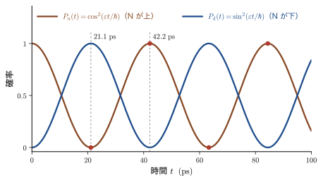
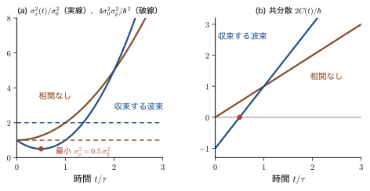
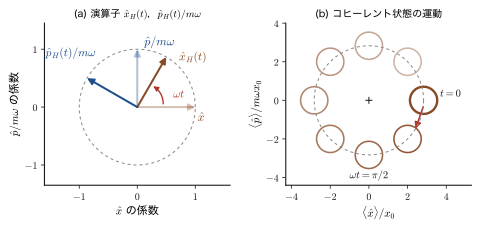
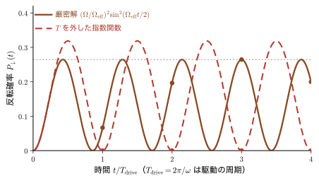
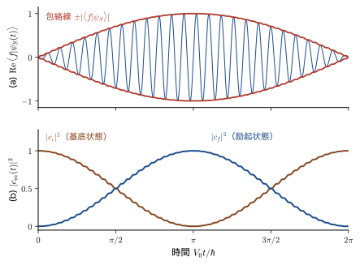

第50章時間発展演算子と 3 つの描像 — Schrödinger・Heisenberg・相互作用表示
前章では，時間を含む Schrödinger（シュレーディンガー）方程式を，エネルギー固有関数の重ね合わせ $\Psi(x,t)=\sum_nA_n\psi_n(x)\,e^{-iE_nt/\hbar}$ として解いた．最初の波動関数 $\Psi(x,0)$ を与えれば，その後の運命はすべて決まる，という決定論的な時間発展である．この章では，その「時間を進める」という操作そのものを，1 個の演算子 $e^{-i\hat{H}t/\hbar}$ として取り出す．この演算子はユニタリ（確率を保つ「回転」）であり，量子力学の時間発展の正体である．
ここから一歩進めると，面白いことが起きる．実験で測れるのは，物理量の期待値 $\langle\hat{A}\rangle=\mel{\psi(t)}{\hat{A}}{\psi(t)}$ と，測定値が得られる確率だけである．これらは「ブラ」「演算子」「ケット」を並べた式であり，時間変化を担う $e^{\mp i\hat{H}t/\hbar}$ を，ケットの側に置くか，演算子の側に置くか，あるいは半分ずつに分けるかは，計算上の約束にすぎない．この置き場所の選び方を，英語では picture といい，「描像」と訳す本も多い（章題の「描像」も同じ意味である）が，本書は線形応答理論（AD 08）に合わせて「表示」と呼ぶ．時間変化をケットに置けば Schrödinger 表示，演算子に置けば Heisenberg（ハイゼンベルク）表示，一部ずつ振り分ければ相互作用表示である．「電車の中から外を見るか，外から電車を見るか」の違いのように，見方を変えても物理は変わらない．変わるのは，問題の見通しの良さである．
どの見方が役に立つのかは，問題によって違う．Heisenberg 表示では，位置 $\hat{x}_H(t)$ と運動量 $\hat{p}_H(t)$ が，古典力学の Newton の運動方程式とそっくりの方程式に従う．古典力学とのつながりが一目でわかり，調和振動子では演算子の解が古典の解と「字面が同じ」になる．保存則は「ハミルトニアンと交換する」という一言になる．相互作用表示は，弱い光や電場をあてたときの電子の遷移（次章の時間依存摂動論，Fermi の黄金律，Rabi 振動）を扱うための道具である．解ける部分 $\hat{H}_0$ の速い位相の回転（ラジオの搬送波）を先に取り除き，摂動 $\hat{H}_1(t)$ が起こすゆっくりした変化（包絡線）だけを追いかける．この章で導く Dyson 級数は，時間依存摂動論，Green 関数，線形応答の Kubo 公式，場の量子論のすべてに共通の出発点である．
具体的な材料の例として，アンモニア分子 $\mathrm{NH_3}$ の反転振動（周期 $42\ \mathrm{ps}$），磁場中の電子スピンの Larmor 歳差（$1\ \mathrm{T}$ で $28\ \mathrm{GHz}$），自由電子の波束の広がり（$1\ \mathrm{nm}$ の大きさで $17\ \mathrm{fs}$），Si の光学フォノン（$520.5\ \mathrm{cm^{-1}}$，周期 $64\ \mathrm{fs}$），励起状態の寿命とスペクトル線の幅を，順に取り上げる．
- Schrödinger 方程式を $\ket{\psi_S(t)}=\hat{U}_S(t,t_0)\ket{\psi_S(t_0)}$ と書き，時間発展演算子 $\hat{U}_S(t,t_0)=e^{-i\hat{H}(t-t_0)/\hbar}$ を，べき級数と固有基底 $\sum_n\ket{n}e^{-iE_nt/\hbar}\bra{n}$ の 2 通りで理解すること
- $\hat{U}_S$ のユニタリ性 $\hat{U}_S^\dagger\hat{U}_S=\hat{1}$（確率の保存）と群の性質を，$\hat{H}=\hat{H}^\dagger$ から証明すること
- Heisenberg 表示 $\hat{A}_H(t)=e^{i\hat{H}t/\hbar}\hat{A}\,e^{-i\hat{H}t/\hbar}$ を導入し，運動方程式 $\dfrac{\dd\hat{A}_H}{\dd t}=\dfrac{i}{\hbar}\comm{\hat{H}}{\hat{A}_H}$ と Ehrenfest の定理を 3 行で導き，古典力学の Poisson 括弧と対応づけること
- 自由粒子（$\hat{x}_H(t)=\hat{x}+\hat{p}t/m$，異時刻の交換関係 $-i\hbar t/m$，波束の広がり）と調和振動子（$\hat{a}_H(t)=\hat{a}\,e^{-i\omega t}$）を Heisenberg 表示で解くこと
- エネルギー・時間の不確定性関係（Mandelstam–Tamm）を導き，状態が別の状態へ変わるのに必要な最短時間を見積もること
- 相互作用表示 $\ket{\psi_I(t)}=e^{i\hat{H}_0t/\hbar}\ket{\psi_S(t)}$ と $i\hbar\,\partial_t\hat{U}=\hat{H}_{1I}(t)\hat{U}$ を導き，Dyson 級数と時間順序積 $T$（係数 $1/n!$ の出し方）を理解し，遷移振幅の連立方程式 $i\hbar\dot{c}_m=\sum_nV_{mn}(t)e^{i\omega_{mn}t}c_n$ に到達すること
- 3 つの表示が同じ期待値と遷移確率を与えることを確かめ，問題に応じて使い分けること
もとにしたノート：本章はノートにない内容を補った章である．関連するノート：望月泰英『物理学ノート 量子力学3』 pp. 69–71（時間を含む Schrödinger 方程式と一般解），およびノート写真（Ehrenfest の定理）．
50.1 時間発展演算子とユニタリ性 — Schrödinger 表示
50.1.1 この章の見取り図 — 同じ物理を 3 通りに見る
第III部では，波動関数 $\Psi(x,t)$ を位置 $x$ の関数として扱い，Schrödinger 方程式を偏微分方程式として解いてきた．この章では，状態そのものを表す抽象的なケット $\ket{\psi_S(t)}$ を主役にする．添字の $S$ は Schrödinger の頭文字である．波動関数は，このケットの位置表示，すなわち位置の固有ケット $\ket{x}$ との内積 $\Psi(x,t)=\braket{x}{\psi_S(t)}$ である（第10章 10.6）．時間を含む Schrödinger 方程式（公理8.5）は，Dirac 記法で
\begin{equation} i\hbar\,\frac{\dd}{\dd t}\ket{\psi_S(t)}=\hat{H}\,\ket{\psi_S(t)} \label{eq:50-tdse} \end{equation}と書ける．両辺に左から $\bra{x}$ をかけると，$i\hbar\,\partial\Psi(x,t)/\partial t=\hat{H}\Psi(x,t)$（$\hat{H}$ は $x$ 表示では微分演算子）という，おなじみの形に戻る．$\hat{H}$ はエルミート演算子（$\hat{H}^\dagger=\hat{H}$）で，この節では時間に陽に依らないとする（時間に依る場合は 50.1.7 節）．物理量を表す演算子 $\hat{A}$ も時間に陽に依らないものだけを考える．
数学の道具：ブラ・ケットの復習
この章では，Dirac 記法（第10章 10.2）を続けて使う．記号の意味を先にまとめておく．
- $\ket{\psi}$（ケット）は状態を表すベクトルで，列ベクトルにあたる．$\bra{\phi}$（ブラ）は，ケットの共役転置（転置して複素共役をとったもの）で，行ベクトルにあたる．$\braket{\phi}{\psi}$ は 2 つの状態の内積（複素数）で，$\braket{\psi}{\phi}=\braket{\phi}{\psi}^*$ である．
- $\ket{n}\bra{n}$ は，状態 $\ket{n}$ への射影演算子である（列ベクトルと行ベクトルの積は行列になる）．正規直交（$\braket{m}{n}=\delta_{mn}$）で完全な状態の組については，$\sum_n\ket{n}\bra{n}=\hat{1}$（完全性）．恒等演算子 $\hat{1}$ を挟むと，任意のケットが $\ket{\psi}=\sum_n\ket{n}\braket{n}{\psi}$ と展開できる．
- $\braket{x}{\psi}=\Psi(x)$ は，ケット $\ket{\psi}$ を位置 $x$ の表示で書いた波動関数である．
- エルミート共役（$\dagger$）：$(\hat{A}\ket{\psi})^\dagger=\bra{\psi}\hat{A}^\dagger$，$(\hat{A}\hat{B})^\dagger=\hat{B}^\dagger\hat{A}^\dagger$（順序が逆になる）．$\hat{A}^\dagger=\hat{A}$ のときエルミート，$\hat{U}^\dagger\hat{U}=\hat{1}$ のときユニタリという．
- $\mel{\phi}{\hat{A}}{\psi}$ は行列要素（複素数）である．$\hat{A}$ がエルミートなら，$\mel{\psi}{\hat{A}}{\psi}$ は実数で，$\hat{A}$ の期待値 $\langle\hat{A}\rangle$ である．
実験で測れるのは，次の 2 種類の量だけである．
- 物理量 $\hat{A}$ の期待値 $\langle\hat{A}\rangle(t)=\mel{\psi_S(t)}{\hat{A}}{\psi_S(t)}$．
- ある状態 $\ket{f}$ に見いだされる確率 $\abs{\braket{f}{\psi_S(t)}}^2$（遷移確率や測定値の確率）．
どちらも「ブラ・演算子・ケット」を並べた式であり，時間変化は，式 \eqref{eq:50-tdse} の解に入っている．この解を $e^{-i\hat{H}t/\hbar}$ という演算子の形に書くと，「時間変化をどこに置くか」の選択肢が生まれる．
イメージ：電車の中から見るか，外から見るか
走る電車の中に立っている人と，線路の脇から電車を見ている人は，同じ出来事を別の座標系で記述している．どちらで見ても，「乗客が窓際に着く」という出来事の起こる時刻や順序は変わらない．Schrödinger 表示は「測定装置（演算子）は固定されていて，系（状態）が動く」という見方であり，Heisenberg 表示は「系は固定されていて，測定装置のほうが動く」という見方である．相互作用表示は，ちょうど電車と同じ速さで動く座標系（回転座標系）に乗り，残りのゆっくりした動きだけを観察する見方にあたる．
50.1.2 時間発展演算子 $\hat{U}_S$ — Schrödinger 方程式の形式解
式 \eqref{eq:50-tdse} は時間について 1 階の線形微分方程式である．したがって，ある時刻 $t_0$ の状態 $\ket{\psi_S(t_0)}$ を与えると，任意の時刻 $t$ の状態 $\ket{\psi_S(t)}$ が一意に決まる．しかも方程式が線形なので，$t_0$ の状態を 2 倍すれば $t$ の状態も 2 倍になり，$t_0$ の 2 つの状態の和は，$t$ の 2 つの状態の和に移る（重ね合わせの原理）．したがって，$\ket{\psi_S(t_0)}$ から $\ket{\psi_S(t)}$ を作る写像は，線形な演算子である．これが時間発展演算子である．
その形は，高校の数学で知っている指数関数の微分方程式から想像できる．定数 $a$ に対して，$\dd y/\dd t=-a\,y$ の解は $y(t)=y(t_0)\,e^{-a(t-t_0)}$ である．式 \eqref{eq:50-tdse} は $\dd\ket{\psi_S}/\dd t=-\dfrac{i}{\hbar}\hat{H}\ket{\psi_S}$ と書けるので，$a$ を演算子 $\dfrac{i}{\hbar}\hat{H}$ に置き換えて，次の定義を得る．
定義50.1 時間発展演算子（Schrödinger 表示）
$\hat{H}$ が時間に陽に依らないとき，
\begin{equation} \hat{U}_S(t,t_0)\equiv\exp\left[-\frac{i\hat{H}(t-t_0)}{\hbar}\right]=\sum_{n=0}^{\infty}\frac{1}{n!}\left(-\frac{i(t-t_0)}{\hbar}\right)^{n}\hat{H}^{\,n} \label{eq:50-Udef} \end{equation}を時間発展演算子（time evolution operator）という．$\hat{H}^{\,0}=\hat{1}$ は恒等演算子である．これを使うと，Schrödinger 方程式 \eqref{eq:50-tdse} の解は
\begin{equation} \ket{\psi_S(t)}=\hat{U}_S(t,t_0)\,\ket{\psi_S(t_0)} \label{eq:50-Uact} \end{equation}と書ける．添字 $S$ は Schrödinger 表示であることを表す．
指数関数の引数 $\hat{H}(t-t_0)/\hbar$ は，（エネルギー）×（時間）÷（エネルギー×時間）で無次元である．指数関数の引数は無次元でなければならないので，$\hbar$ で割るのである．
導出：式 \eqref{eq:50-Uact} が Schrödinger 方程式を満たすこと
式 \eqref{eq:50-Udef} の右辺で $t$ に依存するのは $(t-t_0)^n$ だけである（$\hat{H}$ は時間に依らない）．項別に $t$ で微分すると，$n=0$ の項は定数なので消え，$\dd(t-t_0)^n/\dd t=n(t-t_0)^{n-1}$ と $n/n!=1/(n-1)!$ を使って，
$$ \frac{\partial}{\partial t}\hat{U}_S=\sum_{n=1}^{\infty}\frac{1}{(n-1)!}\left(-\frac{i}{\hbar}\right)^{n}(t-t_0)^{n-1}\hat{H}^{\,n} $$となる．右辺から $-\dfrac{i}{\hbar}\hat{H}$ を 1 個だけくくり出し（$\hat{H}$ は自分自身のべき $\hat{H}^{\,n-1}$ と交換するので，左から出してよい），$m=n-1$ とおくと，
$$ \frac{\partial}{\partial t}\hat{U}_S=-\frac{i}{\hbar}\hat{H}\sum_{m=0}^{\infty}\frac{1}{m!}\left(-\frac{i(t-t_0)}{\hbar}\right)^{m}\hat{H}^{\,m}=-\frac{i}{\hbar}\hat{H}\,\hat{U}_S $$となり，和は元の級数に戻る．両辺に $i\hbar$ をかけて，
\begin{equation} i\hbar\,\frac{\partial}{\partial t}\hat{U}_S(t,t_0)=\hat{H}\,\hat{U}_S(t,t_0),\qquad\hat{U}_S(t_0,t_0)=\hat{1} \label{eq:50-Ueq} \end{equation}を得る（$t=t_0$ では級数の $n=0$ の項 $\hat{1}$ だけが残る）．これを $\ket{\psi_S(t_0)}$ にかけると，$\ket{\psi_S(t)}=\hat{U}_S\ket{\psi_S(t_0)}$ が式 \eqref{eq:50-tdse} を満たし，$t=t_0$ で正しい初期値をとることがわかる．方程式は 1 階なので，初期値を決めれば解は一意であり，式 \eqref{eq:50-Uact} が解のすべてである．
（導出終わり）
$\hat{H}$ は一般に無限次元の演算子（微分演算子）であり，べき級数 \eqref{eq:50-Udef} の収束には数学的な配慮が要る．次の 50.1.3 節で述べる固有基底による定義は，そのような配慮をしなくてよい．以下では，物理学で普通に行われるように，両方の書き方を同じものとして使う．
注意：本書には 2 つの時間発展演算子 $\hat{U}_S$ と $\hat{U}$ がある
この章では，時間発展を担う演算子が 2 種類出てくる．混同しないために，最初に対比しておく．
| 記号 | 何を進めるか | 生成するハミルトニアン | この章のどこ |
|---|---|---|---|
| $\hat{U}_S(t,t_0)$ | Schrödinger 表示の状態 $\ket{\psi_S}$ | 全体の $\hat{H}$（$=\hat{H}_0+\hat{H}_1$） | 50.1 節，50.5.4 節 |
| $\hat{U}(t,t_0)$ | 相互作用表示の状態 $\ket{\psi_I}$ | 摂動だけの $\hat{H}_{1I}(t)$ | 50.5 節 |
両者は $\hat{U}_S(t,t_0)=e^{-i\hat{H}_0t/\hbar}\,\hat{U}(t,t_0)\,e^{i\hat{H}_0t_0/\hbar}$（式 \eqref{eq:50-USU}）という関係にある．線形応答理論（AD 08）の第6章で $\hat{U}(t,t_0)$ と書かれているのは，相互作用表示のほうである．
なお，添字の $S$（Schrödinger 表示）は，スピン演算子 $\hat{S}_x,\hat{S}_y,\hat{S}_z$ の文字 $S$ と偶然に同じである．スピンの演算子には添字 $x,y,z$ が付くので，$\hat{U}_S$ とは区別できる．
数学の道具：行列（演算子）の指数関数
数の指数関数 $e^x=\sum_nx^n/n!$（大学数学 第4章 4.2）のべき級数を，そのまま行列や演算子 $\hat{X}$ に拡張したものが，$e^{\hat{X}}=\sum_{n=0}^{\infty}\hat{X}^n/n!$ である．実際の計算には，次の 3 つの見方を使い分ける．
- べき級数：$\hat{X}$ のべきが簡単に求まるとき．たとえば $\hat{X}^2\propto\hat{1}$ なら，偶数次と奇数次に分けて足す（下の 2×2 行列の例）．
- 対角化：$\hat{X}$ が対角化できて $X=PDP^{-1}$（$D$ は対角行列）なら，$X^n=PD^nP^{-1}$ なので $e^{X}=P\,e^{D}\,P^{-1}$，ここで $e^{D}$ は対角成分 $d_i$ を $e^{d_i}$ に置き換えた対角行列である（大学数学 第12章 12.4）．50.1.3 節の固有基底による表示は，これの演算子版である．
- 微分方程式：$\hat{U}(t)=e^{-i\hat{H}t/\hbar}$ は $i\hbar\,\dot{\hat{U}}=\hat{H}\hat{U}$，$\hat{U}(0)=\hat{1}$ の唯一の解（式 \eqref{eq:50-Ueq}）．
注意：数では $e^ae^b=e^{a+b}$ だが，演算子では，一般に $e^{\hat{A}}e^{\hat{B}}\ne e^{\hat{A}+\hat{B}}$ である．$\comm{\hat{A}}{\hat{B}}=0$ ならば等号が成り立つ（十分条件）．交換子が $0$ でないときは，たいていは等号が崩れる（一般の場合の公式は 50.2.2 節の Baker–Campbell–Hausdorff の公式，時間に依存する場合の非可換性の効果は 50.5.5 節）．同じ演算子のべきどうし，たとえば $e^{a\hat{H}}e^{b\hat{H}}=e^{(a+b)\hat{H}}$ は，交換するので成り立つ．
例：2×2 行列 Pauli 行列（第23章 23.7）を使った $e^{-i\theta\,\bm{u}\cdot\bm{\sigma}}$（$\bm{u}$ は単位ベクトル，$\theta$ は実数）を求める．$\bm{u}\cdot\bm{\sigma}=u_x\sigma_x+u_y\sigma_y+u_z\sigma_z$ の 2 乗は，反交換関係 $\acomm{\sigma_i}{\sigma_j}=2\delta_{ij}$ から，
$$ (\bm{u}\cdot\bm{\sigma})^2=\sum_{i,j}u_iu_j\sigma_i\sigma_j=\sum_iu_i^2\sigma_i^2+\sum_{i\lt j}u_iu_j\acomm{\sigma_i}{\sigma_j}=u_x^2+u_y^2+u_z^2=1 $$となる（$\sigma_i^2=1$）．したがって $(\bm{u}\cdot\bm{\sigma})^{2k}=1$，$(\bm{u}\cdot\bm{\sigma})^{2k+1}=\bm{u}\cdot\bm{\sigma}$ である．べき級数を偶数次と奇数次に分けると，
\begin{equation} e^{-i\theta\,\bm{u}\cdot\bm{\sigma}}=\sum_{k=0}^\infty\frac{(-1)^k\theta^{2k}}{(2k)!}\,\hat{1}-i\sum_{k=0}^\infty\frac{(-1)^k\theta^{2k+1}}{(2k+1)!}\,\bm{u}\cdot\bm{\sigma}=\cos\theta-i\,(\bm{u}\cdot\bm{\sigma})\sin\theta \label{eq:50-expsigma} \end{equation}を得る（$(-i\theta)^{2k}=(-1)^k\theta^{2k}$，$(-i\theta)^{2k+1}=-i(-1)^k\theta^{2k+1}$ を使った．Euler の公式 $e^{-i\theta}=\cos\theta-i\sin\theta$（大学数学 第21章 21.4）の $i$ を $i\,\bm{u}\cdot\bm{\sigma}$ に置き換えた形である）．この式は，この章の例題で何度も使う．
50.1.3 固有基底での表示 — 各固有状態に位相をかけるだけ
$\hat{H}$ の固有状態を $\hat{H}\ket{n}=E_n\ket{n}$ とする．固有状態は正規直交で（$\braket{m}{n}=\delta_{mn}$），完全である（$\sum_n\ket{n}\bra{n}=\hat{1}$．第10章 10.2）．このとき，時間発展演算子は次のように書ける．
定理50.1 時間発展演算子の固有基底による表示
\begin{equation} e^{-i\hat{H}t/\hbar}=\sum_n\ket{n}\,e^{-iE_nt/\hbar}\,\bra{n} \label{eq:50-spectral} \end{equation}である（連続スペクトルでは $\sum_n\to\int\dd E$）．すなわち，$\hat{U}_S$ は各固有状態 $\ket{n}$ に位相因子 $e^{-iE_nt/\hbar}$ をかけるだけの演算子である．
証明
恒等演算子 $\hat{1}=\sum_n\ket{n}\bra{n}$ を $\hat{H}^k$ の右から挿入すると，$\hat{H}^k\ket{n}=E_n^k\ket{n}$ より，
$$ \hat{H}^k=\hat{H}^k\sum_n\ket{n}\bra{n}=\sum_nE_n^k\ket{n}\bra{n} $$である．これを式 \eqref{eq:50-Udef}（$t_0=0$）に代入する．和の順序を入れ替えると，
$$ e^{-i\hat{H}t/\hbar}=\sum_{k=0}^{\infty}\frac{1}{k!}\left(-\frac{it}{\hbar}\right)^k\sum_nE_n^k\ket{n}\bra{n}=\sum_n\left[\sum_{k=0}^{\infty}\frac{1}{k!}\left(-\frac{iE_nt}{\hbar}\right)^k\right]\ket{n}\bra{n}=\sum_ne^{-iE_nt/\hbar}\ket{n}\bra{n} $$となる．角括弧の中は，数 $-iE_nt/\hbar$ の指数関数のべき級数そのものである．
（証明終わり）
この式から，前章の一般解が直ちに得られる．時刻 $t_0=0$ の状態を $\ket{\psi_S(0)}$ とすると，
\begin{equation} \ket{\psi_S(t)}=\sum_n\ket{n}\,e^{-iE_nt/\hbar}\braket{n}{\psi_S(0)}=\sum_nA_n\,e^{-iE_nt/\hbar}\ket{n},\qquad A_n=\braket{n}{\psi_S(0)} \label{eq:50-expand} \end{equation}である．左から $\bra{x}$ をかけて $\psi_n(x)=\braket{x}{n}$ とおくと，$\Psi(x,t)=\sum_nA_n\psi_n(x)\,e^{-iE_nt/\hbar}$ となり，前章の「定常状態の重ね合わせ」そのものである．展開係数 $A_n=\braket{n}{\psi_S(0)}=\int\psi_n^*(x)\Psi(x,0)\dd x$ も同じである．前章の解き方（初期状態を固有状態で展開し，各成分に位相をかける）は，$e^{-i\hat{H}t/\hbar}$ の固有基底による定義を，実際に計算する手順にほかならない．位相の回転の速さ $E_n/\hbar$ は成分ごとに違うので，重ね合わせの相対位相が時間とともに変わり，これが干渉（量子ビート）の原因である．それぞれの成分の大きさ $\abs{A_n}$（エネルギーを測って $E_n$ を得る確率 $\abs{A_n}^2$）は，時間が経っても変わらない．
橋渡し：伝搬関数と遅延 Green 関数（第55章）
時間発展演算子の位置表示（式 \eqref{eq:50-spectral} の左から $\bra{x}$，右から $\ket{x'}$ をかけ，$\psi_n(x)=\braket{x}{n}$，$\psi_n^*(x')=\braket{n}{x'}$ を使う）
\begin{equation} K(x,t;x',t_0)\equiv\mel{x}{\hat{U}_S(t,t_0)}{x'}=\sum_n\psi_n(x)\,\psi_n^*(x')\,e^{-iE_n(t-t_0)/\hbar} \label{eq:50-propagator} \end{equation}を伝搬関数（propagator）という．$\ket{\psi_S(t)}=\hat{U}_S\ket{\psi_S(t_0)}$ の左から $\bra{x}$ をかけ，$\hat{1}=\int\ket{x'}\bra{x'}\dd x'$ を挟むと，$\Psi(x,t)=\int K(x,t;x',t_0)\,\Psi(x',t_0)\dd x'$ となる．$K$ は，時刻 $t_0$ に位置 $x'$ にいた粒子が，時刻 $t$ に位置 $x$ に見いだされる振幅を表す．
時間の向きを $t\gt0$ に限る（因果律を入れる）ために，階段関数 $\theta(t)$（$t\gt0$ で $1$，$t\lt0$ で $0$）をかけた演算子
\begin{equation} K^{\mathrm{R}}(t)=-\frac{i}{\hbar}\,\theta(t)\,e^{-i\hat{H}t/\hbar} \label{eq:50-KR} \end{equation}が遅延 Green 関数（retarded Green's function）で，位置表示は $-\dfrac{i}{\hbar}\theta(t)K(x,t;x',0)$ である．収束因子 $e^{-\eta t/\hbar}$（$\eta\to+0$）を付けて，時間の Fourier 変換（時間の核 $e^{+iEt/\hbar}$）をとると，$\displaystyle\int_{-\infty}^{\infty}\dd t\,e^{iEt/\hbar}e^{-\eta t/\hbar}K^{\mathrm{R}}(t)=-\frac{i}{\hbar}\int_0^{\infty}e^{i(E-\hat{H}+i\eta)t/\hbar}\dd t=\frac{1}{E-\hat{H}+i\eta}=\hat{G}(E)$ となる．この $\hat{G}(E)=(E-\hat{H}+i\eta)^{-1}$ が，第55章（Green 関数）の主役である．時間発展演算子は，Green 関数の時間表示にほかならない．
例題50.1 アンモニア分子 $\mathrm{NH_3}$ の反転 — 2 準位系の時間発展
$\mathrm{NH_3}$ 分子は，3 つの H 原子がつくる正三角形の面に対して，N 原子が上にある配置 $\ket{u}$ と，下にある配置 $\ket{d}$ の 2 通りの安定な形をもつ．N 原子は面をトンネル効果（第12章）で通り抜けるので，この 2 つの状態を基底とするハミルトニアンは，$\hat{H}=\begin{bmatrix}E_0&-\varepsilon\\-\varepsilon&E_0\end{bmatrix}$（$\varepsilon\gt0$）と書ける．$\ket{u}$ と $\ket{d}$ は，それぞれ第 1 列，第 2 列の基底である．(1) 固有状態とエネルギーを求めよ．(2) 時刻 $t=0$ に N が上にあったとして，時間発展演算子 $\hat{U}_S(t,0)$ を求め，N が上に見いだされる確率 $P_{\mathrm{u}}(t)$ を求めよ．(3) 2 つの準位の間隔は $2\varepsilon=hf$ で，$f=23.694\ \mathrm{GHz}$（回転状態 $(J,K)=(1,1)$ の反転線の値）である．$2\varepsilon$ を $\mathrm{eV}$ で，反転の周期を求めよ．
解答 (1) $\hat{H}=E_0\hat{1}-\varepsilon\sigma_x$（$\sigma_x$ は $\ket{u},\ket{d}$ を基底とする Pauli 行列）である．$\sigma_x$ の固有値は $\pm1$ で，固有ベクトルは $(\ket{u}\pm\ket{d})/\sqrt{2}$ だから，
$$ \ket{\mathrm{S}}=\frac{\ket{u}+\ket{d}}{\sqrt{2}}\ (E_{\mathrm{S}}=E_0-\varepsilon),\qquad \ket{\mathrm{A}}=\frac{\ket{u}-\ket{d}}{\sqrt{2}}\ (E_{\mathrm{A}}=E_0+\varepsilon) $$である．偶関数的な（対称な）結合 $\ket{\mathrm{S}}$ のほうが $2\varepsilon$ だけ低い．これが「反転分裂」であり，トンネル効果が強いほど大きい．
(2) 式 \eqref{eq:50-expsigma}（$\bm{u}=\bm{e}_x$，$\theta=-\varepsilon t/\hbar$）を使うと，$e^{-i\hat{H}t/\hbar}=e^{-iE_0t/\hbar}\,e^{+i\varepsilon t\sigma_x/\hbar}$ より，
$$ \hat{U}_S(t,0)=e^{-iE_0t/\hbar}\left[\cos\frac{\varepsilon t}{\hbar}+i\sigma_x\sin\frac{\varepsilon t}{\hbar}\right]=e^{-iE_0t/\hbar}\begin{bmatrix}\cos\dfrac{\varepsilon t}{\hbar}&i\sin\dfrac{\varepsilon t}{\hbar}\\[2mm] i\sin\dfrac{\varepsilon t}{\hbar}&\cos\dfrac{\varepsilon t}{\hbar}\end{bmatrix} $$である．固有基底による計算で確かめよう．$\ket{u}=(\ket{\mathrm{S}}+\ket{\mathrm{A}})/\sqrt{2}$ に式 \eqref{eq:50-spectral} を作用させると，$\theta\equiv\varepsilon t/\hbar$ として
$$ \hat{U}_S\ket{u}=\frac{1}{\sqrt{2}}\left(e^{-i(E_0-\varepsilon)t/\hbar}\ket{\mathrm{S}}+e^{-i(E_0+\varepsilon)t/\hbar}\ket{\mathrm{A}}\right)=\frac{e^{-iE_0t/\hbar}}{\sqrt{2}}\left(e^{i\theta}\ket{\mathrm{S}}+e^{-i\theta}\ket{\mathrm{A}}\right) $$である．$\ket{\mathrm{S}},\ket{\mathrm{A}}$ を $\ket{u},\ket{d}$ で書き戻すと，
$$ \hat{U}_S\ket{u}=e^{-iE_0t/\hbar}\left[\frac{e^{i\theta}+e^{-i\theta}}{2}\ket{u}+\frac{e^{i\theta}-e^{-i\theta}}{2}\ket{d}\right]=e^{-iE_0t/\hbar}\bigl[\cos\theta\,\ket{u}+i\sin\theta\,\ket{d}\bigr] $$となり，行列の第 1 列と一致する．N が上に見いだされる確率と，下に見いだされる確率は，
\begin{equation} P_{\mathrm{u}}(t)=\abs{\braket{u}{\psi_S(t)}}^2=\cos^2\frac{\varepsilon t}{\hbar},\qquad P_{\mathrm{d}}(t)=\abs{\braket{d}{\psi_S(t)}}^2=\sin^2\frac{\varepsilon t}{\hbar} \label{eq:50-nh3} \end{equation}である（全体の位相 $e^{-iE_0t/\hbar}$ は確率に影響しない．$P_{\mathrm{u}}+P_{\mathrm{d}}=1$）．N は，上と下を周期的に行き来する．
(3) $2\varepsilon=hf=(4.1357\times10^{-15}\ \mathrm{eV\,s})(23.694\times10^{9}\ \mathrm{s^{-1}})=9.80\times10^{-5}\ \mathrm{eV}$ である（波数に直すと $0.790\ \mathrm{cm^{-1}}$）．よって $\varepsilon=4.90\times10^{-5}\ \mathrm{eV}$．$\varepsilon t/\hbar=\pi ft$（$\varepsilon=hf/2=\pi\hbar f$）だから，$P_{\mathrm{u}}(t)=\cos^2(\pi ft)$ の周期は $1/f=42.2\ \mathrm{ps}$ である．N が完全に反対側に移る（$P_{\mathrm{d}}=1$）のは，$\pi ft=\pi/2$，すなわち $t=1/(2f)=21.1\ \mathrm{ps}$ のときである（図50.2）．

応用：アンモニア・メーザー
$\mathrm{NH_3}$ の反転に対応するマイクロ波の吸収線は，$23.7\ \mathrm{GHz}$ から $25\ \mathrm{GHz}$ 付近まで（波長は約 $1.2$〜$1.3\ \mathrm{cm}$）に並び，振動数は分子の回転状態 $(J,K)$ によってわずかに違う．例題の $f=23.694\ \mathrm{GHz}$ は，$(J,K)=(1,1)$ の線の値である（2 準位モデルの $2\varepsilon=hf$ に，回転による補正が $(J,K)$ ごとに加わる）．1954 年に Gordon，Zeiger，Townes が実現した最初の増幅器（メーザー，maser）は，$(J,K)=(3,3)$ の線（約 $23.87\ \mathrm{GHz}$）を使った．のちのレーザー（第53章）の先駆けとなった．上の例題は，その分子の中で N 原子が上と下を $23.7$ ギガ回／秒で入れ替わり続けるという，量子力学に特有の姿（トンネル効果による振動）を，2×2 行列の指数関数だけで描いたものである．
50.1.4 ユニタリ性と確率の保存
ここで最も大切な性質は，時間発展によって確率が保たれることである．$\ket{\psi_S(t)}$ が規格化されていれば，$\braket{\psi_S(t)}{\psi_S(t)}=1$ が，どの時刻でも成り立たなければならない（粒子は消えたり増えたりしない．第9章 9.3 の確率の保存則）．これを演算子の言葉で言うと，$\hat{U}_S$ がユニタリであるということである．
定理50.2 時間発展演算子のユニタリ性
$\hat{H}=\hat{H}^\dagger$（エルミート）ならば，$\hat{U}_S(t,t_0)$ はユニタリである：
\begin{equation} \hat{U}_S^\dagger(t,t_0)\,\hat{U}_S(t,t_0)=\hat{U}_S(t,t_0)\,\hat{U}_S^\dagger(t,t_0)=\hat{1} \label{eq:50-unitary} \end{equation}したがって，逆演算子は $\hat{U}_S^{-1}=\hat{U}_S^\dagger$ で，状態のノルムも，2 つの状態の内積も，時間発展で変わらない：
\begin{equation} \braket{\phi_S(t)}{\psi_S(t)}=\braket{\phi_S(t_0)}{\psi_S(t_0)} \label{eq:50-norm} \end{equation}証明
$\Delta t=t-t_0$（実数）とおく．べき級数 \eqref{eq:50-Udef} のエルミート共役をとる．積のエルミート共役は順序が逆になり，$(\hat{H}^n)^\dagger=(\hat{H}^\dagger)^n=\hat{H}^n$ で，数の係数は複素共役になる：$(-i\Delta t/\hbar)^*=+i\Delta t/\hbar$．したがって，
$$ \hat{U}_S^\dagger=\sum_{n=0}^{\infty}\frac{1}{n!}\left(\frac{i\Delta t}{\hbar}\right)^n\hat{H}^n=\exp\left[+\frac{i\hat{H}\Delta t}{\hbar}\right] $$である．ここで $\hat{H}=\hat{H}^\dagger$ を使った．$\hat{H}$ がエルミートでなければ，$\hat{U}_S^\dagger$ は $e^{+i\hat{H}^\dagger\Delta t/\hbar}$ となり，$\hat{H}$ と $\hat{H}^\dagger$ が交換しないので，次の計算が進まない．$e^{+i\hat{H}\Delta t/\hbar}$ と $e^{-i\hat{H}\Delta t/\hbar}$ は，同じ $\hat{H}$ のべき級数どうしなので交換する．任意の複素数 $\alpha,\beta$ について，$\hat{H}^m\hat{H}^n=\hat{H}^{m+n}$ と二項定理から，$e^{\alpha\hat{H}}e^{\beta\hat{H}}=\displaystyle\sum_{m,n}\frac{\alpha^m\beta^n}{m!\,n!}\hat{H}^{m+n}=\sum_{N=0}^{\infty}\frac{\hat{H}^N}{N!}\sum_{m=0}^{N}\binom{N}{m}\alpha^m\beta^{N-m}=\sum_{N=0}^{\infty}\frac{(\alpha+\beta)^N}{N!}\hat{H}^N=e^{(\alpha+\beta)\hat{H}}$ である（$N=m+n$ とまとめた）．つまり，2 つの級数の積は指数の足し算になる．$\alpha=i\Delta t/\hbar$，$\beta=-i\Delta t/\hbar$ として，
$$ \hat{U}_S^\dagger\hat{U}_S=e^{+i\hat{H}\Delta t/\hbar}\,e^{-i\hat{H}\Delta t/\hbar}=e^{0}=\hat{1} $$順序を逆にしても同じなので，式 \eqref{eq:50-unitary} が示された．内積については，$\ket{\phi_S(t)}=\hat{U}_S\ket{\phi_S(t_0)}$，$\bra{\phi_S(t)}=\bra{\phi_S(t_0)}\hat{U}_S^\dagger$ より，
$$ \braket{\phi_S(t)}{\psi_S(t)}=\bra{\phi_S(t_0)}\hat{U}_S^\dagger\hat{U}_S\ket{\psi_S(t_0)}=\braket{\phi_S(t_0)}{\psi_S(t_0)} $$である．$\ket{\phi_S}=\ket{\psi_S}$ とおけばノルムの保存になる．
固有基底で見ると，式 \eqref{eq:50-spectral} から $\hat{U}_S^\dagger\hat{U}_S=\sum_{m,n}\ket{m}e^{+iE_m\Delta t/\hbar}\braket{m}{n}e^{-iE_n\Delta t/\hbar}\bra{n}=\sum_n\ket{n}\bra{n}=\hat{1}$ である（$\braket{m}{n}=\delta_{mn}$ で，$e^{+iE_n\Delta t/\hbar}e^{-iE_n\Delta t/\hbar}=1$）．固有値 $E_n$ が実数であること（$\hat{H}$ がエルミート）が，位相因子の大きさが 1 であること，すなわちユニタリ性の原因である．
（証明終わり）
実数の世界の類似は「回転」である．平面上の回転行列 $R(\theta)$ は長さと角度を変えない（$R^{\mathsf T}R=1$）．ユニタリ演算子は，複素ベクトル空間の「回転」であり，状態ベクトルの長さ（ノルム）と，2 つのベクトルのなす角（内積）を変えない．時間発展とは，状態空間の中で状態ベクトルを回転させることである．
注意：$\hat{H}$ がエルミートでないと，確率は保存しない
励起状態が光を出して基底状態に移ると，「その励起状態にいる」確率は減っていく（寿命）．この減衰を，励起状態のエネルギーに虚部をもたせた有効ハミルトニアン $\hat{H}_{\mathrm{eff}}=\hat{H}-i\hbar\Gamma/2$（$\Gamma\gt0$）で現象論的に表すことがある．この場合 $\hat{H}_{\mathrm{eff}}^\dagger\ne\hat{H}_{\mathrm{eff}}$ で，$e^{-i\hat{H}_{\mathrm{eff}}t/\hbar}=e^{-i\hat{H}t/\hbar}\,e^{-\Gamma t/2}$ はユニタリでなく，ノルム $\sqrt{\braket{\psi}{\psi}}$ は $e^{-\Gamma t/2}$ で減り，ノルムの 2 乗（確率）は $e^{-\Gamma t}$ で減る．失われた確率は，他の状態（光子を含む状態）へ移ったのである．全体の系では，ハミルトニアンはエルミートで，時間発展はユニタリである（第52章）．
例題50.2 ユニタリ性の確認 — $e^{-i\varepsilon\sigma_xt/\hbar}$
$\hat{U}_S=\exp(-i\varepsilon\sigma_xt/\hbar)$ について，$\hat{U}_S^\dagger\hat{U}_S=\hat{1}$ と $\det\hat{U}_S$ を具体的に求めよ．また，任意の規格化された状態 $(a,b)^{\mathsf T}$（$\abs{a}^2+\abs{b}^2=1$）のノルムが保存されることを示せ．
解答 $\theta=\varepsilon t/\hbar$ とおくと，式 \eqref{eq:50-expsigma}（$\bm{u}=\bm{e}_x$）より $\hat{U}_S=\cos\theta-i\sigma_x\sin\theta=\begin{bmatrix}\cos\theta&-i\sin\theta\\-i\sin\theta&\cos\theta\end{bmatrix}$ である．エルミート共役は，転置して複素共役をとって $\hat{U}_S^\dagger=\begin{bmatrix}\cos\theta&i\sin\theta\\i\sin\theta&\cos\theta\end{bmatrix}$ である．積は，
$$ \hat{U}_S^\dagger\hat{U}_S=\begin{bmatrix}\cos^2\theta+(i\sin\theta)(-i\sin\theta)&-i\cos\theta\sin\theta+i\sin\theta\cos\theta\\ i\sin\theta\cos\theta-i\cos\theta\sin\theta&(i\sin\theta)(-i\sin\theta)+\cos^2\theta\end{bmatrix}=\begin{bmatrix}1&0\\0&1\end{bmatrix} $$（$(i)(-i)=1$ より対角成分は $\cos^2\theta+\sin^2\theta=1$，非対角成分は互いに打ち消し合う）．行列式は $\det\hat{U}_S=\cos^2\theta-(-i\sin\theta)^2=\cos^2\theta+\sin^2\theta=1$ である．これは $\det e^{\hat{X}}=e^{\mathrm{tr}\hat{X}}$ で $\mathrm{tr}(\sigma_x)=0$ から予想される．一般のハミルトニアン $\hat{H}=E_0\hat{1}+\varepsilon\sigma_x$ なら $\det\hat{U}_S=e^{-2iE_0t/\hbar}$ で，絶対値は 1，位相は $-\mathrm{tr}(\hat{H})\,t/\hbar$ である（ユニタリ行列の行列式は絶対値 1）．
任意の状態 $(a,b)^{\mathsf T}$ を $\hat{U}_S$ で進めると，成分は $a'=a\cos\theta-ib\sin\theta$，$b'=-ia\sin\theta+b\cos\theta$ である．
$$ \abs{a'}^2=\abs{a}^2\cos^2\theta+\abs{b}^2\sin^2\theta+2\cos\theta\sin\theta\,\mathrm{Re}(-i\,a^*b) $$ $$ \abs{b'}^2=\abs{a}^2\sin^2\theta+\abs{b}^2\cos^2\theta+2\cos\theta\sin\theta\,\mathrm{Re}(+i\,a^*b) $$（$\abs{u+v}^2=\abs{u}^2+\abs{v}^2+2\mathrm{Re}(u^*v)$ を使った．たとえば $a'$ では $u=a\cos\theta$，$v=-ib\sin\theta$）．足すと，交差項は $\mathrm{Re}(-ia^*b)+\mathrm{Re}(ia^*b)=0$ で消え，$\abs{a'}^2+\abs{b'}^2=(\abs{a}^2+\abs{b}^2)(\cos^2\theta+\sin^2\theta)=1$ となる．
50.1.5 群の性質 — 進めて，戻せる
定理50.3 時間発展演算子の群の性質
$\hat{H}$ が時間に依らないとき，次が成り立つ．
\begin{equation} \hat{U}_S(t_2,t_1)\,\hat{U}_S(t_1,t_0)=\hat{U}_S(t_2,t_0),\qquad\hat{U}_S(t,t)=\hat{1},\qquad\hat{U}_S(t,t_0)^{-1}=\hat{U}_S(t_0,t)=\hat{U}_S(t,t_0)^\dagger \label{eq:50-group} \end{equation}さらに $\hat{U}_S(t,t_0)$ は時間の差 $t-t_0$ だけに依り，$\hat{U}_S(t,t_0)=\hat{U}_S(t-t_0,0)$ である．
証明
$\hat{U}_S(t_2,t_1)\hat{U}_S(t_1,t_0)=e^{-i\hat{H}(t_2-t_1)/\hbar}e^{-i\hat{H}(t_1-t_0)/\hbar}=e^{-i\hat{H}[(t_2-t_1)+(t_1-t_0)]/\hbar}=e^{-i\hat{H}(t_2-t_0)/\hbar}$．途中で，同じ $\hat{H}$ の指数関数どうしの積は指数の和になること（$e^{a\hat{H}}e^{b\hat{H}}=e^{(a+b)\hat{H}}$）を使った．第 2 式は $t=t_0$ で指数が 0 になることから，第 3 式は $e^{-i\hat{H}(t-t_0)/\hbar}\,e^{-i\hat{H}(t_0-t)/\hbar}=e^0=\hat{1}$ と，定理50.2 のユニタリ性 $\hat{U}_S^{-1}=\hat{U}_S^\dagger$ から従う．最後の主張は，式 \eqref{eq:50-Udef} の右辺が $\hat{H}$ と $t-t_0$ だけで決まり，$t$ と $t_0$ を別々には含まないので，$\hat{U}_S(t,t_0)=\hat{U}_S(t-t_0,0)$ となることから従う．
（証明終わり）
第 1 式は，「$t_0$ から $t_1$ まで進めてから $t_1$ から $t_2$ まで進めるのは，$t_0$ から $t_2$ まで一度に進めるのと同じ」ということである．時間発展を途中で区切ってよいのは当たり前に思えるが，後の Dyson 級数（50.5 節）でこの性質を何度も使う．第 3 式は，$\hat{U}_S(t_0,t)$（時刻 $t$ から過去の $t_0$ へ戻す演算子）が存在することを表している．確率的な測定（波動関数の収縮）と違って，測定しない間の量子力学の時間発展は，可逆である．途中経過が失われるわけではなく，時刻 $t$ の状態から，過去のどの時刻の状態も一意に決まる．（物理学で「時間反転対称性」とよぶのは，時間の向きを逆にした運動もまた運動方程式の解であるという，別の性質である．）
50.1.6 $\hat{H}$ は時間並進の生成子
$\hat{U}_S=e^{-i\hat{H}\Delta t/\hbar}$ は，時間を $\Delta t$ だけずらす操作を表す演算子である．微小な $\Delta t$ では $\hat{U}_S\approx\hat{1}-i\hat{H}\Delta t/\hbar$ なので，$\hat{H}$ が「無限小の時間のずれ」を生み出すもとになっている．このような演算子を，変換の生成子（generator）という．同じ構造が，空間の並進や回転にも現れる．
たとえば，運動量演算子 $\hat{p}=-i\hbar\,\dd/\dd x$ を生成子とする演算子 $e^{-i\hat{p}a/\hbar}=e^{-a\,\dd/\dd x}$ を，関数 $\psi(x)$ に作用させると，Taylor 展開（大学数学 第4章 4.2）により，
$$ e^{-a\,\dd/\dd x}\psi(x)=\sum_{n=0}^{\infty}\frac{(-a)^n}{n!}\frac{\dd^n\psi}{\dd x^n}=\psi(x-a) $$となり，波動関数を右に $a$ だけずらす．同様に，$\hat{L}_z=-i\hbar\,\partial/\partial\varphi$ を生成子とする $e^{-i\hat{L}_z\varphi_0/\hbar}$ は，$\psi(\varphi)$ を $\psi(\varphi-\varphi_0)$ に変える（方位角 $\varphi_0$ だけの回転）．スピン $\tfrac12$ では，$e^{-i\hat{S}_z\varphi_0/\hbar}=e^{-i\sigma_z\varphi_0/2}$ が $z$ 軸まわりの回転を表す（第24章 24.9）．
| 変換 | 変換の演算子 | 生成子 | 対応する保存則 |
|---|---|---|---|
| 時間の並進（$\Delta t$ だけ） | $e^{-i\hat{H}\Delta t/\hbar}$ | $\hat{H}$ | エネルギー保存 |
| 空間の並進（$a$ だけ） | $e^{-i\hat{p}a/\hbar}$ | $\hat{p}$ | 運動量保存 |
| $z$ 軸まわりの回転（$\varphi_0$ だけ） | $e^{-i\hat{L}_z\varphi_0/\hbar}$ | $\hat{L}_z$ | 角運動量の $z$ 成分の保存 |
| スピンの回転 | $e^{-i\hat{S}_z\varphi_0/\hbar}$ | $\hat{S}_z$ | （磁場が $z$ 方向なら）$\hat{S}_z$ の保存 |
対称性と保存則の対応（古典力学の Noether の定理．大学基礎物理学 第46章 46.2）は，量子力学では「生成子が $\hat{H}$ と交換すること」と言い換えられる．これは 50.2 節で明らかになる．
例題50.3 磁場中の電子スピンの Larmor 歳差
電子スピンが，$z$ 方向の一様な磁場 $B=1\ \mathrm{T}$ の中にある．ハミルトニアンは $\hat{H}=\dfrac{g_s\mu_{\mathrm{B}}}{2}B\,\sigma_z=\dfrac{\hbar\omega_{\mathrm{L}}}{2}\sigma_z$，$\omega_{\mathrm{L}}=\dfrac{g_s\mu_{\mathrm{B}}B}{\hbar}$ である（第23章 23.9．$g_s=2.0023$）．(1) $\omega_{\mathrm{L}}$，周波数 $f_{\mathrm{L}}=\omega_{\mathrm{L}}/2\pi$，周期を求めよ．(2) 時刻 0 に $x$ 軸正の向きを向いた状態 $\ket{\psi_S(0)}=(\ket{\uparrow}+\ket{\downarrow})/\sqrt{2}$ から出発したとして，$\langle\hat{S}_x\rangle$，$\langle\hat{S}_y\rangle$，$\langle\hat{S}_z\rangle$ の時間変化を求めよ．(3) $\hat{U}_S=e^{-i\sigma_z\omega_{\mathrm{L}}t/2}$ を，$\omega_{\mathrm{L}}t=2\pi$ と $4\pi$ で評価せよ．（$\ket{\uparrow}=\alpha$，$\ket{\downarrow}=\beta$ とも書く．）
解答 (1) $\omega_{\mathrm{L}}=\dfrac{(2.0023)(9.2740\times10^{-24}\ \mathrm{J/T})(1\ \mathrm{T})}{1.05457\times10^{-34}\ \mathrm{J\,s}}=1.761\times10^{11}\ \mathrm{rad/s}$，$f_{\mathrm{L}}=\omega_{\mathrm{L}}/2\pi=28.02\ \mathrm{GHz}$，周期 $2\pi/\omega_{\mathrm{L}}=35.7\ \mathrm{ps}$ である．$\hbar\omega_{\mathrm{L}}=115.9\ \mu\mathrm{eV}$ は，2 つのスピン準位の間隔（ESR の共鳴エネルギー）である．
(2) $\hat{H}=(\hbar\omega_{\mathrm{L}}/2)\sigma_z$ は対角行列で，固有状態は $\ket{\uparrow},\ket{\downarrow}$（固有値 $\pm\hbar\omega_{\mathrm{L}}/2$）である．式 \eqref{eq:50-spectral} より $\hat{U}_S=\mathrm{diag}\bigl(e^{-i\omega_{\mathrm{L}}t/2},\,e^{+i\omega_{\mathrm{L}}t/2}\bigr)$ だから，
$$ \ket{\psi_S(t)}=\frac{1}{\sqrt{2}}\left(e^{-i\omega_{\mathrm{L}}t/2}\ket{\uparrow}+e^{+i\omega_{\mathrm{L}}t/2}\ket{\downarrow}\right) $$である．成分を $a=e^{-i\omega_{\mathrm{L}}t/2}/\sqrt{2}$，$b=e^{+i\omega_{\mathrm{L}}t/2}/\sqrt{2}$ とおくと，$\langle\sigma_x\rangle=a^*b+b^*a=2\,\mathrm{Re}(a^*b)$，$\langle\sigma_y\rangle=-ia^*b+ib^*a=2\,\mathrm{Im}(a^*b)$，$\langle\sigma_z\rangle=\abs{a}^2-\abs{b}^2$ で，$a^*b=e^{+i\omega_{\mathrm{L}}t}/2$ である．したがって，$\hat{\bm{S}}=\dfrac{\hbar}{2}\bm{\sigma}$ を使って
\begin{equation} \langle\hat{S}_x\rangle=\frac{\hbar}{2}\cos\omega_{\mathrm{L}}t,\qquad\langle\hat{S}_y\rangle=\frac{\hbar}{2}\sin\omega_{\mathrm{L}}t,\qquad\langle\hat{S}_z\rangle=0 \label{eq:50-larmor} \end{equation}を得る．スピンの向きは，$xy$ 面の中を，$+x$ 軸から $+y$ 軸の向きへ，角速度 $\omega_{\mathrm{L}}$ で回る．これを Larmor 歳差という．電子の磁気モーメントはスピンと逆向きなので（第23章 23.9），歳差の回転の向きは，磁場の向き（$+z$）から見て反時計まわりである．（任意の向きのスピンでは，$z$ 成分が一定で，$x$，$y$ 成分が回る円錐の運動になる．図50.3）．
(3) $\omega_{\mathrm{L}}t=2\pi$ のとき，$\hat{U}_S=\mathrm{diag}(e^{-i\pi},e^{i\pi})=-\hat{1}$ である．スピンは，向きとしては元に戻っているが，状態ベクトルの符号が反転している．$\omega_{\mathrm{L}}t=4\pi$ のとき，初めて $\hat{U}_S=+\hat{1}$ に戻る．スピノルは，$2\pi$ の回転では符号が変わり，$4\pi$ で元に戻る．この符号は，1 個のスピンだけでは全体の位相であって観測できないが，回転を受けたビームと受けていないビームを干渉させれば観測できる（1975 年に中性子干渉計で確かめられた）．
関連シミュレーター：スピノルを回転させると，$2\pi$ で符号が反転し $4\pi$ で元に戻る様子を，リー群シミュレーターの「② SU(2) と SO(3)」で確かめられる．
50.1.7 $\hat{H}$ が時間に依存するとき
ここまでは $\hat{H}$ が時間に依らないとしてきた．しかし，光や電場をあてた原子，振動する磁場の中のスピンのように，ハミルトニアンが時間とともに変わる問題（$\hat{H}=\hat{H}(t)$）が，この後の章の主役である．このとき Schrödinger 方程式は $i\hbar\,\dd\ket{\psi_S}/\dd t=\hat{H}(t)\ket{\psi_S}$ で，時間発展演算子を，同じく
\begin{equation} \ket{\psi_S(t)}=\hat{U}_S(t,t_0)\ket{\psi_S(t_0)}\ \text{で定義し，}\quad i\hbar\,\frac{\partial}{\partial t}\hat{U}_S(t,t_0)=\hat{H}(t)\,\hat{U}_S(t,t_0),\quad\hat{U}_S(t_0,t_0)=\hat{1} \label{eq:50-Utdep} \end{equation}とする．式 \eqref{eq:50-Ueq} の $\hat{H}$ を $\hat{H}(t)$ に変えただけである．ユニタリ性は，この場合にも成り立つ．
導出：$\hat{H}(t)$ でも $\hat{U}_S^\dagger\hat{U}_S=\hat{1}$
式 \eqref{eq:50-Utdep} とそのエルミート共役をとる．$(i\hbar\,\partial_t\hat{U}_S)^\dagger=-i\hbar\,\partial_t\hat{U}_S^\dagger$ で，$[\hat{H}(t)\hat{U}_S]^\dagger=\hat{U}_S^\dagger\hat{H}(t)$（$\hat{H}(t)$ はどの時刻でもエルミート）だから，
$$ \frac{\partial\hat{U}_S}{\partial t}=-\frac{i}{\hbar}\hat{H}(t)\hat{U}_S,\qquad\frac{\partial\hat{U}_S^\dagger}{\partial t}=+\frac{i}{\hbar}\hat{U}_S^\dagger\hat{H}(t) $$である．これを $\hat{U}_S^\dagger\hat{U}_S$ の時間微分に入れると，
$$ \frac{\partial}{\partial t}\bigl(\hat{U}_S^\dagger\hat{U}_S\bigr)=\frac{i}{\hbar}\hat{U}_S^\dagger\hat{H}(t)\hat{U}_S-\frac{i}{\hbar}\hat{U}_S^\dagger\hat{H}(t)\hat{U}_S=0 $$となる．$\hat{U}_S^\dagger\hat{U}_S$ は時間に依らず，$t=t_0$ で $\hat{1}$ だから，いつでも $\hat{1}$ である．
（導出終わり）
群の性質 $\hat{U}_S(t_2,t_1)\hat{U}_S(t_1,t_0)=\hat{U}_S(t_2,t_0)$ も成り立つ（左右の辺は，同じ微分方程式を同じ初期条件で満たすので，解の一意性から一致する）．ただし，$\hat{U}_S(t,t_0)$ は，もはや時間の差だけの関数ではない．
もう一つの違いは，次の点である．$\hat{H}$ が時間に依らないときの解 $e^{-i\hat{H}(t-t_0)/\hbar}$ の指数の中身 $\hat{H}\,(t-t_0)$ は，$\int_{t_0}^{t}\hat{H}\,\dd t'$ だから，$\hat{H}(t)$ の場合も $\exp\left[-\dfrac{i}{\hbar}\displaystyle\int_{t_0}^{t}\hat{H}(t')\dd t'\right]$ が解だろうと想像したくなる．これは，一般には誤りである．理由は，2 次の項を調べるとわかる．$A(t)\equiv\displaystyle\int_{t_0}^{t}\hat{H}(t')\dd t'$ とおく．
- この予想の指数関数 $e^{-iA/\hbar}$ の 2 次の項は $\dfrac12\left(-\dfrac{i}{\hbar}\right)^2A^2$ で，$t$ で微分すると，$\dfrac12\left(-\dfrac{i}{\hbar}\right)^2\bigl(\hat{H}(t)A+A\hat{H}(t)\bigr)$ となる．
- 一方，正しい方程式 \eqref{eq:50-Utdep} に $\hat{U}_S=\hat{1}-\dfrac{i}{\hbar}A+\hat{U}^{(2)}+\cdots$ を代入すると，$\hat{U}^{(2)}$ は $i\hbar\,\partial_t\hat{U}^{(2)}=\hat{H}(t)\left(-\dfrac{i}{\hbar}A\right)$ を満たす．すなわち $\partial_t\hat{U}^{(2)}=\left(-\dfrac{i}{\hbar}\right)^2\hat{H}(t)\,A(t)$ である．
両者が一致するのは，$\hat{H}(t)A(t)=A(t)\hat{H}(t)$，すなわち $\displaystyle\int_{t_0}^{t}\comm{\hat{H}(t)}{\hat{H}(t')}\dd t'=0$ のときだけである．異なる時刻のハミルトニアンが互いに交換しないこと（$\comm{\hat{H}(t)}{\hat{H}(t')}\ne0$）が，時間に依存する問題の本質的な難しさである．この難しさを解決するのが，50.5 節の時間順序積 $T$ を使った Dyson 級数であり，実際に予想が外れる例（回転磁場中のスピン）も，50.5.7 節で見る．なお，$\hat{H}(t)=f(t)\hat{H}_a$（時間依存性が係数 $f(t)$ だけ）のように，異なる時刻のハミルトニアンが交換する場合は，予想は正しく，$\hat{U}_S=\exp\left[-\dfrac{i}{\hbar}\hat{H}_a\displaystyle\int_{t_0}^{t}f(t')\dd t'\right]$ となる．
50.2 Heisenberg 表示と Ehrenfest の定理 — 演算子が動く
50.2.1 期待値の括弧を付け替える — Heisenberg 表示の定義
Schrödinger 表示で，物理量 $\hat{A}$ の期待値を，時刻 0 の状態で書き直す．$\ket{\psi_S(t)}=\hat{U}_S(t,0)\ket{\psi_S(0)}$，$\bra{\psi_S(t)}=\bra{\psi_S(0)}\hat{U}_S^\dagger(t,0)$ を代入すると，
$$ \langle\hat{A}\rangle(t)=\mel{\psi_S(t)}{\hat{A}}{\psi_S(t)}=\bra{\psi_S(0)}\;\underbrace{e^{+i\hat{H}t/\hbar}\,\hat{A}\,e^{-i\hat{H}t/\hbar}}_{\text{ひとかたまりと見る}}\;\ket{\psi_S(0)} $$となる．下線部をまとめて新しい演算子とみなし，ブラとケットは時刻 0 のままにしておく，というのが Heisenberg 表示である．式の値は同じで，括弧の付け方を変えただけである．
定義50.2 Heisenberg 表示
$\hat{H}$ が時間に依らないとき，演算子と状態を
\begin{equation} \hat{A}_H(t)\equiv e^{i\hat{H}t/\hbar}\,\hat{A}\,e^{-i\hat{H}t/\hbar}=\hat{U}_S^\dagger(t,0)\,\hat{A}\,\hat{U}_S(t,0),\qquad\ket{\psi_H}\equiv\ket{\psi_S(0)} \label{eq:50-Hdef} \end{equation}と定義する．状態 $\ket{\psi_H}$ は時間に依らない．時間変化は，すべて演算子 $\hat{A}_H(t)$ が担う．添字のない演算子 $\hat{A}$ は Schrödinger 表示（時間に依らない）の演算子を表す（$\hat{A}_H(0)=\hat{A}$ である）．
定義 \eqref{eq:50-Hdef} は，2 つの表示が時刻 0 で一致するように選んだものである（$t_0=0$）．別の時刻 $t_0$ で一致させたければ，$\hat{A}_H(t)=\hat{U}_S^\dagger(t,t_0)\hat{A}\hat{U}_S(t,t_0)$，$\ket{\psi_H}=\ket{\psi_S(t_0)}$ とする．以下では $t_0=0$ とする．定義の直後に，期待値は，どちらの表示でも同じであることがわかる：
\begin{equation} \langle\hat{A}\rangle(t)=\mel{\psi_S(t)}{\hat{A}}{\psi_S(t)}=\mel{\psi_H}{\hat{A}_H(t)}{\psi_H} \label{eq:50-expect} \end{equation}確率も同じである．$\hat{A}$ の固有状態を $\hat{A}\ket{a}=a\ket{a}$ とすると，Schrödinger 表示で測定値 $a$ を得る確率は $\abs{\braket{a}{\psi_S(t)}}^2=\abs{\bra{a}\hat{U}_S\ket{\psi_H}}^2=\abs{\braket{a_H(t)}{\psi_H}}^2$ である．ここで $\ket{a_H(t)}\equiv\hat{U}_S^\dagger\ket{a}$ とおいた．これは $\hat{A}_H(t)$ の固有状態で，固有値は $a$ のまま変わらない（$\hat{A}_H\ket{a_H}=\hat{U}_S^\dagger\hat{A}\hat{U}_S\hat{U}_S^\dagger\ket{a}=a\ket{a_H}$）．Heisenberg 表示では，状態は止まり，「測定器の向き」にあたる固有状態 $\ket{a_H(t)}$ のほうが動いている．
イメージ：$\hat{A}_H(t)$ は「時刻 $t$ に測る $\hat{A}$」である
Schrödinger 表示で，時刻 $t$ に物理量 $\hat{A}$ を測ることは，「時刻 0 の状態を $t$ まで進めてから $\hat{A}$ を測る」ことである．$\hat{A}_H(t)=\hat{U}_S^\dagger\hat{A}\hat{U}_S$ は，この「進める」操作を $\hat{A}$ の側に引き受けさせた演算子で，「時刻 0 の状態に対して，時刻 $t$ に測る $\hat{A}$」を表している．一つの演算子 $\hat{A}$ に，時刻のラベル $t$ が付いたものだと思えばよい．
この「時刻のラベルが付いた演算子」が，後で本質的に役立つ．線形応答（Kubo 公式，第54章）では「時刻 $t'$ に叩いて時刻 $t$ に応答を聞く」ので，異なる 2 時刻の演算子の積 $\hat{A}_H(t)\hat{B}_H(t')$ が現れる．状態が動く Schrödinger 表示では，このような量を書きにくい．
定理50.4 Heisenberg 表示の演算子の性質
$\hat{A},\hat{B}$ を Schrödinger 表示の演算子とする．
- 積：$(\hat{A}\hat{B})_H=\hat{A}_H\hat{B}_H$．和・定数倍・関数も同様で，$f(\hat{A})_H=f(\hat{A}_H)$．
- 交換子：$\comm{\hat{A}}{\hat{B}}=\hat{C}$ ならば $\comm{\hat{A}_H(t)}{\hat{B}_H(t)}=\hat{C}_H(t)$．特に，同時刻の正準交換関係は保たれる：$\comm{\hat{x}_H(t)}{\hat{p}_H(t)}=i\hbar$．
- エルミート性：$\hat{A}^\dagger=\hat{A}$ ならば $\hat{A}_H^\dagger(t)=\hat{A}_H(t)$．固有値は，$\hat{A}$ と $\hat{A}_H(t)$ で同じである．
- ハミルトニアン自身：$\hat{H}_H(t)=\hat{H}$（時間に依らない）．
証明
(1) 積の間に $\hat{1}=\hat{U}_S\hat{U}_S^\dagger$ を挟む：$\hat{A}_H\hat{B}_H=\hat{U}_S^\dagger\hat{A}\,\hat{U}_S\hat{U}_S^\dagger\,\hat{B}\hat{U}_S=\hat{U}_S^\dagger\hat{A}\hat{B}\hat{U}_S=(\hat{A}\hat{B})_H$．べき級数で定義された関数も，各項が (1) に従うので同様である．(2) $\comm{\hat{A}_H}{\hat{B}_H}=\hat{A}_H\hat{B}_H-\hat{B}_H\hat{A}_H=(\hat{A}\hat{B}-\hat{B}\hat{A})_H=\hat{C}_H$ で，$\hat{C}=i\hbar\hat{1}$ のとき $\hat{C}_H=i\hbar\hat{1}$ である．(3) $\hat{A}_H^\dagger=(\hat{U}_S^\dagger\hat{A}\hat{U}_S)^\dagger=\hat{U}_S^\dagger\hat{A}^\dagger\hat{U}_S=\hat{A}_H$．固有値については 50.2.1 節で述べた．(4) $\hat{H}$ は $e^{\pm i\hat{H}t/\hbar}$ と交換するので，$e^{i\hat{H}t/\hbar}\hat{H}e^{-i\hat{H}t/\hbar}=\hat{H}$ である．
（証明終わり）
(2) の「同時刻」という言葉が重要である．異なる時刻の演算子どうしは一般に交換せず，この事実が 50.3 節の自由粒子の「軌道が定まらない」ことにつながる．
50.2.2 Heisenberg の運動方程式
$\hat{A}_H(t)$ が時間とともにどう変わるかを，定義 \eqref{eq:50-Hdef} の時間微分から求める．
定理50.5 Heisenberg の運動方程式
$\hat{H}$ が時間に陽に依らず，$\hat{A}$ も時間に陽に依らないとき，
\begin{equation} \frac{\dd\hat{A}_H(t)}{\dd t}=\frac{i}{\hbar}\comm{\hat{H}}{\hat{A}_H(t)},\qquad\text{すなわち}\qquad i\hbar\,\frac{\dd\hat{A}_H}{\dd t}=\comm{\hat{A}_H}{\hat{H}} \label{eq:50-Heq} \end{equation}である．$\hat{A}$ が陽に時間に依存する（たとえば外場を含む）場合は，右辺に $\left(\dfrac{\partial\hat{A}}{\partial t}\right)_H=e^{i\hat{H}t/\hbar}\dfrac{\partial\hat{A}}{\partial t}e^{-i\hat{H}t/\hbar}$ が加わる．特に，$\comm{\hat{H}}{\hat{A}}=0$ ならば $\hat{A}_H(t)=\hat{A}$ は定数（保存量）である．
導出
定義 \eqref{eq:50-Hdef} を積の微分則で微分する（演算子でも，順序さえ保てば成り立つ）．微分するのは左右の指数関数の 2 か所である．式 \eqref{eq:50-Ueq} の導出と同じ計算から，$\dfrac{\dd}{\dd t}e^{-i\hat{H}t/\hbar}=-\dfrac{i}{\hbar}\hat{H}e^{-i\hat{H}t/\hbar}$，$\dfrac{\dd}{\dd t}e^{+i\hat{H}t/\hbar}=+\dfrac{i}{\hbar}\hat{H}e^{+i\hat{H}t/\hbar}$ である．したがって，
$$ \frac{\dd\hat{A}_H}{\dd t}=\frac{i}{\hbar}\hat{H}\,e^{i\hat{H}t/\hbar}\hat{A}\,e^{-i\hat{H}t/\hbar}+e^{i\hat{H}t/\hbar}\hat{A}\,e^{-i\hat{H}t/\hbar}\left(-\frac{i}{\hbar}\hat{H}\right)=\frac{i}{\hbar}\left(\hat{H}\hat{A}_H-\hat{A}_H\hat{H}\right) $$である．最後の等号で，第 2 項の $\hat{H}$ を，$e^{\pm i\hat{H}t/\hbar}$ と交換することを使って右端に移した．これは $\dfrac{i}{\hbar}\comm{\hat{H}}{\hat{A}_H}$ である．両辺に $i\hbar$ をかけると，$i\hbar\,\dfrac{\dd\hat{A}_H}{\dd t}=-\comm{\hat{H}}{\hat{A}_H}=\comm{\hat{A}_H}{\hat{H}}$ を得る．$\hat{A}$ が陽に時間に依る場合は，微分すべき箇所が $\hat{A}$ で 1 つ増え，$e^{i\hat{H}t/\hbar}(\partial\hat{A}/\partial t)e^{-i\hat{H}t/\hbar}$ が加わる．$\comm{\hat{H}}{\hat{A}}=0$ のとき $\hat{A}$ は $e^{\pm i\hat{H}t/\hbar}$ と交換するので，$\hat{A}_H=\hat{A}$ である．
（導出終わり）
式 \eqref{eq:50-Heq} の右辺の $\hat{A}_H$ は，$\comm{\hat{H}}{\hat{A}_H}=\comm{\hat{H}_H}{\hat{A}_H}=\comm{\hat{H}}{\hat{A}}_H$ なので，右辺を $\dfrac{i}{\hbar}\comm{\hat{H}}{\hat{A}}_H$ と書いても同じである．つまり，Heisenberg の運動方程式は，「Schrödinger 表示の交換子 $\comm{\hat{H}}{\hat{A}}$ を求めて，それを Heisenberg 表示に移したもの」である．交換子の計算は，時間を含まない表示で（普通の交換関係の計算で）済ませられる．
この方程式の形式解は，Heisenberg 方程式を繰り返し使うか，次の数学の道具を使って得られる．$\hat{A}_H(t)=e^{i\hat{H}t/\hbar}\hat{A}e^{-i\hat{H}t/\hbar}$ を，$\hat{H}$ との交換子の入れ子で展開する：
\begin{equation} \hat{A}_H(t)=\hat{A}+\frac{it}{\hbar}\comm{\hat{H}}{\hat{A}}+\frac{1}{2!}\left(\frac{it}{\hbar}\right)^2\comm{\hat{H}}{\comm{\hat{H}}{\hat{A}}}+\cdots=\sum_{n=0}^{\infty}\frac{1}{n!}\left(\frac{it}{\hbar}\right)^n\underbrace{\comm{\hat{H}}{\comm{\hat{H}}{\cdots\comm{\hat{H}}{\hat{A}}}}}_{n\text{ 重の交換子}} \label{eq:50-hadamard} \end{equation}数学の道具：$e^{\hat{X}}\hat{A}\,e^{-\hat{X}}$ の展開と Baker–Campbell–Hausdorff の公式
式 \eqref{eq:50-hadamard} は，次の一般的な公式の特別な場合である．演算子 $\hat{X},\hat{A}$ に対して，
$$ e^{\hat{X}}\hat{A}\,e^{-\hat{X}}=\hat{A}+\comm{\hat{X}}{\hat{A}}+\frac{1}{2!}\comm{\hat{X}}{\comm{\hat{X}}{\hat{A}}}+\frac{1}{3!}\comm{\hat{X}}{\comm{\hat{X}}{\comm{\hat{X}}{\hat{A}}}}+\cdots $$証明：実数 $s$ の関数 $F(s)=e^{s\hat{X}}\hat{A}\,e^{-s\hat{X}}$ を考える．積の微分則で $F'(s)=\hat{X}e^{s\hat{X}}\hat{A}e^{-s\hat{X}}-e^{s\hat{X}}\hat{A}e^{-s\hat{X}}\hat{X}=\comm{\hat{X}}{F(s)}$ である．これを繰り返すと $F^{(n)}(s)=\underbrace{\comm{\hat{X}}{\cdots\comm{\hat{X}}{F(s)}}}_{n\text{ 重}}$ で，$F(0)=\hat{A}$ だから，$s=0$ のまわりの Taylor 展開 $F(s)=\sum_n F^{(n)}(0)s^n/n!$ で $s=1$ とおけば公式を得る．式 \eqref{eq:50-hadamard} は $\hat{X}=i\hat{H}t/\hbar$ とおいたものである．
交換子が途中で消えるか，元の演算子に比例するようになると，級数が閉じて，右辺が具体的な形で求まる（50.3 節の調和振動子）．
もう一つの公式が，Baker–Campbell–Hausdorff（BCH）の公式である．$\hat{A},\hat{B}$ の交換子 $\comm{\hat{A}}{\hat{B}}$ が $\hat{A}$ とも $\hat{B}$ とも交換するなら，$e^{\hat{A}}e^{\hat{B}}=e^{\hat{A}+\hat{B}+\frac12\comm{\hat{A}}{\hat{B}}}$ である．一般には，さらに高次の交換子が続いて，
$$ e^{\hat{A}}e^{\hat{B}}=\exp\left(\hat{A}+\hat{B}+\frac12\comm{\hat{A}}{\hat{B}}+\frac1{12}\comm{\hat{A}}{\comm{\hat{A}}{\hat{B}}}-\frac1{12}\comm{\hat{B}}{\comm{\hat{A}}{\hat{B}}}+\cdots\right) $$となる．$\comm{\hat{A}}{\hat{B}}=0$ ならば，高次の交換子もすべて $0$ なので $e^{\hat{A}}e^{\hat{B}}=e^{\hat{A}+\hat{B}}$ が成り立つ（十分条件）．逆は一般には成り立たないが，交換子が $0$ でないときは，交換子の項が効いて，たいていは等号が崩れる．時間に依存する問題で時間順序積 $T$ が必要になる根本の理由は，この非可換性にある（50.5 節）．
古典力学との対応：Poisson 括弧
古典力学では，位相空間上の物理量 $A(q,p,t)$ の時間変化が，Hamilton の正準方程式から $\dfrac{\dd A}{\dd t}=\{A,H\}+\dfrac{\partial A}{\partial t}$ と書ける（大学基礎物理学 第46章 46.3．Poisson 括弧 $\{A,B\}=\sum_i\left(\dfrac{\partial A}{\partial q_i}\dfrac{\partial B}{\partial p_i}-\dfrac{\partial A}{\partial p_i}\dfrac{\partial B}{\partial q_i}\right)$）．Heisenberg の運動方程式 \eqref{eq:50-Heq} を，$\dfrac{i}{\hbar}\comm{\hat{H}}{\hat{A}_H}=\dfrac{1}{i\hbar}\comm{\hat{A}_H}{\hat{H}}$ と書き直すと，次の対応が見える（Dirac，1925 年）．
\begin{equation} \{A,B\}\quad\longleftrightarrow\quad\frac{1}{i\hbar}\comm{\hat{A}}{\hat{B}} \label{eq:50-poisson} \end{equation}たとえば $\{q,p\}=1$ は $\comm{\hat{x}}{\hat{p}}/(i\hbar)=1$ に，保存量の条件 $\{A,H\}=0$ は $\comm{\hat{A}}{\hat{H}}=0$ に対応する．ただし，古典では $A,B$ は単なる関数なので，$AB=BA$ で順序を気にしなくてよい．量子力学では $\hat{A}\hat{B}\ne\hat{B}\hat{A}$ であり，その差が $\hbar$ に比例する交換子である．$\hbar\to0$ の極限で交換子が $0$ に近づくことが，古典力学が量子力学の極限になる仕組みの，数式上の表れである．Heisenberg（1925 年）が最初に書いた行列力学（Born と Jordan が整備）は，実質的にこの表示で書かれている．
| 古典力学 | 量子力学（Heisenberg 表示） | |
|---|---|---|
| 物理量 | 位相空間の関数 $A(q,p)$ | 演算子 $\hat{A}_H(t)$ |
| 基本関係 | $\{q,p\}=1$ | $\comm{\hat{x}}{\hat{p}}=i\hbar$ |
| 運動方程式 | $\dfrac{\dd A}{\dd t}=\{A,H\}$ | $\dfrac{\dd\hat{A}_H}{\dd t}=\dfrac{1}{i\hbar}\comm{\hat{A}_H}{\hat{H}}$ |
| 保存量 | $\{A,H\}=0$ | $\comm{\hat{A}}{\hat{H}}=0$ |
50.2.3 Ehrenfest の定理 — 3 行で導く
第9章 9.4 節では，Ehrenfest の定理を，波動関数の積分と部分積分で導いた．第8章（8.8 節）の公式8.2 は，同じ式を Schrödinger 方程式から導いたものである．Heisenberg の運動方程式を使うと，同じ定理が，Heisenberg 表示の 3 行で得られる．新しいのは，この導き方と，そこから出てくる演算子の方程式（式 \eqref{eq:50-newton-op}）である．
定理50.6 Ehrenfest の定理（一般形）
任意の状態について，物理量 $\hat{A}$ の期待値の時間変化は，
\begin{equation} \frac{\dd}{\dd t}\langle\hat{A}\rangle=\frac{i}{\hbar}\langle\comm{\hat{H}}{\hat{A}}\rangle+\left\langle\frac{\partial\hat{A}}{\partial t}\right\rangle \label{eq:50-ehrenfest} \end{equation}である（$\hat{A}$ が陽に時間に依らなければ第 2 項は $0$）．特に，$\hat{H}=\dfrac{\hat{p}^2}{2m}+V(\hat{x})$ のとき，
\begin{equation} \frac{\dd\langle\hat{x}\rangle}{\dd t}=\frac{\langle\hat{p}\rangle}{m},\qquad\frac{\dd\langle\hat{p}\rangle}{\dd t}=-\bigl\langle V'(\hat{x})\bigr\rangle \label{eq:50-ehr-xp} \end{equation}である．
導出（3 行）
(i) 式 \eqref{eq:50-expect} より，$\langle\hat{A}\rangle(t)=\mel{\psi_H}{\hat{A}_H(t)}{\psi_H}$ で，$\ket{\psi_H}$ は時間に依らない．したがって，時間微分は演算子の部分だけにかかる：$\dfrac{\dd}{\dd t}\langle\hat{A}\rangle=\mel{\psi_H}{\dfrac{\dd\hat{A}_H}{\dd t}}{\psi_H}$．
(ii) Heisenberg の運動方程式 \eqref{eq:50-Heq} を代入する：$=\dfrac{i}{\hbar}\mel{\psi_H}{\comm{\hat{H}}{\hat{A}_H(t)}}{\psi_H}$．
(iii) 定理50.4(2) より $\comm{\hat{H}}{\hat{A}_H}=\comm{\hat{H}}{\hat{A}}_H$ だから，式 \eqref{eq:50-expect} を逆向きに使って，$=\dfrac{i}{\hbar}\mel{\psi_S(t)}{\comm{\hat{H}}{\hat{A}}}{\psi_S(t)}=\dfrac{i}{\hbar}\langle\comm{\hat{H}}{\hat{A}}\rangle$．これが式 \eqref{eq:50-ehrenfest} である．
(iv) $\hat{H}=\hat{p}^2/2m+V(\hat{x})$ に使う．$\comm{\hat{x}}{\hat{p}}=i\hbar$ から，$\comm{\hat{p}^2}{\hat{x}}=\hat{p}\comm{\hat{p}}{\hat{x}}+\comm{\hat{p}}{\hat{x}}\hat{p}=-2i\hbar\hat{p}$ なので，$\comm{\hat{H}}{\hat{x}}=-\dfrac{i\hbar}{m}\hat{p}$ である．また，$\comm{\hat{x}^n}{\hat{p}}=ni\hbar\hat{x}^{n-1}$（$n$ に関する帰納法か，積の交換子の Leibniz 則による）から，べき級数で書ける任意の関数 $V(\hat{x})$ について $\comm{V(\hat{x})}{\hat{p}}=i\hbar V'(\hat{x})$ となり，$\comm{\hat{H}}{\hat{p}}=\comm{V(\hat{x})}{\hat{p}}=i\hbar V'(\hat{x})$ である（$\hat{p}^2$ は $\hat{p}$ と交換する）．これらを式 \eqref{eq:50-ehrenfest} に入れる：
$$ \frac{\dd\langle\hat{x}\rangle}{\dd t}=\frac{i}{\hbar}\left\langle-\frac{i\hbar}{m}\hat{p}\right\rangle=\frac{\langle\hat{p}\rangle}{m},\qquad\frac{\dd\langle\hat{p}\rangle}{\dd t}=\frac{i}{\hbar}\bigl\langle i\hbar V'(\hat{x})\bigr\rangle=-\bigl\langle V'(\hat{x})\bigr\rangle\qquad(i\cdot(-i)=1,\ i\cdot i=-1) $$（導出終わり）
$\hat{H}$ が時間に依る場合．式 \eqref{eq:50-ehrenfest} は，$\hat{H}=\hat{H}(t)$ の場合にも，そのまま成り立つ．Schrödinger 方程式 $i\hbar\,\partial_t\ket{\psi}=\hat{H}(t)\ket{\psi}$ とその共役 $-i\hbar\,\partial_t\bra{\psi}=\bra{\psi}\hat{H}(t)$ を使って，$\langle\hat{A}\rangle=\mel{\psi}{\hat{A}}{\psi}$ を積の微分則で微分すると，$\dfrac{\dd}{\dd t}\langle\hat{A}\rangle=\dfrac{i}{\hbar}\mel{\psi}{\hat{H}(t)\hat{A}-\hat{A}\hat{H}(t)}{\psi}+\left\langle\dfrac{\partial\hat{A}}{\partial t}\right\rangle$ が直接得られる（第8章 公式8.2 と同じ計算）．一方，Heisenberg 表示を $\hat{H}(t)$ の問題で使うときは，$\hat{A}_H(t)=\hat{U}_S^\dagger(t,0)\,\hat{A}\,\hat{U}_S(t,0)$（$\hat{U}_S$ は式 \eqref{eq:50-Utdep}）とし，式 \eqref{eq:50-Utdep} とその共役から，運動方程式は $\dfrac{\dd\hat{A}_H}{\dd t}=\dfrac{i}{\hbar}\comm{\hat{H}_H(t)}{\hat{A}_H}+\left(\dfrac{\partial\hat{A}}{\partial t}\right)_H$ となる．ここで $\hat{H}_H(t)\equiv\hat{U}_S^\dagger\hat{H}(t)\hat{U}_S$ は，$\hat{H}(t)$ とは一般に一致しない．定理50.4(4) と定理50.5 の式 \eqref{eq:50-Heq}，および定義50.2 の指数関数の形は，$\hat{H}$ が時間に依らない場合の結果である．
第9章の積分による導出では，部分積分のたびに「$x\to\pm\infty$ で波動関数が $0$ になるので境界項が消える」という条件を確認する必要があった．ここでは，その確認が，演算子のエルミート性（$\hat{H}^\dagger=\hat{H}$）と交換子の代数にすべて吸収されている．演算子のレベルでは，式 \eqref{eq:50-ehr-xp} の元になる式が
\begin{equation} \frac{\dd\hat{x}_H}{\dd t}=\frac{\hat{p}_H}{m},\qquad\frac{\dd\hat{p}_H}{\dd t}=-V'(\hat{x}_H) \label{eq:50-newton-op} \end{equation}である．これは，Newton の運動方程式 $\dot{x}=p/m$，$\dot{p}=-V'(x)=F$ と，形が全く同じである．Ehrenfest の定理は，この演算子の方程式の期待値をとったものである．古典力学との違いは，「期待値の方程式が閉じるか」にある．$\dd\langle\hat{p}\rangle/\dd t=-\langle V'(\hat{x})\rangle$ の右辺は，$\langle\hat{x}\rangle$ だけの関数 $V'(\langle\hat{x}\rangle)$ とは限らない．波束が十分に狭く，$V'$ が緩やかに変わるなら，$\langle V'(\hat{x})\rangle\approx V'(\langle\hat{x}\rangle)$ で，$\langle\hat{x}\rangle$ は古典の軌道に従う．そうでなければ，波束の広がりが力に影響する．
例題50.4 Ehrenfest の定理が閉じる場合と閉じない場合
ポテンシャルが (a) $V=-Fx$（一様な力），(b) $V=\tfrac12kx^2$（調和振動子），(c) $V=cx^4$（$c\gt0$，非調和）のとき，式 \eqref{eq:50-ehr-xp} の $\dd\langle\hat{p}\rangle/\dd t$ を $\langle\hat{x}\rangle$ の関数として書けるか．(c) では，平均 $\bar{x}=\langle\hat{x}\rangle$，標準偏差 $\sigma$ の Gauss 形の波束について，古典的な力からのずれを評価せよ．
解答 (a) $V'=-F$ は定数なので，$\langle V'\rangle=-F$，$\dd\langle\hat{p}\rangle/\dd t=F$ である．$\langle\hat{x}\rangle$ は，波束の形によらず，厳密に一様な力の下の古典的な運動 $\langle x\rangle=x_0+\langle p\rangle_0t/m+Ft^2/2m$ に従う．
(b) $V'=kx$ は $\hat{x}$ の 1 次式なので，$\langle V'(\hat{x})\rangle=k\langle\hat{x}\rangle$ で，$\dd\langle\hat{p}\rangle/\dd t=-k\langle\hat{x}\rangle$ となる．式 \eqref{eq:50-ehr-xp} と合わせると，$\dfrac{\dd^2\langle\hat{x}\rangle}{\dd t^2}=-\dfrac{k}{m}\langle\hat{x}\rangle$ で，方程式が閉じる．任意の波束について，$\langle\hat{x}\rangle$ は角振動数 $\omega=\sqrt{k/m}$ の古典的な単振動をする．
(c) $V'=4cx^3$ だから $\dd\langle\hat{p}\rangle/\dd t=-4c\langle\hat{x}^3\rangle$ である．$\hat{x}=\bar{x}+\delta$（$\delta$ は平均のまわりのゆらぎで，$\langle\delta\rangle=0$，$\langle\delta^2\rangle=\sigma^2$）とおくと，$\langle\hat{x}^3\rangle=\bar{x}^3+3\bar{x}^2\langle\delta\rangle+3\bar{x}\langle\delta^2\rangle+\langle\delta^3\rangle=\bar{x}^3+3\bar{x}\sigma^2+\langle\delta^3\rangle$ である．Gauss 形の波束では，確率密度 $\abs{\Psi}^2$ が $\bar{x}$ のまわりに対称なので $\langle\delta^3\rangle=0$ で，
$$ \frac{\dd\langle\hat{p}\rangle}{\dd t}=-4c\left(\bar{x}^3+3\bar{x}\sigma^2\right)=-4c\bar{x}^3\left(1+\frac{3\sigma^2}{\bar{x}^2}\right) $$となる．古典的な力 $-V'(\bar{x})=-4c\bar{x}^3$ に，係数 $1+3\sigma^2/\bar{x}^2$ がかかる．たとえば $\sigma/\bar{x}=0.1$ なら $3\%$，$\sigma/\bar{x}=0.3$ なら $27\%$ 大きい．右辺に $\sigma^2$（波束の広がり）が現れるので，$\langle\hat{x}\rangle$ と $\langle\hat{p}\rangle$ だけでは方程式が閉じない．一般には，$V'(x)$ を $x=\bar{x}$ のまわりで展開して平均をとると，$\langle V'\rangle=V'(\bar{x})+\tfrac12V'''(\bar{x})\sigma^2+\cdots$ となる．$V'''=0$（$V$ が 2 次以下）なら，広がりの効果は現れない．
$V$ が 2 次以下のポテンシャルでは，期待値は古典力学と完全に同じ運動をする，ということは，調和振動子の半古典的な描像（コヒーレント状態．50.3 節，第56章）の基礎になっている．関連シミュレーター：Ehrenfest の道具だけで波束の広がりを導く．
例題50.5 保存量 — 中心力ポテンシャルの $\hat{L}_z$
ポテンシャル $V(x,y,z)$ の中の粒子 $\hat{H}=\dfrac{\hat{\bm{p}}^2}{2m}+V(\hat{x},\hat{y},\hat{z})$ について，角運動量の $z$ 成分 $\hat{L}_z=\hat{x}\hat{p}_y-\hat{y}\hat{p}_x$ の時間変化を Heisenberg 方程式で求めよ．$V$ が原点からの距離 $r$ だけの関数 $V(r)$ のとき，$\hat{L}_z$ は保存量になることを示せ．
解答 $\dfrac{\dd\hat{L}_{z,H}}{\dd t}=\dfrac{i}{\hbar}\comm{\hat{H}}{\hat{L}_z}_H$ である．まず運動エネルギー部分：$\comm{\hat{p}_x^2}{\hat{x}\hat{p}_y-\hat{y}\hat{p}_x}=\comm{\hat{p}_x^2}{\hat{x}}\hat{p}_y=-2i\hbar\hat{p}_x\hat{p}_y$（$\hat{p}_x^2$ は $\hat{y}$，$\hat{p}_x$，$\hat{p}_y$ と交換するので，$\hat{x}$ との交換子だけが残る）．同様に $\comm{\hat{p}_y^2}{\hat{x}\hat{p}_y-\hat{y}\hat{p}_x}=-\comm{\hat{p}_y^2}{\hat{y}}\hat{p}_x=+2i\hbar\hat{p}_y\hat{p}_x$．$\hat{p}_z^2$ は $\hat{L}_z$ と交換する．$\hat{p}_x\hat{p}_y=\hat{p}_y\hat{p}_x$ なので，運動エネルギー部分の和は $0$ である．
ポテンシャル部分：$\comm{V}{\hat{x}\hat{p}_y-\hat{y}\hat{p}_x}=\hat{x}\comm{V}{\hat{p}_y}-\hat{y}\comm{V}{\hat{p}_x}=i\hbar\left(\hat{x}\dfrac{\partial V}{\partial y}-\hat{y}\dfrac{\partial V}{\partial x}\right)$（$\comm{V}{\hat{p}_y}=i\hbar\,\partial V/\partial y$ を使った）．よって
$$ \frac{\dd\hat{L}_z}{\dd t}=\frac{i}{\hbar}\cdot i\hbar\left(\hat{x}\frac{\partial V}{\partial y}-\hat{y}\frac{\partial V}{\partial x}\right)=\hat{x}F_y-\hat{y}F_x,\qquad F_i=-\frac{\partial V}{\partial x_i} $$である．右辺は，力のモーメント（トルク）の $z$ 成分で，古典力学の $\dd L_z/\dd t=xF_y-yF_x$ と一致する．$V=V(r)$，$r=\sqrt{x^2+y^2+z^2}$ のときは，$\partial V/\partial y=V'(r)\,y/r$，$\partial V/\partial x=V'(r)\,x/r$ だから，$\hat{x}\,\partial V/\partial y-\hat{y}\,\partial V/\partial x=V'(r)(xy-yx)/r=0$ となり，$\hat{L}_z$ は保存量である（$x,y$ は交換するので，順序を気にしなくてよい）．水素原子で $\hat{L}_z$ の固有値 $m\hbar$ を状態の名札に使えたのは，この保存のおかげである．
50.3 Heisenberg 表示で解く — 自由粒子と調和振動子
Heisenberg の運動方程式の威力を，もっとも簡単な 2 つの問題で見る．どちらも，ハミルトニアンが $\hat{x}$ と $\hat{p}$ の高々 2 次式なので，運動方程式が $\hat{x}_H$，$\hat{p}_H$ について線形になり，厳密に解ける．
50.3.1 自由粒子 — 位置の演算子は古典の等速直線運動と同じ形
質量 $m$ の自由粒子 $\hat{H}=\hat{p}^2/2m$ を考える．$\hat{H}$ は $\hat{p}$ と交換するので，運動量は保存する（定理50.5）：$\hat{p}_H(t)=\hat{p}$．位置の方程式は，50.2.3 節の計算 $\comm{\hat{H}}{\hat{x}}=-\dfrac{i\hbar}{m}\hat{p}$ から，
$$ \frac{\dd\hat{x}_H}{\dd t}=\frac{i}{\hbar}\comm{\hat{H}}{\hat{x}_H}=\frac{i}{\hbar}\left(-\frac{i\hbar}{m}\hat{p}_H\right)=\frac{\hat{p}_H}{m}=\frac{\hat{p}}{m} $$である．右辺は時間に依らないので，1 回積分して，初期値 $\hat{x}_H(0)=\hat{x}$ を使うと，
\begin{equation} \hat{x}_H(t)=\hat{x}+\frac{\hat{p}}{m}\,t,\qquad\hat{p}_H(t)=\hat{p} \label{eq:50-xfree} \end{equation}を得る．これは古典力学の等速直線運動 $x(t)=x_0+p\,t/m$ と同じ形であるが，$x_0$ と $p$ が，数ではなく交換しない演算子（$\comm{\hat{x}}{\hat{p}}=i\hbar$）になっている．期待値をとれば $\langle\hat{x}\rangle(t)=\langle\hat{x}\rangle+\langle\hat{p}\rangle t/m$ となり，Ehrenfest の定理の結果と一致する．
50.3.2 異時刻の位置は交換しない — 「軌道」がない理由
式 \eqref{eq:50-xfree} から，異なる 2 つの時刻（$t$ と $0$）の位置演算子の交換子を，$\comm{\hat{p}}{\hat{x}}=-i\hbar$ を使って計算できる：
\begin{equation} \comm{\hat{x}_H(t)}{\hat{x}_H(0)}=\comm{\hat{x}+\dfrac{\hat{p}}{m}t}{\hat{x}}=\frac{t}{m}\comm{\hat{p}}{\hat{x}}=-\frac{i\hbar t}{m}\neq0 \label{eq:50-xx-comm} \end{equation}同時刻（$t=0$）では $\comm{\hat{x}}{\hat{x}}=0$ だが，時間がたつと，異なる時刻の位置は，同時には確定できなくなる．Robertson の不等式（第8章 8.6）$\Delta A\,\Delta B\ge\tfrac12\abs{\langle\comm{\hat{A}}{\hat{B}}\rangle}$ を $\hat{A}=\hat{x}_H(t)$，$\hat{B}=\hat{x}_H(0)$ に適用すると，どんな状態でも，
\begin{equation} \Delta x(t)\,\Delta x(0)\ge\frac{\hbar\,t}{2m}\qquad(t\gt0) \label{eq:50-xx-unc} \end{equation}が成り立つ．時刻 0 の位置を正確に決めれば（$\Delta x(0)\to0$），時刻 $t$ の位置は完全に不確定になる．逆に，時刻 0 と時刻 $t$ の位置を両方とも正確に知ることはできない．粒子の運動を「時刻ごとの位置を並べた軌道」として描けないのは，測定の技術の限界ではなく，異なる時刻の位置演算子が交換しないという量子力学の構造によるものである（二重スリットの実験，第7章）．
50.3.3 波束の広がり — 位置の分散の時間変化
位置の分散 $\sigma_x^2(t)=\langle\delta\hat{x}_H(t)^2\rangle$（$\delta\hat{A}=\hat{A}-\langle\hat{A}\rangle$ は平均からのずれ．この小節の $\sigma_x$，$\sigma_p$ は位置・運動量の標準偏差であって，Pauli 行列ではない）を求める．式 \eqref{eq:50-xfree} より $\delta\hat{x}_H(t)=\delta\hat{x}+\delta\hat{p}\,t/m$ だから，2 乗を展開して期待値をとると，
\begin{equation} \sigma_x^2(t)=\langle\delta\hat{x}^2\rangle+\frac{t}{m}\langle\delta\hat{x}\,\delta\hat{p}+\delta\hat{p}\,\delta\hat{x}\rangle+\frac{t^2}{m^2}\langle\delta\hat{p}^2\rangle=\sigma_x^2+\frac{2C}{m}\,t+\frac{\sigma_p^2}{m^2}\,t^2 \label{eq:50-spread} \end{equation}である．ここで $\sigma_x^2=\langle\delta\hat{x}^2\rangle$，$\sigma_p^2=\langle\delta\hat{p}^2\rangle$ は時刻 0 の分散，$C\equiv\tfrac12\langle\delta\hat{x}\,\delta\hat{p}+\delta\hat{p}\,\delta\hat{x}\rangle$ は位置と運動量の共分散（順序を対称化したもの）である．$\delta\hat{x}$ と $\delta\hat{p}$ は交換しないので，順序を対称化した形で現れる．運動量は保存するので $\sigma_p^2(t)=\sigma_p^2$ は一定で，共分散は $C(t)=C+\sigma_p^2t/m$ で，一定の割合で増える．
- 相関がない場合（$C=0$．最小不確定性の Gauss 波束 $\psi(x,0)\propto e^{-x^2/4\sigma_0^2}$，確率密度 $\abs{\psi}^2$ の標準偏差が $\sigma_0$）：$\sigma_x=\sigma_0$，$\sigma_p=\hbar/2\sigma_0$ なので，
である．$\tau$ は，幅が $\sqrt{2}$ 倍になる時間の目安である．$t\gg\tau$ では $\sigma_x\approx\dfrac{\sigma_p}{m}t$ と直線的に増える．位置のばらつきが，「速度のばらつき $\sigma_p/m$ × 時間」で広がる，という古典的な描像に対応する．第49章 49.6 で Schrödinger 表示（平面波の Fourier 積分と Gauss 積分）から導いた波束の広がりの式と同じである．Heisenberg 表示では，$\hat{x}_H(t)=\hat{x}+\hat{p}t/m$ の 2 乗の期待値をとるだけで同じ結果が出る．しかも，Gauss 形でない一般の波束でも，式 \eqref{eq:50-spread} はそのまま成り立つ（$\sigma_x^2$，$\sigma_p^2$，$C$ に，その波束の時刻 0 の値を入れればよい）．なお，ここでの $\sigma_0$ は確率密度 $\abs{\psi}^2$ の標準偏差（$\Delta x$）で，第9章の波束の $e^{-x^2/2\sigma^2}$ の $\sigma$ とは $\sigma=\sqrt{2}\,\sigma_0$ の関係にある．
- 位置と運動量に相関がある場合（$C\neq0$）：式 \eqref{eq:50-spread} は $t$ の 2 次式で，$C\lt0$ なら，最初は位置の分散が縮む．最小になる時刻は $t^*=-mC/\sigma_p^2$，そのときの分散は $\sigma_x^2(t^*)=\sigma_x^2-C^2/\sigma_p^2$ である．集束レンズを通った電子線が焦点で細くなる現象にあたる．ただし，不確定性関係 $\sigma_x^2\sigma_p^2-C^2\ge\hbar^2/4$（Schrödinger–Robertson の不等式）のため，縮み方には限界がある．

例題50.6 自由電子の波束の広がり — 電子と砂粒
(1) 位置の標準偏差 $\sigma_0=1\ \mathrm{nm}$ の最小不確定性の波束（相関なし）の電子について，$\tau$，$\sigma_x(\tau)$，$t=1\ \mathrm{ps}$ での広がり $\sigma_x(1\ \mathrm{ps})$ を求めよ．(2) 質量 $m=1\ \mathrm{g}$，$\sigma_0=1\ \mathrm{mm}$ の物体の $\tau$ を求め，宇宙年齢（約 $4.4\times10^{17}\ \mathrm{s}$）と比べよ．(3) 異なる 2 時刻の位置の不確定性の積の下限 \eqref{eq:50-xx-unc} を，(1) の電子で $t=1\ \mathrm{ps}$ について求め，(1) の値と比べよ．
解答 (1) 式 \eqref{eq:50-tau} より，
$$ \tau=\frac{2m_{\mathrm{e}}\sigma_0^2}{\hbar}=\frac{2(9.109\times10^{-31}\ \mathrm{kg})(1\times10^{-9}\ \mathrm{m})^2}{1.0546\times10^{-34}\ \mathrm{J\,s}}=1.73\times10^{-14}\ \mathrm{s}=17.3\ \mathrm{fs} $$である．$t=\tau$ で $\sigma_x(\tau)=\sqrt{2}\,\sigma_0=1.41\ \mathrm{nm}$．速度の広がり（運動量の広がり $\sigma_p=\hbar/2\sigma_0$ に対応）は $\sigma_p/m_{\mathrm{e}}=\hbar/(2m_{\mathrm{e}}\sigma_0)=5.79\times10^{4}\ \mathrm{m/s}$ で，$t=1\ \mathrm{ps}$ では $t/\tau=57.9$，$\sigma_x=\sigma_0\sqrt{1+57.9^2}=57.9\ \mathrm{nm}$（ほぼ $\sigma_pt/m_{\mathrm{e}}=57.9\ \mathrm{nm}$）である．1 nm の電子が，1 ps で 58 nm に広がる．
(2) $\tau=\dfrac{2(10^{-3}\ \mathrm{kg})(10^{-3}\ \mathrm{m})^2}{1.0546\times10^{-34}\ \mathrm{J\,s}}=1.9\times10^{25}\ \mathrm{s}$ で，宇宙年齢の約 $4\times10^{7}$ 倍である．日常の物体の波束は，事実上，広がらない．これが日常の物体に量子力学的な広がりが見えない理由の 1 つである．
(3) 下限は $\dfrac{\hbar t}{2m_{\mathrm{e}}}=\dfrac{(1.0546\times10^{-34})(10^{-12})}{2(9.109\times10^{-31})}=5.79\times10^{-17}\ \mathrm{m^2}$ である．(1) の積は $\Delta x(1\ \mathrm{ps})\,\Delta x(0)=(57.9\ \mathrm{nm})(1\ \mathrm{nm})=5.79\times10^{-17}\ \mathrm{m^2}$ で，下限にほぼ等しい（最小不確定性の波束は，$t\gg\tau$ で式 \eqref{eq:50-xx-unc} の等号に近づく）．
50.3.4 調和振動子 — 演算子の解は古典の解と字面が同じ
$\hat{H}=\dfrac{\hat{p}^2}{2m}+\dfrac12m\omega^2\hat{x}^2$ の Heisenberg 方程式を解く．交換子は，$\comm{\hat{H}}{\hat{x}}=-\dfrac{i\hbar}{m}\hat{p}$（運動エネルギーの部分のみ），$\comm{\hat{H}}{\hat{p}}=\dfrac12m\omega^2\comm{\hat{x}^2}{\hat{p}}=\dfrac12m\omega^2\,(2i\hbar\hat{x})=i\hbar m\omega^2\hat{x}$ である（50.2.3 節の $\comm{V(\hat{x})}{\hat{p}}=i\hbar V'(\hat{x})$）．よって運動方程式 \eqref{eq:50-newton-op} は，
\begin{equation} \frac{\dd\hat{x}_H}{\dd t}=\frac{\hat{p}_H}{m},\qquad\frac{\dd\hat{p}_H}{\dd t}=-m\omega^2\hat{x}_H\qquad\Longrightarrow\qquad\frac{\dd^2\hat{x}_H}{\dd t^2}=-\omega^2\hat{x}_H \label{eq:50-ho-eom} \end{equation}である．演算子の方程式だが，数の単振動の方程式と全く同じ形である．初期条件 $\hat{x}_H(0)=\hat{x}$，$\dot{\hat{x}}_H(0)=\hat{p}/m$ を満たす解は，
\begin{equation} \hat{x}_H(t)=\hat{x}\cos\omega t+\frac{\hat{p}}{m\omega}\sin\omega t,\qquad\hat{p}_H(t)=\hat{p}\cos\omega t-m\omega\hat{x}\sin\omega t \label{eq:50-xho} \end{equation}である（$\hat{p}_H=m\,\dd\hat{x}_H/\dd t$）．右辺の $\cos\omega t$，$\sin\omega t$ は数で，時刻 0 の演算子 $\hat{x},\hat{p}$ が係数として現れる．古典力学の単振動の解 $x(t)=x_0\cos\omega t+(v_0/\omega)\sin\omega t$ の $x_0,v_0$ を $\hat{x},\hat{p}/m$ に置き換えたものである．方程式が線形なので，演算子の解が古典の解と同じ「字面」になる．
同時刻の交換関係が保たれることを確かめよう（定理50.4(2)）．$\comm{\hat{x}}{\hat{p}}=i\hbar$，$\comm{\hat{x}}{\hat{x}}=\comm{\hat{p}}{\hat{p}}=0$ から，
$$ \comm{\hat{x}_H}{\hat{p}_H}=\cos^2\omega t\,\comm{\hat{x}}{\hat{p}}-\sin^2\omega t\,\comm{\hat{p}}{\hat{x}}=i\hbar\cos^2\omega t+i\hbar\sin^2\omega t=i\hbar $$である．この解から，任意の状態について，期待値 $\langle\hat{x}\rangle(t)=\langle\hat{x}\rangle\cos\omega t+\dfrac{\langle\hat{p}\rangle}{m\omega}\sin\omega t$ が，古典的な単振動をすることがわかる（例題50.4(b) と同じ結論）．
例題50.7 調和振動子の $\hat{x}_H(t)$ — 微分方程式を解く方法と BCH 展開の 2 通り
$\hat{x}_H(t)=\hat{x}\cos\omega t+\dfrac{\hat{p}}{m\omega}\sin\omega t$ を，(a) Heisenberg 方程式を解く方法，(b) 式 \eqref{eq:50-hadamard} の交換子の展開，の 2 通りで導け．
解答 (a) 式 \eqref{eq:50-ho-eom} の 2 階の方程式 $\ddot{\hat{x}}_H=-\omega^2\hat{x}_H$ の一般解は $\hat{x}_H(t)=\hat{P}\cos\omega t+\hat{Q}\sin\omega t$（$\hat{P},\hat{Q}$ は時間に依らない演算子）である（実際に 2 回微分して確かめられる）．$t=0$ で $\hat{x}_H(0)=\hat{P}=\hat{x}$，$\dot{\hat{x}}_H(0)=\omega\hat{Q}=\hat{p}_H(0)/m=\hat{p}/m$ だから，$\hat{Q}=\hat{p}/(m\omega)$．これで式 \eqref{eq:50-xho} が得られた．
(b) 式 \eqref{eq:50-hadamard} の交換子を順に求める．$\comm{\hat{H}}{\hat{x}}=-\dfrac{i\hbar}{m}\hat{p}$，次に $\comm{\hat{H}}{\comm{\hat{H}}{\hat{x}}}=-\dfrac{i\hbar}{m}\comm{\hat{H}}{\hat{p}}=-\dfrac{i\hbar}{m}\,i\hbar m\omega^2\hat{x}=\hbar^2\omega^2\hat{x}$ である．$\hat{x}$ に戻ったので，以後は周期的に繰り返す：$n$ 重の交換子は，$n=2k$ のとき $(\hbar\omega)^{2k}\hat{x}$，$n=2k+1$ のとき $(\hbar\omega)^{2k}\left(-\dfrac{i\hbar}{m}\hat{p}\right)$ である．これを式 \eqref{eq:50-hadamard} に代入して，偶数次と奇数次に分ける．偶数次（$n=2k$）の係数は，$\dfrac{1}{(2k)!}\left(\dfrac{it}{\hbar}\right)^{2k}(\hbar\omega)^{2k}=\dfrac{(-1)^k(\omega t)^{2k}}{(2k)!}$ で，演算子は $\hat{x}$ である（$i^{2k}=(-1)^k$）．奇数次（$n=2k+1$）の係数は，
$$ \frac{1}{(2k+1)!}\left(\frac{it}{\hbar}\right)^{2k+1}(\hbar\omega)^{2k}\left(-\frac{i\hbar}{m}\right)=\frac{i^{2k+1}(-i)}{(2k+1)!}\frac{t^{2k+1}\omega^{2k}}{m}=\frac{(-1)^k}{(2k+1)!}\frac{t^{2k+1}\omega^{2k}}{m}=\frac{1}{m\omega}\frac{(-1)^k(\omega t)^{2k+1}}{(2k+1)!} $$で，演算子は $\hat{p}$ である（$\hbar$ のべきは打ち消し合い，$i^{2k+1}(-i)=i^{2k}=(-1)^k$）．$\cos$ と $\sin$ の Taylor 級数を使うと，
$$ \hat{x}_H(t)=\hat{x}\sum_{k=0}^{\infty}\frac{(-1)^k(\omega t)^{2k}}{(2k)!}+\frac{\hat{p}}{m\omega}\sum_{k=0}^{\infty}\frac{(-1)^k(\omega t)^{2k+1}}{(2k+1)!}=\hat{x}\cos\omega t+\frac{\hat{p}}{m\omega}\sin\omega t $$を得る．先頭の項は，$t$ が小さいとき $\hat{x}+\hat{p}t/m$ で，自由粒子の式 \eqref{eq:50-xfree} と一致する（短時間では，ばねの力は効かない）．
生成・消滅演算子 $\hat{a}=\sqrt{\dfrac{m\omega}{2\hbar}}\left(\hat{x}+\dfrac{i\hat{p}}{m\omega}\right)$，$\hat{a}^\dagger=\sqrt{\dfrac{m\omega}{2\hbar}}\left(\hat{x}-\dfrac{i\hat{p}}{m\omega}\right)$（第13章 13.8）の Heisenberg 表示は，式 \eqref{eq:50-xho} から直ちに得られる．定理50.4(1) の線形性より $\hat{a}_H=\sqrt{\dfrac{m\omega}{2\hbar}}\left(\hat{x}_H+\dfrac{i\hat{p}_H}{m\omega}\right)$ で，式 \eqref{eq:50-xho} を代入して $\hat{x}$ の項と $\hat{p}/m\omega$ の項にまとめると，
$$ \hat{a}_H=\sqrt{\frac{m\omega}{2\hbar}}\left[\hat{x}(\cos\omega t-i\sin\omega t)+\frac{i\hat{p}}{m\omega}(\cos\omega t-i\sin\omega t)\right]=e^{-i\omega t}\,\hat{a} $$となる（$\hat{x}$ の係数は $\cos\omega t-i\sin\omega t$，$\hat{p}/m\omega$ の係数は $i\cos\omega t+\sin\omega t=i(\cos\omega t-i\sin\omega t)$）．エルミート共役をとって，
\begin{equation} \hat{a}_H(t)=\hat{a}\,e^{-i\omega t},\qquad\hat{a}^\dagger_H(t)=\hat{a}^\dagger\,e^{+i\omega t},\qquad\hat{n}_H(t)=\hat{a}^\dagger_H\hat{a}_H=\hat{a}^\dagger\hat{a}=\hat{n} \label{eq:50-aho} \end{equation}である．消滅演算子は，位相 $e^{-i\omega t}$ で回転し，生成演算子はその逆向きに回転し，粒子数 $\hat{n}$（量子の個数）は時間に依らない．これは，エネルギー $\hat{H}=\hbar\omega(\hat{n}+\tfrac12)$ の保存と同じことである．この結果は，線形応答理論の教科書（AD 08 第6章）で，フォノンや光子の演算子の時間依存性として使われる形である．

例題50.8 Si の光学フォノン — 振動の 1/4 周期で位置と運動量が入れ替わる
単結晶 Si のラマン散乱の中心に現れる，Brillouin ゾーンの中心（$\Gamma$ 点．減衰率 $\Gamma$ とは別）の光学フォノンの波数は $520.5\ \mathrm{cm^{-1}}$ である（室温）．この振動を，2 個の Si 原子の相対座標 $\hat{x}$（換算質量 $\mu=m_{\mathrm{Si}}/2$，$m_{\mathrm{Si}}=28.09\ \mathrm{u}$．この $\mu$ は，磁気モーメントや Bohr 磁子 $\mu_{\mathrm{B}}$ とは別の量である）の調和振動子と見なす．(1) 振動数，周期，$\hbar\omega$，(2) 零点振動の長さ $x_0=\sqrt{\hbar/\mu\omega}$ と，基底状態の位置の標準偏差 $\Delta x$，(3) 周期 $T_{\mathrm{osc}}$ の $1/4$，$1/2$ 経過後の $\hat{x}_H$，を求めよ．
解答 (1) 波数 $\tilde{\nu}=520.5\ \mathrm{cm^{-1}}$ に対して，振動数は $f=c\tilde{\nu}=(2.998\times10^{10}\ \mathrm{cm/s})(520.5\ \mathrm{cm^{-1}})=1.560\times10^{13}\ \mathrm{Hz}=15.6\ \mathrm{THz}$，周期 $T_{\mathrm{osc}}=1/f=64.1\ \mathrm{fs}$，角振動数 $\omega=2\pi f=9.80\times10^{13}\ \mathrm{rad/s}$，$\hbar\omega=hc\tilde{\nu}=(1.2398\times10^{-4}\ \mathrm{eV\,cm})(520.5\ \mathrm{cm^{-1}})=64.5\ \mathrm{meV}$ である．室温の熱エネルギー $k_{\mathrm{B}}T=25.9\ \mathrm{meV}$ より大きい（室温の平均フォノン数は $1/(e^{\hbar\omega/k_{\mathrm{B}}T}-1)=0.09$）．
(2) $\mu=\dfrac{28.09\times1.6605\times10^{-27}\ \mathrm{kg}}{2}=2.33\times10^{-26}\ \mathrm{kg}$ なので，
$$ x_0=\sqrt{\frac{\hbar}{\mu\omega}}=\sqrt{\frac{1.0546\times10^{-34}\ \mathrm{J\,s}}{(2.33\times10^{-26}\ \mathrm{kg})(9.80\times10^{13}\ \mathrm{s^{-1}})}}=6.80\times10^{-12}\ \mathrm{m}=6.8\ \mathrm{pm} $$である．基底状態では $\Delta x=x_0/\sqrt{2}=4.8\ \mathrm{pm}$（第13章 13.5）で，Si–Si の結合長 $235\ \mathrm{pm}$ の約 $2\ \%$ である．絶対零度でもこの大きさで原子が「ゆらいで」いる（零点振動）．
(3) 式 \eqref{eq:50-xho} で $\omega t=\pi/2$（$t=T_{\mathrm{osc}}/4=16.0\ \mathrm{fs}$）とおくと，$\cos=0$，$\sin=1$ だから $\hat{x}_H(T_{\mathrm{osc}}/4)=\hat{p}/(\mu\omega)$ である．半周期（$\omega t=\pi$）では $\hat{x}_H(T_{\mathrm{osc}}/2)=-\hat{x}$，周期後は元に戻る．つまり，振動の 1/4 周期（16 fs）が経つと，時刻 0 の運動量の情報が位置に現れ，半周期で，位置が符号を変える（図50.5(a) の直交する 2 つの矢印が 90°，180° 回る）．レーザーで原子の振動を fs の時間分解能で観測するとき（コヒーレントフォノン），1 周期が 64 fs の運動を捉えるには，時間分解能が数十 fs より短いパルスが必要になる．
補足：非調和な場合 — 演算子の解が古典の解と違う
式 \eqref{eq:50-xho} が古典の解と「字面が同じ」なのは，運動方程式 \eqref{eq:50-newton-op} の右辺 $-V'(\hat{x}_H)$ が，$V$ が 2 次のとき $\hat{x}_H$ の 1 次式になり，方程式が線形になるからである．$V$ が 3 次以上を含む（非調和な場合，Morse ポテンシャルなど）と，右辺に $\hat{x}_H^2$，$\hat{x}_H^3$ が現れ，非線形になる．このとき，演算子の積の順序，および波束の広がりが効いて，演算子の解を古典の解の形で書けない．例題50.4(c) の $\langle\hat{x}^3\rangle\ne\langle\hat{x}\rangle^3$ がその 1 つの現れである．
橋渡し：異時刻の交換子と応答関数（第54章）
式 \eqref{eq:50-xho} から，異なる 2 時刻の交換子が，数（恒等演算子の何倍か）になっている：
\begin{equation} \comm{\hat{x}_H(t)}{\hat{x}_H(0)}=\frac{\sin\omega t}{m\omega}\comm{\hat{p}}{\hat{x}}=-\frac{i\hbar}{m\omega}\sin\omega t \label{eq:50-xx-ho} \end{equation}である（$\omega\to0$ で自由粒子の式 \eqref{eq:50-xx-comm} $-i\hbar t/m$ に戻る）．線形応答理論（第54章）では，外力 $F(t)$ が $\hat{H}_1=-F(t)\hat{x}$ の形で加わったときの，位置の変化 $\langle\hat{x}\rangle(t)=\displaystyle\int\chi(t-t')F(t')\dd t'$ の応答関数が，$\chi(t)=\dfrac{i}{\hbar}\theta(t)\langle\comm{\hat{x}_H(t)}{\hat{x}_H(0)}\rangle$（Kubo 公式）で与えられることを示す．ここに式 \eqref{eq:50-xx-ho} を代入すると，
$$ \chi(t)=\theta(t)\,\frac{i}{\hbar}\left(-\frac{i\hbar}{m\omega}\sin\omega t\right)=\theta(t)\,\frac{\sin\omega t}{m\omega} $$となる．これは，質点 $m$ のばね（角振動数 $\omega$）に，$t=0$ に衝撃力（力積 1）を加えたときの古典的な位置の変化 $x(t)=\sin(\omega t)/(m\omega)$ にほかならない．調和振動子の線形応答は，量子力学でも厳密に古典力学と同じである．この検算は，Heisenberg 表示の「時刻のラベルが付いた演算子」が，線形応答の道具として役立つことを示している（Kubo 公式は AD 08 第7章）．
関連シミュレーター：調和振動子 ― ばねと波動関数（④ 生成・消滅演算子のタブ）．
50.4 エネルギーと時間の不確定性 — Mandelstam–Tamm の関係
Heisenberg 表示と Ehrenfest の定理を使うと，「状態が変化するのに必要な時間」と「エネルギーの広がり」の間の関係が，きちんとした式で導ける．これが，エネルギーと時間の不確定性関係の正しい意味である．時間 $t$ は，Schrödinger 方程式の中では，演算子ではなく，時計が示す数（パラメーター）である．したがって，位置と運動量の不確定性 $\Delta x\,\Delta p\ge\hbar/2$ と全く同じ意味の式 $\Delta E\,\Delta t\ge\hbar/2$ を，$\Delta t$ を標準偏差として書くことはできない（第8章 8.8）．以下で導くのは，時間を「ある物理量の期待値がどれだけ速く変わるか」という，状態から決まる量に置き換えた，正確な不等式である．
第8章（8.8 節，8.8.4 の定理8.7 と 8.8.5 の自然幅）では，Schrödinger 表示で同じ関係を導いた．この節では，それを Ehrenfest の定理（Heisenberg 表示の結果）から導き直し，さらに（i）状態が直交するまでの最短時間を与える量子速度限界（定理50.8），（ii）それが $\mathrm{NH_3}$ の反転で等号になること（例題50.9）へ進む．記号は第8章に合わせて $\Delta t_A$ と書く．励起状態の寿命は，第8章では $\tau$ と書いたが，この章では，波束の広がりの時間 $\tau$（50.3.3 節）と区別して $\tau_{\mathrm{life}}$ と書く．
50.4.1 Mandelstam–Tamm の関係
時間に陽に依らない物理量 $\hat{A}$ を考える．状態 $\ket{\psi}$ のエネルギーの標準偏差を $\Delta E=\sqrt{\langle\hat{H}^2\rangle-\langle\hat{H}\rangle^2}$，$\hat{A}$ の標準偏差を $\Delta A$ とする．Ehrenfest の定理 \eqref{eq:50-ehrenfest} と Robertson の不等式 $\Delta A\,\Delta B\ge\tfrac12\abs{\langle\comm{\hat{A}}{\hat{B}}\rangle}$（第8章 8.6）を，$\hat{B}=\hat{H}$ として組み合わせる．
定理50.7 Mandelstam–Tamm の不確定性関係
時間に陽に依らない任意の物理量 $\hat{A}$ と，任意の状態について（$\Delta E$，$\Delta A$ は，それぞれ $\hat{H}$，$\hat{A}$ の標準偏差），
\begin{equation} \left|\frac{\dd\langle\hat{A}\rangle}{\dd t}\right|\le\frac{2}{\hbar}\,\Delta E\,\Delta A,\qquad\text{すなわち}\qquad\Delta E\;\Delta t_A\ge\frac{\hbar}{2},\quad\Delta t_A\equiv\frac{\Delta A}{\abs{\dd\langle\hat{A}\rangle/\dd t}} \label{eq:50-mt} \end{equation}が成り立つ（Mandelstam と Tamm，1945 年）．$\Delta t_A$ は，期待値 $\langle\hat{A}\rangle$ が，標準偏差 $\Delta A$ だけ変化するのに要する時間の目安である（第8章の定理8.7 と同じ量）．
証明
式 \eqref{eq:50-ehrenfest}（$\hat{A}$ が陽に時間に依らないとき）から，$\left|\dfrac{\dd\langle\hat{A}\rangle}{\dd t}\right|=\dfrac{1}{\hbar}\abs{\langle\comm{\hat{H}}{\hat{A}}\rangle}$ である．Robertson の不等式 $\abs{\langle\comm{\hat{H}}{\hat{A}}\rangle}\le2\,\Delta E\,\Delta A$ を使うと，$\left|\dfrac{\dd\langle\hat{A}\rangle}{\dd t}\right|\le\dfrac{2}{\hbar}\Delta E\,\Delta A$ となる．両辺を $\abs{\dd\langle\hat{A}\rangle/\dd t}$ で割り，$\Delta A/\abs{\dd\langle\hat{A}\rangle/\dd t}=\Delta t_A$ を使えば，$1\le\dfrac{2}{\hbar}\Delta E\,\Delta t_A$，すなわち式 \eqref{eq:50-mt} を得る．
（証明終わり）
式 \eqref{eq:50-mt} の読み方は，次の 3 点である．
- エネルギーの広がりが小さい状態は，ゆっくりしか変化できない．極端な場合，エネルギー固有状態（定常状態）では $\Delta E=0$ で，どんな物理量も $\dd\langle\hat{A}\rangle/\dd t=0$ となる（$\Delta t_A=\infty$）．定常状態で $\abs{\Psi}^2$ が動かないことの一般的な表現である．
- 速く変わる状態は，エネルギーが広く分布した状態である．短い時間で $\langle\hat{A}\rangle$ が変わるには，多くのエネルギー固有状態の重ね合わせ（大きい $\Delta E$）が必要である．第49章の量子ビートは，2 つの固有状態を重みの比 $p:(1-p)$ で重ね合わせた状態の $\Delta E=\abs{E_2-E_1}\sqrt{p(1-p)}$（等しい重みで最大値 $\abs{E_2-E_1}/2$）が，状態の変化の速さ $\omega_{21}=\abs{E_2-E_1}/\hbar$ を決めていることと対応している．
- 寿命 $\tau_{\mathrm{life}}$ で減衰する励起状態は，エネルギー分布の幅（半値全幅）が $\hbar/\tau_{\mathrm{life}}$ 程度になる．この幅は標準偏差とは別の量である（50.4.3 節．詳しくは 第52章）．
50.4.2 量子速度限界 — 直交する状態になるまでの最短時間
Mandelstam–Tamm の関係は，もっと具体的な形に書き直せる．「初期状態 $\ket{\psi(0)}$ が，時間発展で，どれだけ速く自分自身と似なくなるか」を，生き残り確率 $P(t)=\abs{\braket{\psi(0)}{\psi(t)}}^2$ で測る．
定理50.8 生き残り確率の下限（量子速度限界）
エネルギーの標準偏差が $\Delta E$ の状態について，$\Delta E\,t/\hbar\le\pi/2$ の範囲で，
\begin{equation} P(t)=\abs{\braket{\psi(0)}{\psi(t)}}^2\ge\cos^2\frac{\Delta E\,t}{\hbar} \label{eq:50-qsl} \end{equation}が成り立つ．したがって，時間発展によって，初期状態と直交する状態（$P=0$）に達するまでに必要な時間は，少なくとも $t_\perp\ge\dfrac{\pi\hbar}{2\,\Delta E}=\dfrac{h}{4\,\Delta E}$ である．
証明
射影演算子 $\hat{A}=\ket{\psi(0)}\bra{\psi(0)}$ を考える（時間に依らない）．$\hat{A}^2=\hat{A}$ なので，$\langle\hat{A}\rangle(t)=\abs{\braket{\psi(0)}{\psi(t)}}^2=P(t)$，$(\Delta A)^2=\langle\hat{A}^2\rangle-\langle\hat{A}\rangle^2=P-P^2=P(1-P)$ である．これを式 \eqref{eq:50-mt} に入れると，
$$ \left|\frac{\dd P}{\dd t}\right|\le\frac{2\,\Delta E}{\hbar}\sqrt{P(1-P)} $$となる．$\hat{H}$ は時間に依らない（エネルギーが保存する）ので，$\Delta E$ は時間に依らない定数である．$P(t)=\cos^2\theta(t)$（$0\le\theta\le\pi/2$，$\theta(0)=0$）とおく．$0\lt P\lt1$ の区間では，$\theta=\arccos\sqrt{P}$ は $t$ の微分可能な関数で，$\dd P/\dd t=-2\cos\theta\sin\theta\,\dot{\theta}$，$\sqrt{P(1-P)}=\cos\theta\sin\theta\gt0$ だから，両辺の $2\cos\theta\sin\theta$ を約分できて，$\abs{\dot{\theta}}\le\Delta E/\hbar$ を得る．$P=1$（$\theta=0$）と $P=0$（$\theta=\pi/2$）の点では $\cos\theta\sin\theta=0$ で約分できないが，$\theta$ は $t$ の連続関数であり，この点でも不等式は保たれる．たとえば $t=0$ の近くでは，$\braket{\psi(0)}{\psi(t)}$ を $t$ の 2 次まで展開して $P=1-(\Delta E\,t/\hbar)^2+\cdots$ となるので，$\theta=\Delta E\,t/\hbar+\cdots$ と，不等式の等号の形に連続的につながる．したがって，$\theta$ の傾きの大きさは，どの区間でも $\Delta E/\hbar$ を超えず，$0$ から $t$ までつなぐと $\theta(t)\le\Delta E\,t/\hbar$ である．$\Delta Et/\hbar\le\pi/2$ の範囲では $\cos$ が単調に減少するので，$\cos\theta(t)\ge\cos(\Delta Et/\hbar)$，2 乗して式 \eqref{eq:50-qsl} を得る．$P=0$ すなわち $\theta=\pi/2$ に達するには $\Delta Et/\hbar\ge\pi/2$ が必要である．
（証明終わり）
等号が成り立つのは，2 準位系のように，状態が 2 つのエネルギー固有状態を等しい重みで含んでいる場合である（例題50.9）．エネルギーの平均を使った別の下限もある．基底状態のエネルギーを $E_0$ として，$t_\perp\ge\dfrac{\pi\hbar}{2\,(\langle\hat{H}\rangle-E_0)}$（Margolus–Levitin の限界，1998 年）で，実際の最短時間は，2 つの下限の大きいほうより短くなることはない．定理50.8 の限界は，スピンの反転や，量子ビットの演算（NOT 操作）に要する時間の下限を与える．同じ操作を，より速く行うには，より大きなエネルギーの広がり（より強い駆動）が必要である．
例題50.9 $\mathrm{NH_3}$ の反転は量子速度限界を飽和する
例題50.1 の $\mathrm{NH_3}$ で，N が上にある状態 $\ket{u}$ について，$\Delta E$ を求め，生き残り確率 $P_{\mathrm{u}}(t)=\cos^2(\varepsilon t/\hbar)$ が，式 \eqref{eq:50-qsl} の下限に等しいことを確かめよ．また，反対側に移る時間 $t_\perp$ を，式から求めた値と比べよ．
解答 $\hat{H}=E_0\hat{1}-\varepsilon\sigma_x$ で，$\ket{u}$ では $\langle\sigma_x\rangle=0$，$\sigma_x^2=1$ だから，$\langle\hat{H}\rangle=E_0$，$\langle\hat{H}^2\rangle=E_0^2-2E_0\varepsilon\langle\sigma_x\rangle+\varepsilon^2=E_0^2+\varepsilon^2$ で，$\Delta E=\sqrt{E_0^2+\varepsilon^2-E_0^2}=\varepsilon$ である．生き残り確率は，例題50.1 の式 \eqref{eq:50-nh3} より $P_{\mathrm{u}}(t)=\cos^2(\varepsilon t/\hbar)=\cos^2(\Delta E\,t/\hbar)$ で，式 \eqref{eq:50-qsl} の下限と完全に一致する（等号）．直交する状態 $\ket{d}$ に達する最短時間は，式から $t_\perp=\pi\hbar/(2\Delta E)=\pi\hbar/(2\varepsilon)$ で，数値では $\dfrac{\pi(6.582\times10^{-16}\ \mathrm{eV\,s})}{2(4.90\times10^{-5}\ \mathrm{eV})}=2.11\times10^{-11}\ \mathrm{s}=21.1\ \mathrm{ps}$ である．これは，例題50.1 で求めた，N が反対側へ完全に移る時間 $1/(2f)=21.1\ \mathrm{ps}$ と一致する．エネルギーの広がり $\Delta E=\varepsilon$ の状態は，これより速く直交する状態に移ることはできない．
50.4.3 定常状態と寿命
例題50.10 水素原子の $2p$ 状態の寿命と，エネルギーの広がり
水素原子の $2p$ 状態は，光を放出して $1s$ に遷移し（Lyman $\alpha$ 線，$10.2\ \mathrm{eV}$），寿命は約 $\tau_{\mathrm{life}}=1.6\ \mathrm{ns}$ である．(1) エネルギーの広がりの目安 $\hbar/\tau_{\mathrm{life}}$ を求め，遷移エネルギーに対する比を求めよ．(2) 生き残り振幅 $\Psi(t)\equiv\braket{\psi(0)}{\psi(t)}$（波動関数 $\Psi(x,t)$ ではなく，初期状態がそのまま見いだされる振幅）が $\Psi(t)\propto e^{-iE_0t/\hbar}e^{-t/2\tau_{\mathrm{life}}}$（$t\ge0$）となる状態で，スペクトルの形が半値全幅 $\hbar/\tau_{\mathrm{life}}$ の Lorentz 型になることを示せ．(3) $1s$（基底状態）の $\Delta E$ と寿命はどうか．
解答 (1) 第49章の例題49.1と同じ見積もりで，$\hbar/\tau_{\mathrm{life}}=4.1\times10^{-7}\ \mathrm{eV}$，遷移エネルギー $10.2\ \mathrm{eV}$ に対する比は $4\times10^{-8}$ である．振動数に直すと $\Gamma/2\pi=1/(2\pi\tau_{\mathrm{life}})=1.0\times10^{8}\ \mathrm{Hz}$（約 $100\ \mathrm{MHz}$）で，これが Lyman $\alpha$ 線の自然幅である（$\Gamma=1/\tau_{\mathrm{life}}$）．
(2) 状態を $\ket{E}$（エネルギー $E$ の固有状態）の重ね合わせで $\Psi(t)=\int a(E)e^{-iEt/\hbar}\dd E$ と書くと，$a(E)$ は $\Psi(t)$ の Fourier 変換（時間の核 $e^{+iEt/\hbar}$）で，$t\ge0$ の範囲では $a(E)\propto\displaystyle\int_0^{\infty}e^{i(E-E_0)t/\hbar-t/2\tau_{\mathrm{life}}}\dd t\propto\dfrac{1}{(E-E_0)+i\hbar/2\tau_{\mathrm{life}}}$ である．したがって，エネルギーの分布は $\abs{a(E)}^2\propto\dfrac{1}{(E-E_0)^2+(\hbar/2\tau_{\mathrm{life}})^2}$ で，中心 $E_0$，半値全幅 $\hbar/\tau_{\mathrm{life}}$ の Lorentz 型である．これが，寿命とスペクトル線の自然幅を結ぶ関係であり，$\hbar/\tau_{\mathrm{life}}$ は標準偏差ではなく半値全幅である（導出の詳細は第52章 52.6 節，第8章 8.8.5 節でも同じ結果を導いた）．
(3) 基底状態は，それより低い状態がなく，光を出して崩れることがないので，定常状態であり，寿命は $\infty$，エネルギーの広がりは $0$ である．定常状態では，Mandelstam–Tamm の関係 \eqref{eq:50-mt} により，どの物理量の期待値も時間変化しない．
注意：$\hbar/\tau_{\mathrm{life}}$ は標準偏差ではなく，半値全幅である
例題50.10 の Lorentz 型の分布 $1/[(E-E_0)^2+(\hbar/2\tau_{\mathrm{life}})^2]$ は，裾が $1/E^2$ でしか減らないので，$\int(E-E_0)^2\abs{a(E)}^2\dd E$ が発散し，（理想化した Lorentz 型では）標準偏差が定義できない．「$\Delta E\sim\hbar/\tau_{\mathrm{life}}$」の幅は，スペクトルが最大値の半分になる 2 点の間隔（半値全幅，FWHM）の意味であり，定理50.7 の $\Delta E$（標準偏差）とは別の量である．同じ記号 $\Delta E$ で書かれることが多いので，注意が必要である．半値全幅と標準偏差の比は分布の形で決まり，Gauss 分布では，半値全幅は標準偏差の $2\sqrt{2\ln2}=2.355$ 倍である．
考察：「エネルギーが $\Delta E$ だけ不確定」とは何か
励起状態に寿命があるのは，その状態が厳密には $\hat{H}$ の固有状態でなく，（光子を含む）多くの状態との重ね合わせの形で広がっているからである．このとき，エネルギーを測定すると，測定のたびに $E_0$ のまわりの（半値全幅 $\hbar/\tau_{\mathrm{life}}$ の）範囲に散らばった値が得られる．「エネルギーの不確定さ」は，測定の乱暴さではなく，状態そのものがもつ，エネルギー分布の広がりである．一方，時間は測定される物理量でなく，パラメーターだから，不確定性関係の相手は「時間の標準偏差」ではなく，式 \eqref{eq:50-mt} の $\Delta t_A$，すなわち「状態がその標準偏差だけ変化するのに要する時間」である．
50.5 相互作用表示と Dyson 級数 — 摂動だけを動かす
50.5.1 なぜ 3 つ目の表示が必要なのか — 搬送波と包絡線
ハミルトニアンが，「解ける部分」と「小さな摂動」の和になっている問題を考える：
\begin{equation} \hat{H}=\hat{H}_0+\hat{H}_1(t) \label{eq:50-Hsplit} \end{equation}$\hat{H}_0$ は時間に陽に依らず，固有状態と固有値 $\hat{H}_0\ket{m}=E_m\ket{m}$ がわかっている（孤立した原子，分子，結晶など）．$\hat{H}_1(t)$ は，外から加えた弱い光や電場，磁場で，時間に依ってもよい．知りたいのは，摂動が起こす変化，たとえば光の吸収による $\ket{i}\to\ket{f}$ の遷移である．
Schrödinger 表示では，$\hat{H}_1=0$ のときでさえ，状態は時間変化している．固有状態 $\ket{m}$ の成分は，$e^{-iE_mt/\hbar}$ で回転する（50.1.3 節）．原子のエネルギー準位の間隔が $1\ \mathrm{eV}$ なら，位相が回る周期は $h/(1\ \mathrm{eV})=4.1\ \mathrm{fs}$ と非常に速い．一方，弱い光が引き起こす遷移は，ずっとゆっくり進む．速い回転の中に，ゆっくりした摂動の効果が埋もれてしまい，追いかけにくい．
イメージ：ラジオの搬送波と包絡線，NMR の回転座標系
AM ラジオの電波は，放送局の高い周波数の搬送波（たとえば $1\ \mathrm{MHz}$）の振幅を，音声の遅い信号（数 kHz）で変化させたものである．受信機は，まず搬送波の速い振動を取り除き，遅い包絡線だけを取り出す．相互作用表示は，これと同じ発想である．速い位相回転 $e^{-iE_mt/\hbar}$（搬送波）をあらかじめ「かけ戻して」取り除き，摂動が起こすゆっくりした変化（包絡線）だけを追う．核磁気共鳴（NMR）で，Larmor 歳差と同じ速さで回る座標系（回転座標系）に乗り移ると，磁場中のスピンの速い歳差が止まって見えるのも，同じ原理である．
50.5.2 相互作用表示の定義
定義50.3 相互作用表示（$I$ 表示，Dirac 表示）
式 \eqref{eq:50-Hsplit} の $\hat{H}_0$ を使って，状態と演算子を，
\begin{equation} \ket{\psi_I(t)}\equiv e^{i\hat{H}_0t/\hbar}\ket{\psi_S(t)},\qquad\hat{A}_I(t)\equiv e^{i\hat{H}_0t/\hbar}\,\hat{A}\,e^{-i\hat{H}_0t/\hbar} \label{eq:50-Idef} \end{equation}と定義する．特に，摂動そのものの相互作用表示を
\begin{equation} \hat{H}_{1I}(t)\equiv e^{i\hat{H}_0t/\hbar}\,\hat{H}_1(t)\,e^{-i\hat{H}_0t/\hbar} \label{eq:50-H1I} \end{equation}と書く．記号は線形応答理論（AD 08）に揃えてある．期待値は，どの表示で計算しても同じである：$\mel{\psi_S(t)}{\hat{A}}{\psi_S(t)}=\mel{\psi_I(t)}{\hat{A}_I(t)}{\psi_I(t)}$（$e^{\mp i\hat{H}_0t/\hbar}$ が打ち消し合う）．
$\hat{H}_0$ の固有状態 $\ket{m}$ の基底で書くと，式 \eqref{eq:50-Idef} の演算子の行列要素は，$e^{i\hat{H}_0t/\hbar}\ket{n}=e^{iE_nt/\hbar}\ket{n}$，$\bra{m}e^{i\hat{H}_0t/\hbar}=e^{iE_mt/\hbar}\bra{m}$ から，
\begin{equation} \mel{m}{\hat{A}_I(t)}{n}=e^{i(E_m-E_n)t/\hbar}\,\mel{m}{\hat{A}}{n}=e^{i\omega_{mn}t}\,A_{mn},\qquad\omega_{mn}\equiv\frac{E_m-E_n}{\hbar} \label{eq:50-Imel} \end{equation}となる．$\omega_{mn}$ は，2 準位の間の Bohr 振動数である．各行列要素が，対応する準位間隔の振動数で回転する．これが，相互作用表示で演算子が時間変化する仕組みである．
注意：$\hat{H}_{1I}(t)$ には 2 種類の時間依存性がある
式 \eqref{eq:50-H1I} の $t$ 依存性は，2 か所から来る．(1) 陽な時間依存性：$\hat{H}_1(t)$ 自身が時間に依る（外場が振動している，など）．(2) 陰な時間依存性：$e^{\pm i\hat{H}_0t/\hbar}$ で挟むことによる依存性で，系の内部運動（Bohr 振動数 $\omega_{mn}$ での回転）を表す．たとえば，外場 $F_0\cos\omega t$ が原子に加わるとき，$\hat{H}_{1I}(t)$ には，外場の振動数 $\omega$ と，原子の内部の Bohr 振動数 $\omega_{mn}$ の両方が現れる．2 つの振動数が一致したとき，共鳴が起きる．
50.5.3 状態と演算子の運動方程式 — $\hat{H}_0$ が相殺する
導出：$i\hbar\,\partial_t\ket{\psi_I}=\hat{H}_{1I}(t)\ket{\psi_I}$
式 \eqref{eq:50-Idef} の第 1 式を $t$ で微分する．積の微分則で，2 項が出る：
$$ \frac{\partial}{\partial t}\ket{\psi_I}=\frac{i}{\hbar}\hat{H}_0\,e^{i\hat{H}_0t/\hbar}\ket{\psi_S}+e^{i\hat{H}_0t/\hbar}\frac{\partial}{\partial t}\ket{\psi_S} $$第 2 項には，Schrödinger 方程式 \eqref{eq:50-tdse}（$\hat{H}=\hat{H}_0+\hat{H}_1(t)$）を使って，$\partial_t\ket{\psi_S}=-\dfrac{i}{\hbar}\bigl(\hat{H}_0+\hat{H}_1(t)\bigr)\ket{\psi_S}$ を代入する．両辺に $i\hbar$ をかけると，
$$ i\hbar\frac{\partial}{\partial t}\ket{\psi_I}=-\hat{H}_0\,e^{i\hat{H}_0t/\hbar}\ket{\psi_S}+e^{i\hat{H}_0t/\hbar}\hat{H}_0\ket{\psi_S}+e^{i\hat{H}_0t/\hbar}\hat{H}_1(t)\ket{\psi_S} $$となる．ここが山場である．$\hat{H}_0$ は $e^{i\hat{H}_0t/\hbar}$ と交換するので，右辺の第 2 項の $\hat{H}_0$ を指数関数の左に出せて，第 1 項とちょうど打ち消し合う．残るのは第 3 項で，$\hat{1}=e^{-i\hat{H}_0t/\hbar}e^{i\hat{H}_0t/\hbar}$ を $\hat{H}_1$ と $\ket{\psi_S}$ の間に挟むと，
$$ e^{i\hat{H}_0t/\hbar}\hat{H}_1(t)\ket{\psi_S}=\underbrace{e^{i\hat{H}_0t/\hbar}\hat{H}_1(t)e^{-i\hat{H}_0t/\hbar}}_{\hat{H}_{1I}(t)}\underbrace{e^{i\hat{H}_0t/\hbar}\ket{\psi_S}}_{\ket{\psi_I}} $$である．したがって，
\begin{equation} i\hbar\,\frac{\partial}{\partial t}\ket{\psi_I(t)}=\hat{H}_{1I}(t)\,\ket{\psi_I(t)} \label{eq:50-Ieq} \end{equation}（導出終わり）
式 \eqref{eq:50-Ieq} は，Schrödinger 方程式 \eqref{eq:50-tdse} の $\hat{H}$ を $\hat{H}_{1I}(t)$ に置き換えただけの形をしている．相互作用表示の状態は，摂動 $\hat{H}_1$ だけをハミルトニアンとする Schrödinger 方程式に従う．$\hat{H}_1=0$ なら $\partial_t\ket{\psi_I}=0$ で，状態は全く動かない．つまり，$\ket{\psi_I}$ の動きは，100 % 摂動によるものである．しかも $\hat{H}_1$ が小さければ $\ket{\psi_I}$ の変化もゆっくりなので，$\hat{H}_1$ のべきで展開する（摂動論を使う）のに最適である．
演算子の方は，$\hat{A}$ が時間に陽に依らないとき，定義 \eqref{eq:50-Idef} の微分から（Heisenberg 方程式の導出と同じ計算で）
\begin{equation} \frac{\dd\hat{A}_I(t)}{\dd t}=\frac{i}{\hbar}\comm{\hat{H}_0}{\hat{A}_I(t)} \label{eq:50-AIeq} \end{equation}が得られる．$\hat{H}_0$ だけが演算子を動かす．Heisenberg の運動方程式 \eqref{eq:50-Heq} の $\hat{H}$ が $\hat{H}_0$ に変わったものである．まとめると，相互作用表示では，状態は摂動の $\hat{H}_1$ で，演算子は解ける部分の $\hat{H}_0$ で，運動を分担している（図50.1）．$\hat{H}_1=0$ なら相互作用表示は Heisenberg 表示に，$\hat{H}_0=0$ なら Schrödinger 表示に一致する．
50.5.4 相互作用表示の時間発展演算子 $\hat{U}(t,t_0)$
式 \eqref{eq:50-Ieq} は，$\hat{H}_{1I}(t)$ が時間に依るので，$e^{-i\hat{H}_{1I}t/\hbar}$ のような簡単な指数関数では解けない（50.1.7 節）．そこで，解を演算子として形式的に定義する．
定義50.4 時間発展演算子（相互作用表示）
時刻 $t_0$ の状態を時刻 $t$ の状態へ進める演算子 $\hat{U}(t,t_0)$ を，
\begin{equation} \ket{\psi_I(t)}=\hat{U}(t,t_0)\,\ket{\psi_I(t_0)} \label{eq:50-UIdef} \end{equation}で定義する．式 \eqref{eq:50-Ieq} に代入すると，$\ket{\psi_I(t_0)}$ は任意なので，
\begin{equation} i\hbar\,\frac{\partial}{\partial t}\hat{U}(t,t_0)=\hat{H}_{1I}(t)\,\hat{U}(t,t_0),\qquad\hat{U}(t_0,t_0)=\hat{1} \label{eq:50-Ueq2} \end{equation}が成り立つ．
式 \eqref{eq:50-Ueq2} で，$\hat{H}_{1I}(t)$ は $\hat{U}$ の左にある．演算子は交換しないので，$\hat{U}\hat{H}_{1I}$ の順序では別の方程式になる．「新しい時刻のものが左」という順序は，以後の時間順序積にも引き継がれる．50.1.7 節と全く同じ議論（$\hat{H}_{1I}$ はエルミート）により，$\hat{U}(t,t_0)$ はユニタリで，群の性質 $\hat{U}(t_2,t_1)\hat{U}(t_1,t_0)=\hat{U}(t_2,t_0)$，$\hat{U}(t_0,t)=\hat{U}^\dagger(t,t_0)$ も成り立つ．
Schrödinger 表示の時間発展演算子 $\hat{U}_S$ との関係は，次のとおりである．
定理50.9 $\hat{U}_S$ と $\hat{U}$ の関係
\begin{equation} \hat{U}_S(t,t_0)=e^{-i\hat{H}_0t/\hbar}\;\hat{U}(t,t_0)\;e^{+i\hat{H}_0t_0/\hbar} \label{eq:50-USU} \end{equation}である．$\hat{H}_1=0$ のときは $\hat{U}=\hat{1}$ なので $\hat{U}_S=e^{-i\hat{H}_0(t-t_0)/\hbar}$ となり，50.1 節の結果に戻る．
導出
定義 \eqref{eq:50-Idef} の逆，$\ket{\psi_S(t)}=e^{-i\hat{H}_0t/\hbar}\ket{\psi_I(t)}$ から出発し，\eqref{eq:50-UIdef} を使って，
$$ \ket{\psi_S(t)}=e^{-i\hat{H}_0t/\hbar}\,\ket{\psi_I(t)}=e^{-i\hat{H}_0t/\hbar}\,\hat{U}(t,t_0)\,\ket{\psi_I(t_0)}=e^{-i\hat{H}_0t/\hbar}\,\hat{U}(t,t_0)\,e^{+i\hat{H}_0t_0/\hbar}\ket{\psi_S(t_0)} $$である．最後の等号で，$\ket{\psi_I(t_0)}=e^{i\hat{H}_0t_0/\hbar}\ket{\psi_S(t_0)}$ を使った．$\ket{\psi_S(t)}=\hat{U}_S(t,t_0)\ket{\psi_S(t_0)}$ と見比べて，式 \eqref{eq:50-USU} を得る．
（導出終わり）
つまり，$\hat{U}_S$ は，「$t_0$ で $\hat{H}_0$ の回転を戻して（$e^{i\hat{H}_0t_0/\hbar}$），摂動の効果 $\hat{U}$ を加え，$t$ で再び $\hat{H}_0$ の回転をかける（$e^{-i\hat{H}_0t/\hbar}$）」という 3 段階に分解されている．
50.5.5 逐次代入と Dyson 級数 — 時間順序積 $T$ と $1/n!$
式 \eqref{eq:50-Ueq2} の両辺を $t_0$ から $t$ まで積分すると，$\hat{U}(t_0,t_0)=\hat{1}$ より，微分方程式が積分方程式になる：
\begin{equation} \hat{U}(t,t_0)=\hat{1}-\frac{i}{\hbar}\int_{t_0}^{t}\hat{H}_{1I}(t_1)\,\hat{U}(t_1,t_0)\dd t_1 \label{eq:50-inteq} \end{equation}である（積分変数を $t_1$ と書いた）．右辺にも未知の $\hat{U}$ があるが，$\hat{H}_1$ に 1 個ついているので，$\hat{H}_1$ が小さければ，右辺の $\hat{U}$ を，その 0 次の近似 $\hat{1}$ で置き換えるところから始められる．置き換えた結果を再び右辺に入れる，という逐次代入を繰り返す．1 回目：$\hat{U}(t_1,t_0)$ に式 \eqref{eq:50-inteq} 自身（積分変数を $t_2$ とする）を代入する：
$$ \hat{U}=\hat{1}-\frac{i}{\hbar}\int_{t_0}^{t}\dd t_1\,\hat{H}_{1I}(t_1)\left[\hat{1}-\frac{i}{\hbar}\int_{t_0}^{t_1}\dd t_2\,\hat{H}_{1I}(t_2)\hat{U}(t_2,t_0)\right] $$ $$ =\hat{1}+\left(-\frac{i}{\hbar}\right)\int_{t_0}^{t}\dd t_1\hat{H}_{1I}(t_1)+\left(-\frac{i}{\hbar}\right)^2\int_{t_0}^{t}\dd t_1\int_{t_0}^{t_1}\dd t_2\,\hat{H}_{1I}(t_1)\hat{H}_{1I}(t_2)\hat{U}(t_2,t_0) $$となる．最後の項の $\hat{U}(t_2,t_0)$ にさらに式 \eqref{eq:50-inteq} を代入することを繰り返すと，
\begin{equation} \hat{U}(t,t_0)=\hat{1}+\sum_{n=1}^{\infty}\left(-\frac{i}{\hbar}\right)^n\int_{t_0}^{t}\dd t_1\int_{t_0}^{t_1}\dd t_2\cdots\int_{t_0}^{t_{n-1}}\dd t_n\;\hat{H}_{1I}(t_1)\hat{H}_{1I}(t_2)\cdots\hat{H}_{1I}(t_n) \label{eq:50-dyson-ord} \end{equation}が得られる．積分の範囲は $t\ge t_1\ge t_2\ge\cdots\ge t_n\ge t_0$ で，時刻が大きいものほど左に並ぶ．$n$ 次の項は，「摂動が $n$ 回作用する過程」を表す．最初に $t_n$ に，次に $t_{n-1}$ に，…，最後に $t_1$ に作用し，後の時刻の作用が左に書かれる．$n=1$ の項は，摂動が 1 回だけ作用する最低次の摂動論（次章）である．$\hat{H}_{1I}$ の大きさ（演算子ノルム）を $\|\hat{H}_{1I}\|$ とすると，$n$ 次の項の大きさは，順序の付いた領域の体積 $(t-t_0)^n/n!$ から，$\bigl(\|\hat{H}_{1I}\|(t-t_0)/\hbar\bigr)^n/n!$ 程度である．したがって，$\hat{H}_{1I}$ が有界なら級数は収束し，逐次代入の剰余項は $0$ に近づく（有界でないとき，たとえば微分演算子を含むときは，漸近級数として使う）．
定義50.5 時間順序積 $T$
異なる時刻の演算子の積に対して，時間順序積（time-ordered product）$T$ を，「時刻の遅いものほど左になるように並べ替える」操作として定義する．2 つの演算子では，
\begin{equation} T\bigl[\hat{A}(t_1)\hat{B}(t_2)\bigr]=\begin{cases}\hat{A}(t_1)\hat{B}(t_2)&(t_1\gt t_2)\\ \hat{B}(t_2)\hat{A}(t_1)&(t_2\gt t_1)\end{cases} \label{eq:50-Tdef} \end{equation}である．$n$ 個では，$T\bigl[\hat{A}_1(t_1)\cdots\hat{A}_n(t_n)\bigr]$ は，$n$ 個の演算子を時刻の大きい順（左から右へ，時刻が減る順）に並べた積である．（温度と紛れるので，$k_{\mathrm{B}}T$ では $k_{\mathrm{B}}$ を付けて書く．）$t_1=t_2$ の点ではどちらの順序でもよい．この点の集まりは積分領域の中で測度 $0$ なので，積分の値には影響しない．
式 \eqref{eq:50-dyson-ord} の積分領域は，$n$ 個の時刻に順序が付いた，小さい領域である．次に，この領域の積分を，すべての時刻が自由に動く領域の積分に書き換えて，$1/n!$ を出す．まず $n=2$ で考える．
導出：2 次の項の $1/2$
正方形 $[t_0,t]\times[t_0,t]$ の上で，$T$ 積の積分を考える．正方形は対角線 $t_1=t_2$ で 2 つの三角形に分かれる（図50.6）．定義 \eqref{eq:50-Tdef} より，
$$ \int_{t_0}^{t}\!\dd t_1\int_{t_0}^{t}\!\dd t_2\,T\bigl[\hat{H}_{1I}(t_1)\hat{H}_{1I}(t_2)\bigr]=\underbrace{\int_{t_0}^{t}\!\dd t_1\int_{t_0}^{t_1}\!\dd t_2\,\hat{H}_{1I}(t_1)\hat{H}_{1I}(t_2)}_{t_1\gt t_2\ (\text{下の三角形})}+\underbrace{\int_{t_0}^{t}\!\dd t_2\int_{t_0}^{t_2}\!\dd t_1\,\hat{H}_{1I}(t_2)\hat{H}_{1I}(t_1)}_{t_1\lt t_2\ (\text{上の三角形})} $$である（上の三角形では $t_2\gt t_1$ なので，遅い時刻 $t_2$ を左に並べる）．第 2 項は，積分変数の名前 $t_1\leftrightarrow t_2$ を付け替える（積分変数の名前は値に影響しない）と，第 1 項と全く同じ形になる．したがって，正方形の積分は，三角形の積分の 2 倍である：
$$ \int_{t_0}^{t}\!\dd t_1\int_{t_0}^{t_1}\!\dd t_2\,\hat{H}_{1I}(t_1)\hat{H}_{1I}(t_2)=\frac{1}{2}\int_{t_0}^{t}\!\dd t_1\int_{t_0}^{t}\!\dd t_2\,T\bigl[\hat{H}_{1I}(t_1)\hat{H}_{1I}(t_2)\bigr] $$（導出終わり）
一般の $n$ でも同じである．$n$ 個の時刻 $t_1,\dots,t_n$ が，それぞれ $[t_0,t]$ を動く $n$ 次元の立方体は，時刻の大小の付け方 $n!$ 通り（$t_{\sigma(1)}\gt t_{\sigma(2)}\gt\cdots$ の置換 $\sigma$）に応じて，$n!$ 個の，順序の付いた領域に（測度 0 の境界を除いて）重なりなく分割される．各領域で，積分変数の名前を付け替えると，$T$ 積は式 \eqref{eq:50-dyson-ord} の被積分関数と同じ順序の積になるので，$n!$ 個の領域の積分はすべて等しい．したがって，
\begin{equation} \int_{t_0}^{t}\!\dd t_1\int_{t_0}^{t_1}\!\dd t_2\cdots\int_{t_0}^{t_{n-1}}\!\dd t_n\,\hat{H}_{1I}(t_1)\cdots\hat{H}_{1I}(t_n)=\frac{1}{n!}\int_{t_0}^{t}\!\dd t_1\cdots\int_{t_0}^{t}\!\dd t_n\,T\bigl[\hat{H}_{1I}(t_1)\cdots\hat{H}_{1I}(t_n)\bigr] \label{eq:50-Trange} \end{equation}である．これを式 \eqref{eq:50-dyson-ord} に代入すると，次の定理を得る．
定理50.10 Dyson 級数と $T$ 指数関数
\begin{equation} \hat{U}(t,t_0)=\sum_{n=0}^{\infty}\frac{1}{n!}\left(-\frac{i}{\hbar}\right)^n\int_{t_0}^{t}\!\dd t_1\cdots\int_{t_0}^{t}\!\dd t_n\,T\bigl[\hat{H}_{1I}(t_1)\cdots\hat{H}_{1I}(t_n)\bigr] \label{eq:50-dyson} \end{equation}各項が「同じ積分の $n$ 乗の $1/n!$ 倍」の形をしているので，指数関数のべき級数 $e^x=\sum x^n/n!$ にならって，次のように略記する：
\begin{equation} \hat{U}(t,t_0)=T\exp\left[-\frac{i}{\hbar}\int_{t_0}^{t}\hat{H}_{1I}(t')\dd t'\right] \label{eq:50-Texp} \end{equation}これを時間順序指数関数（$T$ 指数関数）という．級数 \eqref{eq:50-dyson} を，Dyson 級数という（Dyson，1949 年，場の量子論での使用）．
注意：$T\exp$ は「本物の指数関数」ではない
式 \eqref{eq:50-Texp} は，級数 \eqref{eq:50-dyson} の省略記法である．$T$ を外して $\exp\left[-\frac{i}{\hbar}\int\hat{H}_{1I}\dd t'\right]$ と書いてはいけない．異なる時刻のすべてのペアで $\hat{H}_{1I}$ が交換するとき $\comm{\hat{H}_{1I}(t)}{\hat{H}_{1I}(t')}=0$ は，$T$ を外してよい十分条件である（このとき $T$ 積は並べ替えが要らず，級数は $\sum_n\frac{1}{n!}\bigl(-\frac{i}{\hbar}\int\hat{H}_{1I}\bigr)^n$ そのものである）．交換しない問題では，一般に両者は一致しない（例題50.13）．また，$T$ は積全体にかかる操作で，$T[\hat{A}\hat{B}]\ne T[\hat{A}]\,T[\hat{B}]$ である．$T$ を個々の演算子にかかる記号と読んではいけない．
数学の道具：$T$ 積の直観と，非可換性の最低次の効果
時間刻みの積：区間 $[t_0,t]$ を $N$ 個の短い区間 $\Delta t$ に分けると，群の性質（50.5.4 節）から $\hat{U}(t,t_0)=\hat{U}(t,t_{N-1})\cdots\hat{U}(t_2,t_1)\hat{U}(t_1,t_0)$ である．短い区間では $\hat{H}_{1I}$ が一定と見なせて，$\hat{U}(t_{k+1},t_k)\approx e^{-i\hat{H}_{1I}(t_k)\Delta t/\hbar}$ となる．したがって $\hat{U}\approx e^{-i\hat{H}_{1I}(t_{N-1})\Delta t/\hbar}\cdots e^{-i\hat{H}_{1I}(t_0)\Delta t/\hbar}$ で，遅い時刻の指数関数が左に並ぶ．$T\exp$ は，この「短い指数関数の，時刻順の積」の $\Delta t\to0$ の極限である．数値計算で時間発展を追うときも，この積を実際に使う．
非可換性の最低次の効果：2 次の項 $\left(-\dfrac{i}{\hbar}\right)^2\displaystyle\int\!\!\int_{t_1\gt t_2}\hat{H}_{1I}(t_1)\hat{H}_{1I}(t_2)$ と，$T$ を外した指数関数の 2 次の項 $\dfrac12\left(-\dfrac{i}{\hbar}\displaystyle\int\hat{H}_{1I}\right)^2=\dfrac12\left(-\dfrac{i}{\hbar}\right)^2\displaystyle\int\!\!\int_{\text{正方形}}\hat{H}_{1I}(t_1)\hat{H}_{1I}(t_2)$ の差は，正方形を $t_1\gt t_2$ と $t_1\lt t_2$ に分けて第 2 項を名前の付け替えで第 1 項に合わせると，
\begin{equation} \text{（Dyson）}-\text{（$T$ なしの指数関数）}=\frac{1}{2}\left(-\frac{i}{\hbar}\right)^2\int_{t_0}^{t}\!\dd t_1\int_{t_0}^{t_1}\!\dd t_2\,\comm{\hat{H}_{1I}(t_1)}{\hat{H}_{1I}(t_2)} \label{eq:50-Tdiff} \end{equation}である（交換子の積分）．異なる時刻の $\hat{H}_{1I}$ が交換しないことの最低次の効果が，この項であり，数学では，Magnus 展開（$T$ 指数関数を，交換子を含む 1 つの指数関数 $\exp[\Omega_1+\Omega_2+\cdots]$ に書き直す展開）の第 2 項にあたる．50.5.7 節の例で，この項が具体的にどんな効果をもつか見る．
例題50.11 時間順序積 — 2 次の項を，三角形の積分と正方形の積分で比べる
$\hbar=1$ とした無次元の単位で，$\hat{H}_{1I}(t)=\sigma_x+t\,\sigma_y$（$0\le t\le1$，$t_0=0$）とする（$\sigma_x$ の向きが時間とともに $y$ 方向へ回っていく，非可換になる最も簡単な時間依存の例である）．(1) 2 次の項の三角形の積分 $\displaystyle\int_0^1\!\dd t_1\int_0^{t_1}\!\dd t_2\,\hat{H}_{1I}(t_1)\hat{H}_{1I}(t_2)$ を求めよ．(2) $\dfrac12\displaystyle\int_0^1\!\!\int_0^1T[\hat{H}_{1I}(t_1)\hat{H}_{1I}(t_2)]\dd t_1\dd t_2$ と一致することを確かめよ．(3) $T$ なしの $\dfrac12\left(\displaystyle\int_0^1\hat{H}_{1I}\dd t\right)^2$ とはどう違うか．
解答 (1) $\hat{H}_{1I}(t_1)\hat{H}_{1I}(t_2)=(\sigma_x+t_1\sigma_y)(\sigma_x+t_2\sigma_y)=1+t_1t_2+(t_2-t_1)\,i\sigma_z$ である（$\sigma_x^2=\sigma_y^2=1$，$\sigma_x\sigma_y=i\sigma_z$，$\sigma_y\sigma_x=-i\sigma_z$ より，交差項は $t_2\sigma_x\sigma_y+t_1\sigma_y\sigma_x=(t_2-t_1)i\sigma_z$）．内側の積分は，$\displaystyle\int_0^{t_1}(1+t_1t_2)\dd t_2=t_1+\dfrac{t_1^3}{2}$，$\displaystyle\int_0^{t_1}(t_2-t_1)\dd t_2=\dfrac{t_1^2}{2}-t_1^2=-\dfrac{t_1^2}{2}$ だから，外側を積分して，
$$ \int_0^1\!\left(t_1+\frac{t_1^3}{2}\right)\dd t_1-i\sigma_z\int_0^1\frac{t_1^2}{2}\dd t_1=\left(\frac12+\frac18\right)-\frac{i}{6}\sigma_z=\frac58-\frac{i}{6}\sigma_z $$である．
(2) 正方形の積分は，$t_1\gt t_2$ の三角形で $\hat{H}(t_1)\hat{H}(t_2)$，$t_1\lt t_2$ の三角形で $\hat{H}(t_2)\hat{H}(t_1)$ の積分である．前者は (1) の値 $\frac58-\frac{i}{6}\sigma_z$ である．後者の被積分関数は，(1) の式で $t_1\leftrightarrow t_2$ とした $1+t_1t_2+(t_1-t_2)\,i\sigma_z$ で，積分すると，$\displaystyle\int_0^1\!\dd t_2\int_0^{t_2}\!\dd t_1\,[1+t_1t_2+(t_1-t_2)i\sigma_z]=\displaystyle\int_0^1\left[t_2+\frac{t_2^3}{2}-\frac{t_2^2}{2}i\sigma_z\right]\dd t_2=\frac58-\frac{i}{6}\sigma_z$ と，前者と同じ値になる．2 つを足すと $\frac54-\frac{i}{3}\sigma_z$，その半分は (1) の三角形の積分 $\frac58-\frac{i}{6}\sigma_z$ と一致する．
(3) $\displaystyle\int_0^1\hat{H}_{1I}\dd t=\sigma_x+\dfrac12\sigma_y$ で，$(\sigma_x+\tfrac12\sigma_y)^2=\sigma_x^2+\tfrac14\sigma_y^2+\tfrac12\acomm{\sigma_x}{\sigma_y}=1+\tfrac14=\tfrac54$（$\acomm{\sigma_x}{\sigma_y}=0$）より，$\dfrac12\left(\displaystyle\int_0^1\hat{H}_{1I}\dd t\right)^2=\dfrac58$ である．(1) の $\dfrac58-\dfrac{i}{6}\sigma_z$ との差は $-\dfrac{i}{6}\sigma_z$ で，これが非可換性の効果である．式 \eqref{eq:50-Tdiff} で確かめる．$\comm{\hat{H}(t_1)}{\hat{H}(t_2)}=\bigl[(t_2-t_1)-(t_1-t_2)\bigr]i\sigma_z=2i(t_2-t_1)\sigma_z$ だから，右辺は $\dfrac12(-i)^2\displaystyle\int_0^1\!\dd t_1\int_0^{t_1}\!\dd t_2\,2i(t_2-t_1)\sigma_z=-i\sigma_z\displaystyle\int_0^1\left(-\dfrac{t_1^2}{2}\right)\dd t_1=+\dfrac{i}{6}\sigma_z$ である．左辺は，Dyson の 2 次の項 $(-i)^2\left(\frac58-\frac{i}{6}\sigma_z\right)$ から $T$ なしの 2 次の項 $(-i)^2\cdot\frac58$ を引いたもので，$-\frac58+\frac{i}{6}\sigma_z+\frac58=+\frac{i}{6}\sigma_z$ となり，右辺と一致する．なお，$\comm{\hat{H}_{1I}(t_1)}{\hat{H}_{1I}(t_2)}=2i(t_2-t_1)\sigma_z$ は $t_1=t_2$ で $0$ で，2 つの時刻の差が大きいほど非可換性が強い．
50.5.6 遷移振幅の連立方程式 — 次章への出発点
相互作用表示の方程式 \eqref{eq:50-Ieq} を，$\hat{H}_0$ の固有状態 $\ket{m}$（$\hat{H}_0\ket{m}=E_m\ket{m}$）で展開して，具体的な連立方程式にしよう．状態を
$$ \ket{\psi_I(t)}=\sum_mc_m(t)\ket{m},\qquad c_m(t)=\braket{m}{\psi_I(t)}=e^{iE_mt/\hbar}\braket{m}{\psi_S(t)} $$と展開する．式 \eqref{eq:50-Ieq} の両辺に左から $\bra{m}$ をかけ，$\hat{H}_{1I}$ の前に $\hat{1}=\sum_n\ket{n}\bra{n}$ を挟むと，$i\hbar\,\dot{c}_m=\sum_n\mel{m}{\hat{H}_{1I}(t)}{n}\,c_n$ となる．行列要素は，式 \eqref{eq:50-Imel} より $\mel{m}{\hat{H}_{1I}(t)}{n}=e^{i\omega_{mn}t}V_{mn}(t)$（$V_{mn}(t)\equiv\mel{m}{\hat{H}_1(t)}{n}$）だから，
\begin{equation} i\hbar\,\frac{\dd c_m(t)}{\dd t}=\sum_nV_{mn}(t)\,e^{i\omega_{mn}t}\,c_n(t),\qquad\omega_{mn}=\frac{E_m-E_n}{\hbar} \label{eq:50-cm} \end{equation}である．これは，$c_m$ についての 1 階の連立微分方程式で，摂動の行列要素 $V_{mn}$ が，準位間隔の振動数 $\omega_{mn}$ で振動しながら，状態間の遷移を起こす，という構造をしている．時刻 $t_0$ に状態 $\ket{i}$ にいたとすると，初期条件は $c_m(t_0)=\delta_{mi}$ で，時刻 $t$ に状態 $\ket{f}$ に見いだされる遷移振幅は $c_f(t)=\mel{f}{\hat{U}(t,t_0)}{i}$，遷移確率は $P_{i\to f}=\abs{c_f(t)}^2$ である．Schrödinger 表示で $\ket{f}$ に見いだされる確率は，$\abs{\braket{f}{\psi_S(t)}}^2=\abs{e^{-iE_ft/\hbar}c_f}^2=\abs{c_f}^2$ で，位相因子が消えるので，どちらの表示でも同じである．
Dyson 級数 \eqref{eq:50-dyson-ord} の各項を $\bra{f}\cdots\ket{i}$ ではさむと，遷移振幅の摂動展開が得られる．1 次の項は，$\mel{f}{\hat{H}_{1I}(t_1)}{i}=V_{fi}(t_1)e^{i\omega_{fi}t_1}$ だから，
\begin{equation} c_f^{(1)}(t)=-\frac{i}{\hbar}\int_{t_0}^{t}V_{fi}(t_1)\,e^{i\omega_{fi}t_1}\dd t_1 \label{eq:50-cf1} \end{equation}である（$f\ne i$）．2 次以降は，間に中間状態 $\ket{n}$ をはさんだ和になる．これを使った遷移確率，定数摂動・周期摂動の場合，Fermi の黄金律が，次章の主題である（第51章）．
例題50.12 相互作用表示の 2 準位系
2 準位 $\ket{i},\ket{f}$ の系で，$\hat{H}_0=E_i\ket{i}\bra{i}+E_f\ket{f}\bra{f}$，$\hat{H}_1=V_{fi}\ket{f}\bra{i}+V_{fi}^*\ket{i}\bra{f}$（$V_{fi}$ は定数）とする．(1) $\hat{H}_{1I}(t)$ を求めよ．(2) $c_i,c_f$ の連立方程式を書け．(3) 初期状態を $\ket{i}$ として方程式を解き，$P_f(t)$ を求め，$\abs{V_{fi}}\ll\hbar\abs{\omega_{fi}}$ で式 \eqref{eq:50-cf1} の結果と一致することを確かめよ．$\hbar\omega_{fi}=E_f-E_i=1.00\ \mathrm{eV}$，$\abs{V_{fi}}=0.05\ \mathrm{eV}$ のとき，$P_f$ の最大値はいくらか．
解答 (1) $e^{i\hat{H}_0t/\hbar}\ket{f}\bra{i}e^{-i\hat{H}_0t/\hbar}=e^{iE_ft/\hbar}e^{-iE_it/\hbar}\ket{f}\bra{i}=e^{i\omega_{fi}t}\ket{f}\bra{i}$ だから（式 \eqref{eq:50-Imel}），
$$ \hat{H}_{1I}(t)=V_{fi}\,e^{i\omega_{fi}t}\ket{f}\bra{i}+V_{fi}^*\,e^{-i\omega_{fi}t}\ket{i}\bra{f} $$である．摂動は，時間が経たない（定数 $V_{fi}$）にもかかわらず，相互作用表示では，準位差の振動数 $\omega_{fi}$ で振動する．
(2) 式 \eqref{eq:50-cm} で，$V_{ii}=V_{ff}=0$ だから，以下の 2 本の連立方程式を得る．以下 $\omega\equiv\omega_{fi}$，$V\equiv V_{fi}$ とおく．
$$ i\hbar\,\dot{c}_f=V\,e^{i\omega t}\,c_i,\qquad i\hbar\,\dot{c}_i=V^*e^{-i\omega t}\,c_f $$(3) 第 1 式を $t$ で微分し，$\dot{c}_i$ に第 2 式を代入すると，$i\hbar\,\ddot{c}_f=V\,e^{i\omega t}\bigl(i\omega c_i+\dot{c}_i\bigr)=i\omega\,(i\hbar\dot{c}_f)+\dfrac{\abs{V}^2}{i\hbar}c_f$（第 1 式から $Ve^{i\omega t}c_i=i\hbar\dot{c}_f$）．整理すると $\ddot{c}_f-i\omega\dot{c}_f+\dfrac{\abs{V}^2}{\hbar^2}c_f=0$ である．$c_f\propto e^{i\lambda t}$ とおくと $\lambda^2-\omega\lambda-\abs{V}^2/\hbar^2=0$ で，$\lambda=\dfrac{\omega\pm \Omega_{\mathrm{eff}}}{2}$，$\Omega_{\mathrm{eff}}\equiv\sqrt{\omega^2+4\abs{V}^2/\hbar^2}$ である．初期条件 $c_f(0)=0$，$c_i(0)=1$（すなわち $\dot{c}_f(0)=-iV/\hbar$）を満たす解は，
$$ c_f(t)=-\frac{2iV}{\hbar \Omega_{\mathrm{eff}}}\,e^{i\omega t/2}\sin\frac{\Omega_{\mathrm{eff}}t}{2},\qquad P_f(t)=\abs{c_f}^2=\frac{4\abs{V}^2}{\hbar^2\omega^2+4\abs{V}^2}\,\sin^2\frac{\Omega_{\mathrm{eff}}t}{2} $$である（$\hbar^2\Omega_{\mathrm{eff}}^2=\hbar^2\omega^2+4\abs{V}^2$ を使った）．$\abs{V}\ll\hbar\abs{\omega}$ では，$\Omega_{\mathrm{eff}}\approx\abs{\omega}$ で $P_f\approx\dfrac{4\abs{V}^2}{\hbar^2\omega^2}\sin^2\dfrac{\omega t}{2}$ となる．一方，式 \eqref{eq:50-cf1} で $V_{fi}$ が定数のとき，$c_f^{(1)}=-\dfrac{i}{\hbar}V\dfrac{e^{i\omega t}-1}{i\omega}=-\dfrac{V}{\hbar\omega}(e^{i\omega t}-1)$ で，$\abs{e^{i\omega t}-1}^2=4\sin^2(\omega t/2)$ だから $\abs{c_f^{(1)}}^2=\dfrac{4\abs{V}^2}{\hbar^2\omega^2}\sin^2\dfrac{\omega t}{2}$ で，厳密解の小さい $V$ の極限と一致する．数値では，最大値は $\dfrac{4(0.05)^2}{(1.00)^2+4(0.05)^2}=\dfrac{0.0100}{1.0100}=9.9\times10^{-3}$ で，約 $1\%$ である．準位が $1\ \mathrm{eV}$ も離れていると，摂動が $0.05\ \mathrm{eV}$ あっても，遷移はほとんど起きない．共鳴 $\omega=0$ のとき，$P_f=\sin^2(\abs{V}t/\hbar)$ となり，完全に移る（Rabi 振動，次章）．
50.5.7 $T$ を外してはいけない — 回転磁場中のスピン $\tfrac12$
50.1.7 節で，「$\exp\left[-\frac{i}{\hbar}\int\hat{H}\dd t'\right]$ は一般には誤りだ」と述べた．具体的な例で，その誤りを確かめる．$xy$ 面内で一定の角速度 $\omega$ で回転する磁場の中の，スピン $\tfrac12$ を考える．$\hat{H}_0=0$ として，ハミルトニアンは
\begin{equation} \hat{H}_1(t)=\frac{\hbar\Omega}{2}\bigl(\sigma_x\cos\omega t+\sigma_y\sin\omega t\bigr)=\frac{\hbar\Omega}{2}\begin{bmatrix}0&e^{-i\omega t}\\e^{i\omega t}&0\end{bmatrix} \label{eq:50-rot-H} \end{equation}とする（電子スピンでは，回転磁場の大きさを $B_1$ として $\hbar\Omega=g_s\mu_{\mathrm{B}}B_1$）．$\hat{H}_0=0$ なので $\hat{H}_{1I}=\hat{H}_1$ で，相互作用表示は Schrödinger 表示と一致する．異なる時刻のハミルトニアンの交換子は，$\comm{\sigma_x}{\sigma_y}=2i\sigma_z$ より，
\begin{equation} \comm{\hat{H}_1(t)}{\hat{H}_1(t')}=\left(\frac{\hbar\Omega}{2}\right)^2(\cos\omega t\sin\omega t'-\sin\omega t\cos\omega t')\,2i\sigma_z=\frac{i\hbar^2\Omega^2}{2}\sin\omega(t'-t)\,\sigma_z\neq0 \label{eq:50-rot-comm} \end{equation}である．したがって，$T$ を外した指数関数 $\exp\left[-\frac{i}{\hbar}\int_0^t\hat{H}_1\dd t'\right]$ は一般に正しくない．どれだけ外れるかを，厳密解と比べて見よう．
例題50.13 回転磁場中のスピン — 厳密解と，$T$ を外した指数関数
式 \eqref{eq:50-rot-H} のハミルトニアンで，$t=0$ に $\ket{\uparrow}$ にあったスピンが，時刻 $t$ に $\ket{\downarrow}$ に見いだされる確率 $P_{\downarrow}(t)$ を，(1) 厳密に，(2) $T$ を外した指数関数 $\exp\left[-\frac{i}{\hbar}\int_0^t\hat{H}_1\dd t'\right]$ で，求めよ．(3) $\Omega=0.6\,\omega$ のとき，$t=2\pi/\omega$（駆動の 1 周期）での値を比べよ．
解答 (1) 回転座標系に移る．$R(t)=e^{-i\omega t\sigma_z/2}$ とおくと，$R\sigma_xR^\dagger=\sigma_x\cos\omega t+\sigma_y\sin\omega t$ なので，$\hat{H}_1(t)=R(t)\,\dfrac{\hbar\Omega}{2}\sigma_x\,R^\dagger(t)$ である．状態を $\ket{\psi}=R(t)\ket{\phi}$ とおくと，$i\hbar\,\partial_t\ket{\psi}=\dfrac{\hbar\omega}{2}\sigma_zR\ket{\phi}+R\,i\hbar\,\partial_t\ket{\phi}$ で，Schrödinger 方程式 $=\hat{H}_1R\ket{\phi}=R\dfrac{\hbar\Omega}{2}\sigma_x\ket{\phi}$ と合わせると（$R$ と $\sigma_z$ は交換する），時間に依らない方程式
$$ i\hbar\,\partial_t\ket{\phi}=\frac{\hbar}{2}\left(\Omega\sigma_x-\omega\sigma_z\right)\ket{\phi} $$を得る．$\left(\Omega\sigma_x-\omega\sigma_z\right)^2=(\Omega^2+\omega^2)\hat{1}$（$\acomm{\sigma_x}{\sigma_z}=0$）で，$\Omega_{\mathrm{eff}}\equiv\sqrt{\Omega^2+\omega^2}$ とおくと，式 \eqref{eq:50-expsigma} により，$\ket{\phi(t)}=\left[\cos\dfrac{\Omega_{\mathrm{eff}}t}{2}-\dfrac{i\,(\Omega\sigma_x-\omega\sigma_z)}{\Omega_{\mathrm{eff}}}\sin\dfrac{\Omega_{\mathrm{eff}}t}{2}\right]\ket{\phi(0)}$，$\ket{\phi(0)}=\ket{\psi(0)}=\ket{\uparrow}$ である．$R(t)$ は対角行列で，$\ket{\downarrow}$ 成分の大きさを変えない．$\sigma_x\ket{\uparrow}=\ket{\downarrow}$，$\sigma_z\ket{\uparrow}=\ket{\uparrow}$ だから，$\ket{\downarrow}$ 成分は $-\dfrac{i\Omega}{\Omega_{\mathrm{eff}}}\sin\dfrac{\Omega_{\mathrm{eff}}t}{2}$ で，
\begin{equation} P_{\downarrow}^{\mathrm{exact}}(t)=\frac{\Omega^2}{\Omega^2+\omega^2}\,\sin^2\frac{\Omega_{\mathrm{eff}}t}{2},\qquad \Omega_{\mathrm{eff}}=\sqrt{\Omega^2+\omega^2} \label{eq:50-rot-exact} \end{equation}である．
(2) $\displaystyle\int_0^t\hat{H}_1\dd t'=\dfrac{\hbar\Omega}{2\omega}\bigl[\sigma_x\sin\omega t+\sigma_y(1-\cos\omega t)\bigr]$ で，右辺の $\bigl[\ \bigr]$ の「大きさ」は $\sqrt{\sin^2\omega t+(1-\cos\omega t)^2}=2\abs{\sin(\omega t/2)}$ である（$\sin^2+\cos^2=1$，$1-\cos\omega t=2\sin^2(\omega t/2)$ を使った）．すなわち $-\dfrac{i}{\hbar}\displaystyle\int_0^t\hat{H}_1\dd t'=-i\,a\,(\bm{u}\cdot\bm{\sigma})$，$a=\dfrac{\Omega}{\omega}\abs{\sin\dfrac{\omega t}{2}}$（$\bm{u}$ は $xy$ 面内の単位ベクトル）で，式 \eqref{eq:50-expsigma} により，$\exp[\cdots]=\cos a-i\,(\bm{u}\cdot\bm{\sigma})\sin a$ である．$\ket{\uparrow}$ から $\ket{\downarrow}$ への振幅の大きさは $\sin a$ で，
\begin{equation} P_{\downarrow}^{\mathrm{naive}}(t)=\sin^2\left[\frac{\Omega}{\omega}\sin\frac{\omega t}{2}\right] \label{eq:50-rot-naive} \end{equation}である．
(3) $\Omega=0.6\,\omega$ のとき，$\Omega_{\mathrm{eff}}=\sqrt{0.36+1}\,\omega=1.166\,\omega$，$\Omega^2/\Omega_{\mathrm{eff}}^2=0.265$ である．$t=2\pi/\omega$ では，厳密解は $P_{\downarrow}^{\mathrm{exact}}=0.265\,\sin^2(\pi\cdot1.166)=0.265\times0.249=0.066$（約 $6.6\ \%$）であるのに対し，$T$ を外した指数関数は，$\sin(\omega t/2)=\sin\pi=0$ から $P_{\downarrow}^{\mathrm{naive}}=0$ である．$T$ を外すと，駆動の 1 周期ごとに，スピンが元の状態に戻ってしまう．厳密解は，周期 $2\pi/\omega$ で元に戻らず，$P_{\downarrow}$ は $0.066$（$t=1$ 周期），$0.198$（2 周期），$0.265$（3 周期）と増え続ける（図50.7）．

この違いの原因は，式 \eqref{eq:50-Tdiff} の交換子の項にある．式 \eqref{eq:50-rot-comm} を代入して積分すると，2 次の項の差は，
$$ \frac12\left(-\frac{i}{\hbar}\right)^2\int_0^t\!\dd t_1\int_0^{t_1}\!\dd t_2\,\frac{i\hbar^2\Omega^2}{2}\sin\omega(t_2-t_1)\,\sigma_z=\frac{i\Omega^2}{4\omega}\left(t-\frac{\sin\omega t}{\omega}\right)\sigma_z $$である（内側の積分は $\displaystyle\int_0^{t_1}\sin\omega(t_2-t_1)\dd t_2=-\dfrac{1-\cos\omega t_1}{\omega}$，外側の積分は $-\dfrac{1}{\omega}\left(t-\dfrac{\sin\omega t}{\omega}\right)$）．この差は，時間に比例して増え続ける項 $\dfrac{i\Omega^2t}{4\omega}\sigma_z$ を含む（永年項，secular term．摂動展開の中で時間に比例して大きくなり，展開を破綻させる項をいう）．これは $z$ 軸のまわりの位相の回転が，時間とともに積み重なることを意味し，$T$ を外した指数関数は，この回転を見落とす．厳密解の振動数 $\Omega_{\mathrm{eff}}=\sqrt{\Omega^2+\omega^2}\approx\omega+\Omega^2/2\omega$ が，駆動の振動数 $\omega$ からずれることが，その結果である．異なる時刻のハミルトニアンが交換しない問題では，$T$ 積を正しく扱うことが本質的である．
50.6 3 つの表示の比較と使い分け
50.6.1 3 つの表示は，ユニタリ変換で結ばれている
3 つの表示は，同じ物理を，別の「座標系」で見たものである．一般に，時間に依存するユニタリ演算子 $\hat{W}(t)$ を用意して，状態と演算子を
\begin{equation} \ket{\psi'}=\hat{W}\ket{\psi_S},\qquad\hat{A}'=\hat{W}\hat{A}\hat{W}^\dagger \label{eq:50-Wtrans} \end{equation}と変換すると，期待値も確率も変わらない：$\mel{\psi'}{\hat{A}'}{\psi'}=\mel{\psi_S}{\hat{W}^\dagger\hat{W}\hat{A}\hat{W}^\dagger\hat{W}}{\psi_S}=\mel{\psi_S}{\hat{A}}{\psi_S}$，$\abs{\braket{f'}{\psi'}}^2=\abs{\bra{f}\hat{W}^\dagger\hat{W}\ket{\psi_S}}^2=\abs{\braket{f}{\psi_S}}^2$（$\ket{f'}=\hat{W}\ket{f}$）である．3 つの表示は，$\hat{W}$ の選び方の違いにすぎない．
| 表示 | $\hat{W}(t)$ | 状態 | 演算子 |
|---|---|---|---|
| Schrödinger | $\hat{1}$ | $\ket{\psi_S(t)}$ | $\hat{A}$（時間に依らない） |
| Heisenberg | $e^{+i\hat{H}t/\hbar}=\hat{U}_S^\dagger(t,0)$ | $\ket{\psi_H}=\ket{\psi_S(0)}$ | $\hat{A}_H(t)=e^{i\hat{H}t/\hbar}\hat{A}e^{-i\hat{H}t/\hbar}$ |
| 相互作用 | $e^{+i\hat{H}_0t/\hbar}$ | $\ket{\psi_I(t)}=e^{i\hat{H}_0t/\hbar}\ket{\psi_S(t)}$ | $\hat{A}_I(t)=e^{i\hat{H}_0t/\hbar}\hat{A}e^{-i\hat{H}_0t/\hbar}$ |
したがって，どの表示で計算しても，観測される量は同じである：
\begin{equation} \langle\hat{A}\rangle(t)=\mel{\psi_S(t)}{\hat{A}}{\psi_S(t)}=\mel{\psi_H}{\hat{A}_H(t)}{\psi_H}=\mel{\psi_I(t)}{\hat{A}_I(t)}{\psi_I(t)} \label{eq:50-same} \end{equation}遷移確率も同じである．たとえば，$\hat{H}_0$ の固有状態 $\ket{f}$ に対しては，$\braket{f}{\psi_I(t)}=e^{iE_ft/\hbar}\braket{f}{\psi_S(t)}$ で，位相因子だけの違いなので $\abs{\braket{f}{\psi_I}}^2=\abs{\braket{f}{\psi_S}}^2$ となる（50.5.6 節）．
ただし，状態ベクトルそのものの成分や，演算子の時間依存性は，表示によって違う．状態ベクトルや演算子の時間変化を，そのまま観測量と考えてはいけない．実験と比べられるのは，式 \eqref{eq:50-same} のような，期待値と確率だけである．物理が変わらないことは，表示を選ぶときの自由度であり，問題に合わせて，もっとも簡単な表示を選べばよい．
50.6.2 比較と使い分け
| Schrödinger 表示 | Heisenberg 表示 | 相互作用表示 | |
|---|---|---|---|
| 状態ベクトル | 動く（$\hat{H}$ で） | 止まる | ゆっくり動く（$\hat{H}_{1I}$ で） |
| 演算子 | 止まる | 動く（$\hat{H}$ で） | 動く（$\hat{H}_0$ で） |
| 運動方程式 | $i\hbar\,\partial_t\ket{\psi_S}=\hat{H}\ket{\psi_S}$ | $\dfrac{\dd\hat{A}_H}{\dd t}=\dfrac{i}{\hbar}\comm{\hat{H}}{\hat{A}_H}$ | $i\hbar\,\partial_t\ket{\psi_I}=\hat{H}_{1I}\ket{\psi_I}$，$\dfrac{\dd\hat{A}_I}{\dd t}=\dfrac{i}{\hbar}\comm{\hat{H}_0}{\hat{A}_I}$ |
| 時間発展演算子 | $\hat{U}_S=e^{-i\hat{H}(t-t_0)/\hbar}$ | （$\hat{U}_S^\dagger\hat{A}\hat{U}_S$ として演算子に含まれる） | $\hat{U}(t,t_0)=T\exp\left[-\frac{i}{\hbar}\int\hat{H}_{1I}\dd t'\right]$ |
| 得意な場面 | 波動関数・確率密度・波束の運動，トンネル，定常状態の重ね合わせ | 古典力学との対応，保存則，異時刻の相関，調和振動子，応答関数 | 時間依存摂動論，光と物質の相互作用，Green 関数，場の量子論 |
| 主な場所 | 第49章，第III部 | 50.2〜50.4 節，第54章（Kubo 公式） | 50.5 節，第51章，第52章，第55章 |
- 波動関数や確率密度の形（電子の雲，波束の動き，トンネル）を知りたいときは，Schrödinger 表示がわかりやすい．
- 古典力学との対応（Newton の運動方程式，保存則，調和振動子の位置 $\hat{x}_H(t)$ の解）や，異なる時刻の演算子の相関（応答関数，相関関数）を扱うときは，Heisenberg 表示が自然である．場の演算子（第X部）も，Heisenberg 表示で時間依存性を持たせる．
- 弱い外場による遷移（光の吸収・放出，Fermi の黄金律，Rabi 振動）や，相互作用する多体系の摂動展開（Green 関数，Feynman 図）は，相互作用表示が出発点になる．Dyson 級数は，$\hat{H}_1$ のべきによる展開そのものである．
50.6.3 記号の約束と，断熱因子の予告
記号の約束（線形応答理論（AD 08）と揃える）
- $\hat{H}=\hat{H}_0+\hat{H}_1(t)$：$\hat{H}_0$ は解ける部分（時間に依らない），$\hat{H}_1(t)$ は外場・摂動．外場との結合は，物理的な形 $\hat{H}_1=-F(t)\hat{B}$（電場なら $-\hat{\bm{d}}\cdot\bm{E}$，$\hat{\bm{d}}=-e_0\hat{\bm{r}}$）で書く．AD 08 では同じ結合を $+f(t)\hat{B}$ と書く流儀であり，符号の違いは第54章で整理する．
- $\hat{A}_H(t)=e^{i\hat{H}t/\hbar}\hat{A}e^{-i\hat{H}t/\hbar}$（Heisenberg，$t_0=0$），$\hat{A}_I(t)$，$\hat{H}_{1I}(t)$（相互作用）．添字のない演算子は Schrödinger 表示のものである．
- $\hat{U}_S(t,t_0)=e^{-i\hat{H}(t-t_0)/\hbar}$（Schrödinger 表示，本書のみの記号），$\hat{U}(t,t_0)$（相互作用表示．AD 08 の $\hat{U}(t,t_0)$）．
- $T$ は時間順序積（遅い時刻を左に）．温度は $k_{\mathrm{B}}T$ と，$k_{\mathrm{B}}$ を付けて書き，時間順序積と区別する．
- $\hbar$ は消さずに，$\exp[-i\hat{H}t/\hbar]$ と書く．$\omega_{mn}=(E_m-E_n)/\hbar$．
もう一つ，次章以降で使う道具を予告しておく．外場 $\hat{H}_1(t)$ は，無限の過去から加わっているのではなく，ある時刻から加わり始めるものとしたい．そのために，外場を断熱的（十分ゆっくり）にスイッチオンする因子 $e^{\eta t}$（$\eta\to+0$）を掛ける：
\begin{equation} \hat{H}_1(t)\ \longrightarrow\ e^{\eta t}\hat{H}_1(t),\qquad\eta\to+0 \label{eq:50-adiabatic} \end{equation}$t\to-\infty$ で外場は $0$ なので，系は $\hat{H}_0$ の固有状態 $\ket{i}$ から出発できる．たとえば定数の摂動 $V_{fi}$ に対して，式 \eqref{eq:50-cf1} の積分の下限を $-\infty$ にして，
$$ c_f^{(1)}(t)=-\frac{i}{\hbar}V_{fi}\int_{-\infty}^{t}e^{(i\omega_{fi}+\eta)t'}\dd t'=-\frac{i}{\hbar}V_{fi}\frac{e^{(i\omega_{fi}+\eta)t}}{i\omega_{fi}+\eta}=-\frac{V_{fi}}{\hbar}\,\frac{e^{(i\omega_{fi}+\eta)t}}{\omega_{fi}-i\eta} $$となる（$\eta\gt0$ で $t'\to-\infty$ の積分が収束する）．$\eta\to+0$ とすると，$c_f^{(1)}\to-\dfrac{V_{fi}}{\hbar\omega_{fi}}e^{i\omega_{fi}t}=\dfrac{V_{fi}}{E_i-E_f}e^{i\omega_{fi}t}$ で，定数摂動の下で，状態がゆっくり変形して，1 次の摂動で補正された固有状態 $\ket{i}+\sum_f\dfrac{V_{fi}}{E_i-E_f}\ket{f}$ に断熱的に追従する（第27章の時間に依らない摂動論の結果）ことがわかる．分母の $\omega_{fi}-i\eta$ の形は，遅延 Green 関数 $(E-\hat{H}+i\eta)^{-1}$（第55章）や，線形応答の因果律（AD 08 第6章 6.8 節）に現れる $\omega+i\eta$ と同じ種類のものである．
例題50.14 搬送波と包絡線 — 相互作用表示で何が楽になるか
2 準位 $\ket{i},\ket{f}$ の系（$E_f-E_i=\hbar\omega=1.00\ \mathrm{eV}$）に，共鳴する電磁波をあてる．$\hat{H}_1(t)=V_0\cos\omega t\,(\ket{f}\bra{i}+\ket{i}\bra{f})$，$V_0=1.0\ \mu\mathrm{eV}$ とする．(1) $\hat{H}_{1I}(t)$ を求め，遅く変わる部分と速く変わる部分に分けよ．(2) 遅い部分だけを残して方程式を解いたときの $P_f(t)$ を求めよ．(3) 搬送波（準位差の振動）の周期と，$P_f$ の変化の周期 $T_{\mathrm{Rabi}}$ を比べ，Schrödinger 表示と相互作用表示で，数値計算に必要な時間刻みの数を見積もれ．
解答 (1) 式 \eqref{eq:50-Imel} より，$\ket{f}\bra{i}$ に $e^{i\omega t}$，$\ket{i}\bra{f}$ に $e^{-i\omega t}$ がかかる．$\cos\omega t=\tfrac12(e^{i\omega t}+e^{-i\omega t})$ を使って，
$$ \hat{H}_{1I}(t)=V_0\cos\omega t\left(e^{i\omega t}\ket{f}\bra{i}+e^{-i\omega t}\ket{i}\bra{f}\right)=\frac{V_0}{2}\left(1+e^{2i\omega t}\right)\ket{f}\bra{i}+\frac{V_0}{2}\left(1+e^{-2i\omega t}\right)\ket{i}\bra{f} $$である．定数の部分 $\dfrac{V_0}{2}\bigl(\ket{f}\bra{i}+\ket{i}\bra{f}\bigr)$ が遅く変わる部分（実は時間に依らない）で，$e^{\pm2i\omega t}$ を含む部分が速く変わる部分（振動数 $2\omega$）である．速い部分は，$c_m$ を，時間平均の近くで小さく振動させるだけで，平均の変化には寄与しない（回転波近似．速く振動する $e^{\pm2i\omega t}$ の項を捨てる近似で，次章で詳しく扱う）．
(2) 遅い部分だけを残すと，式 \eqref{eq:50-cm} は，$i\hbar\dot{c}_f=\dfrac{V_0}{2}c_i$，$i\hbar\dot{c}_i=\dfrac{V_0}{2}c_f$ で，準位差 $\omega$ が消えて共鳴の方程式になる．解は，$c_i(0)=1$ のとき $c_f=-i\sin\dfrac{V_0t}{2\hbar}$，$c_i=\cos\dfrac{V_0t}{2\hbar}$ で，
$$ P_f(t)=\sin^2\frac{V_0\,t}{2\hbar} $$である（Rabi 振動）．周期は $T_{\mathrm{Rabi}}=\dfrac{2\pi\hbar}{V_0}=\dfrac{h}{V_0}=\dfrac{4.136\times10^{-15}\ \mathrm{eV\,s}}{1.0\times10^{-6}\ \mathrm{eV}}=4.1\ \mathrm{ns}$ である．
(3) 搬送波の周期は $h/(\hbar\omega)=4.136\times10^{-15}\ \mathrm{eV\,s}/1.00\ \mathrm{eV}=4.1\ \mathrm{fs}$ で，$T_{\mathrm{Rabi}}$ との比は $10^{6}$ である．Schrödinger 表示の振幅 $\braket{f}{\psi_S(t)}=e^{-iE_ft/\hbar}c_f$ は，周期 $4.1\ \mathrm{fs}$ で振動する搬送波に，ゆっくりした包絡線がのった形をしている（図50.8(a)）．これを差分法で追うには，搬送波の 1 周期を，たとえば 20 ステップで分解するとして，Rabi 振動の 1 周期だけで $20\times10^{6}=2\times10^{7}$ ステップが要る．相互作用表示では，$c_m$ が滑らかに変化し（図50.8(b)），Rabi 周期を 20 ステップで追えば十分で，必要なステップ数は約 $10^{6}$ 分の 1 である．
電子スピン共鳴（ESR）でも同じである．$B=0.35\ \mathrm{T}$ では，搬送波（Larmor の振動数）は $28.02\ \mathrm{GHz/T}\times0.35\ \mathrm{T}=9.8\ \mathrm{GHz}$（X バンド）で，共鳴する磁場の回転成分が $B_1=0.1\ \mathrm{mT}$ なら，Rabi 振動の周波数は $g_s\mu_{\mathrm{B}}B_1/h=28.02\ \mathrm{GHz/T}\times10^{-4}\ \mathrm{T}=2.8\ \mathrm{MHz}$ である．比は約 $3.5\times10^{3}$ で，この比が大きいほど，搬送波を取り除く相互作用表示（回転座標系）の利点が大きい．

関連シミュレーター：2×2 行列の対角化と，量子化軸の取り替え（Pauli 行列）は，行列の対角化の「② Pauli 行列」で確かめられる．
50.7 まとめと演習
50.7.1 まとめ
- 時間発展演算子：$\hat{H}$ が時間に依らないとき，$\ket{\psi_S(t)}=\hat{U}_S(t,t_0)\ket{\psi_S(t_0)}$，$\hat{U}_S(t,t_0)=e^{-i\hat{H}(t-t_0)/\hbar}=\sum_n\ket{n}e^{-iE_n(t-t_0)/\hbar}\bra{n}$．固有状態に位相をかけるだけの演算子で，前章の一般解 $\Psi=\sum_nA_n\psi_ne^{-iE_nt/\hbar}$ と同じものである．
- ユニタリ性と群の性質：$\hat{H}=\hat{H}^\dagger$ から $\hat{U}_S^\dagger\hat{U}_S=\hat{1}$（ノルムと確率の保存）．$\hat{U}_S(t_2,t_1)\hat{U}_S(t_1,t_0)=\hat{U}_S(t_2,t_0)$，$\hat{U}_S^{-1}(t,t_0)=\hat{U}_S(t_0,t)$（可逆）．$\hat{H}$ は時間並進の生成子（$\hat{p}$ は空間並進，$\hat{L}_z$ は回転）．$\hat{H}(t)$ でもユニタリ性は保たれるが，$\exp\left[-\frac{i}{\hbar}\int\hat{H}\dd t\right]$ は一般に誤りである．
- Heisenberg 表示：$\hat{A}_H(t)=e^{i\hat{H}t/\hbar}\hat{A}e^{-i\hat{H}t/\hbar}$，$\ket{\psi_H}=\ket{\psi_S(0)}$．運動方程式 $\dfrac{\dd\hat{A}_H}{\dd t}=\dfrac{i}{\hbar}\comm{\hat{H}}{\hat{A}_H}$（古典の Poisson 括弧 $\{A,H\}$ と $\{A,B\}\leftrightarrow\frac{1}{i\hbar}\comm{\hat{A}}{\hat{B}}$ で対応）．保存量は $\comm{\hat{H}}{\hat{A}}=0$．Ehrenfest：$\dfrac{\dd}{\dd t}\langle\hat{A}\rangle=\dfrac{i}{\hbar}\langle\comm{\hat{H}}{\hat{A}}\rangle$．
- 自由粒子と調和振動子：$\hat{x}_H(t)=\hat{x}+\hat{p}t/m$，$\comm{\hat{x}_H(t)}{\hat{x}_H(0)}=-i\hbar t/m$（異時刻の位置は同時に確定できない），$\sigma_x^2(t)=\sigma_x^2+2Ct/m+\sigma_p^2t^2/m^2$（$\sigma_x$，$\sigma_p$ は標準偏差），$\tau=2m\sigma_0^2/\hbar$．$\hat{x}_H(t)=\hat{x}\cos\omega t+(\hat{p}/m\omega)\sin\omega t$，$\hat{a}_H(t)=\hat{a}\,e^{-i\omega t}$，$\hat{n}_H=\hat{n}$．
- Mandelstam–Tamm：$\abs{\dd\langle\hat{A}\rangle/\dd t}\le2\Delta E\,\Delta A/\hbar$，すなわち $\Delta E\,\Delta t_A\ge\hbar/2$．直交する状態に達する時間 $t_\perp\ge\pi\hbar/(2\Delta E)$．定常状態は $\Delta E=0$，寿命 $\tau_{\mathrm{life}}$ の励起状態は，エネルギー分布の半値全幅が $\hbar/\tau_{\mathrm{life}}$ 程度（標準偏差ではない）．
- 相互作用表示：$\ket{\psi_I}=e^{i\hat{H}_0t/\hbar}\ket{\psi_S}$，$\hat{H}_{1I}(t)=e^{i\hat{H}_0t/\hbar}\hat{H}_1(t)e^{-i\hat{H}_0t/\hbar}$．$i\hbar\,\partial_t\ket{\psi_I}=\hat{H}_{1I}\ket{\psi_I}$，$i\hbar\,\partial_t\hat{U}=\hat{H}_{1I}\hat{U}$．$\hat{U}_S=e^{-i\hat{H}_0t/\hbar}\hat{U}(t,t_0)e^{i\hat{H}_0t_0/\hbar}$．
- Dyson 級数：$\hat{U}(t,t_0)=T\exp\left[-\frac{i}{\hbar}\int_{t_0}^{t}\hat{H}_{1I}\dd t'\right]=\sum_n\frac{1}{n!}\left(-\frac{i}{\hbar}\right)^n\int\cdots\int T[\hat{H}_{1I}(t_1)\cdots\hat{H}_{1I}(t_n)]$．$1/n!$ は，$n$ 次元の立方体が $n!$ 個の順序領域に分かれることから出る．すべての時刻のペアで $\comm{\hat{H}_{1I}(t)}{\hat{H}_{1I}(t')}=0$ なら $T$ を外せる（十分条件）．交換しない問題では，一般に外せない．
- 遷移振幅：$i\hbar\,\dot{c}_m=\sum_nV_{mn}(t)e^{i\omega_{mn}t}c_n$，$c_f^{(1)}=-\frac{i}{\hbar}\int V_{fi}e^{i\omega_{fi}t'}\dd t'$．3 つの表示は同じ期待値と確率を与える．
関連シミュレーター：リー群シミュレーター（スピノルの回転 $e^{-i\sigma_z\theta/2}$，$4\pi$ 周期），行列の対角化（Pauli 行列と量子化軸の取り替え），Ehrenfest の定理と波束の広がり，調和振動子と生成・消滅演算子．次章では，この章で導いた $c_m$ の連立方程式を，$\hat{H}_1$ の 1 次，2 次で解いて，遷移確率と Fermi の黄金律を導く．
50.7.2 演習問題
演習50.1 ユニタリ性と群の性質
$\hat{H}=\hat{H}^\dagger$ のとき，$\hat{U}_S(t,t_0)=e^{-i\hat{H}(t-t_0)/\hbar}$ がユニタリであること，および $\hat{U}_S(t_2,t_1)\hat{U}_S(t_1,t_0)=\hat{U}_S(t_2,t_0)$ を，べき級数の定義から示せ．また，$\hat{H}$ がエルミートでなく $\hat{H}_{\mathrm{eff}}=\hat{H}-i\hbar\Gamma/2$（$\Gamma\gt0$ は実数）のとき，$\hat{U}_S^\dagger\hat{U}_S$ はどうなるか．
ヒント：$(e^{\hat{X}})^\dagger=e^{\hat{X}^\dagger}$，$e^{a\hat{H}}e^{b\hat{H}}=e^{(a+b)\hat{H}}$．$\hat{H}$ と $\hat{1}$ は交換する．
演習50.2 $\hat{a}_H(t)=\hat{a}\,e^{-i\omega t}$ の 2 通りの導出
調和振動子 $\hat{H}=\hbar\omega(\hat{a}^\dagger\hat{a}+\tfrac12)$ で，$\hat{a}_H(t)=\hat{a}\,e^{-i\omega t}$ を，(a) Heisenberg の運動方程式を解く方法と，(b) 式 \eqref{eq:50-hadamard} の交換子の展開の 2 通りで示せ．また，$\hat{n}_H(t)=\hat{n}$ と $\hat{H}_H=\hat{H}$ を確かめよ．
ヒント：$\comm{\hat{a}}{\hat{a}^\dagger}=1$ から $\comm{\hat{n}}{\hat{a}}=-\hat{a}$，したがって $\comm{\hat{H}}{\hat{a}}=-\hbar\omega\hat{a}$．
演習50.3 一様磁場中のスピン $\tfrac12$ の Heisenberg 方程式
$\hat{H}=\omega_{\mathrm{L}}\hat{S}_z$（$\omega_{\mathrm{L}}=g_s\mu_{\mathrm{B}}B/\hbar$）について，$\hat{S}_{x,H}(t)$，$\hat{S}_{y,H}(t)$，$\hat{S}_{z,H}(t)$ の運動方程式を書き，解け．時刻 0 に $+x$ の向きを向いたスピン $\ket{\psi}=(\ket{\uparrow}+\ket{\downarrow})/\sqrt{2}$ の期待値 $\langle\hat{S}_x\rangle(t)$，$\langle\hat{S}_y\rangle(t)$ を求め，例題50.3 の結果と比べよ．
ヒント：$\comm{\hat{S}_i}{\hat{S}_j}=i\hbar\,\varepsilon_{ijk}\hat{S}_k$．$\dd\hat{S}_x/\dd t$ と $\dd\hat{S}_y/\dd t$ が互いを含む連立方程式になる．
演習50.4 相互作用表示の演算子と Bohr 振動数
(a) 相互作用表示の演算子 $\hat{A}_I(t)=e^{i\hat{H}_0t/\hbar}\hat{A}e^{-i\hat{H}_0t/\hbar}$ が $\dfrac{\dd\hat{A}_I}{\dd t}=\dfrac{i}{\hbar}\comm{\hat{H}_0}{\hat{A}_I}$ を満たすことを示せ．(b) $\hat{H}_0=\dfrac{\hbar\omega_0}{2}\sigma_z$ のとき，$\sigma_{x,I}(t)=\sigma_x\cos\omega_0t-\sigma_y\sin\omega_0t$ を，(a) の方程式と，式 \eqref{eq:50-hadamard} の展開の 2 通りで示せ．(c) $\sigma_{+}=\ket{\uparrow}\bra{\downarrow}$ は相互作用表示でどう振動するか．
ヒント：$\comm{\sigma_z}{\sigma_x}=2i\sigma_y$，$\comm{\sigma_z}{\sigma_y}=-2i\sigma_x$．(c) は $\sigma_+=(\sigma_x+i\sigma_y)/2$．
演習50.5 3 次の Dyson 項と $1/3!$
3 次の項 $\displaystyle\int_{t_0}^{t}\!\dd t_1\int_{t_0}^{t_1}\!\dd t_2\int_{t_0}^{t_2}\!\dd t_3\,\hat{H}_{1I}(t_1)\hat{H}_{1I}(t_2)\hat{H}_{1I}(t_3)$ について，(a) 立方体 $[t_0,t]^3$ が $3!=6$ 個の順序領域（$t_{\sigma(1)}\gt t_{\sigma(2)}\gt t_{\sigma(3)}$）に分かれ，立方体上の $T$ 積の積分が，この積分の $6$ 倍になることを示せ．(b) $\hat{H}_{1I}(t)=\hat{V}$（時間に依らない）のとき，Dyson 級数が $\exp[-i\hat{V}(t-t_0)/\hbar]$ になることを確かめよ．
ヒント：(a) 6 通りの大小の順序を列挙し，変数の名前を付け替えて $t_1\gt t_2\gt t_3$ に揃える．(b) 各項は $\hat{V}^n$ と $n$ 次元の順序領域の体積 $(t-t_0)^n/n!$ の積．
演習50.6 一様力場の中の粒子
一様な力場 $V=-F\hat{x}$（$F$ は定数）の中の粒子 $\hat{H}=\hat{p}^2/2m-F\hat{x}$ について，$\hat{x}_H(t)$，$\hat{p}_H(t)$ を求め，Newton の運動方程式の解と一致することを示せ．また，位置の分散 $\sigma_x^2(t)$ は，力 $F$ の影響を受けないことを示せ．
ヒント：$\comm{\hat{H}}{\hat{p}}=-i\hbar F$，$\comm{\hat{H}}{\hat{x}}=-i\hbar\hat{p}/m$．$\hat{p}_H=\hat{p}+Ft$（演算子に数 $Ft$ を足したもの）．分散は $\delta\hat{x}_H=\hat{x}_H-\langle\hat{x}_H\rangle$ で測る．
演習50.7 Larmor 歳差と Mandelstam–Tamm の等号
$\hat{H}=\dfrac{\hbar\omega_{\mathrm{L}}}{2}\sigma_z$ のスピン $\tfrac12$ が，$+x$ の向きから出発したとき（演習50.3），$\Delta E$ と，$\hat{A}=\hat{S}_x$ に対する $\Delta t_A$ を求め，$\Delta E\,\Delta t_A=\hbar/2$（等号）を示せ．次に，$z$ 軸から角 $\theta$ の方向を向いたスピン $\ket{\psi}=\cos\dfrac{\theta}{2}\ket{\uparrow}+\sin\dfrac{\theta}{2}\ket{\downarrow}$ から出発したとき，$\Delta E\,\tau_{S_x}\ge\hbar/2$ を確かめ，等号が成り立つ条件を述べよ．
ヒント：$\hat{S}_x^2=\hbar^2/4$ だから $(\Delta S_x)^2=\hbar^2/4-\langle\hat{S}_x\rangle^2$．$\langle\hat{S}_x\rangle=\dfrac{\hbar}{2}\sin\theta\cos\omega_{\mathrm{L}}t$，$(\Delta E)^2=\left(\dfrac{\hbar\omega_{\mathrm{L}}}{2}\right)^2\sin^2\theta$．
演習50.8 $T$ 指数関数と単純な指数関数の違い
式 \eqref{eq:50-rot-H} の回転磁場のハミルトニアンで，(a) 交換子 $\comm{\hat{H}_1(t)}{\hat{H}_1(t')}$ を計算せよ．(b) 2 次の項の，Dyson 級数と $T$ なしの指数関数の差が $\dfrac{i\Omega^2}{4\omega}\left(t-\dfrac{\sin\omega t}{\omega}\right)\sigma_z$ となることを，式 \eqref{eq:50-Tdiff} から示せ．(c) $\Omega=0.1\,\omega$ のとき，駆動の 10 周期後（$t=20\pi/\omega$）に，この差が $\sigma_z$ のまわりの位相の回転に換算してどれだけの角度になるか，見積もれ．
ヒント：$\comm{\sigma_x}{\sigma_y}=2i\sigma_z$．(b) 内側の積分 $\displaystyle\int_0^{t_1}\sin\omega(t_2-t_1)\dd t_2=-(1-\cos\omega t_1)/\omega$．(c) 差の $\sigma_z$ の係数 $\Omega^2t/4\omega$（ラジアン）を評価する．
50.7.3 参考文献
- 本章はノートにない内容を補った章である．関連するノート：望月泰英『物理学ノート 量子力学3』（手書き講義ノート）pp. 69–71，およびノート写真（Ehrenfest の定理）．
- P. A. M. Dirac, The Principles of Quantum Mechanics, 4th ed., Oxford University Press (1958)（Heisenberg 表示と Poisson 括弧の対応）．
- J. J. Sakurai & J. Napolitano, Modern Quantum Mechanics, 3rd ed., Cambridge University Press (2020)（時間発展演算子，3 つの表示，相互作用表示と Dyson 級数）．
- D. J. Griffiths & D. F. Schroeter, Introduction to Quantum Mechanics, 3rd ed., Cambridge University Press (2018)．
- L. I. Schiff, Quantum Mechanics, 3rd ed., McGraw-Hill (1968)．
- 小出昭一郎『量子力学（II）』裳華房．
- 朝永振一郎『量子力学 II』みすず書房．
- A. L. Fetter & J. D. Walecka, Quantum Theory of Many-Particle Systems, McGraw-Hill (1971)（相互作用表示，Dyson 級数，時間順序積．AD 08 の記法の源）．
- P. Ehrenfest, Z. Phys. 45, 455 (1927)（期待値の運動方程式）．
- L. Mandelstam and I. Tamm, J. Phys. (USSR) 9, 249 (1945)（エネルギーと時間の不確定性関係）．
- N. Margolus and L. B. Levitin, Physica D 120, 188 (1998)（量子速度限界：エネルギーの平均による下限）．
- F. J. Dyson, Phys. Rev. 75, 1736 (1949)（S 行列と時間順序積の級数）．
- J. P. Gordon, H. J. Zeiger, and C. H. Townes, Phys. Rev. 95, 282 (1954)（アンモニア・メーザー）．